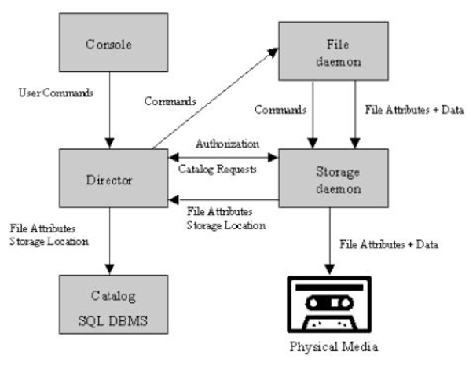
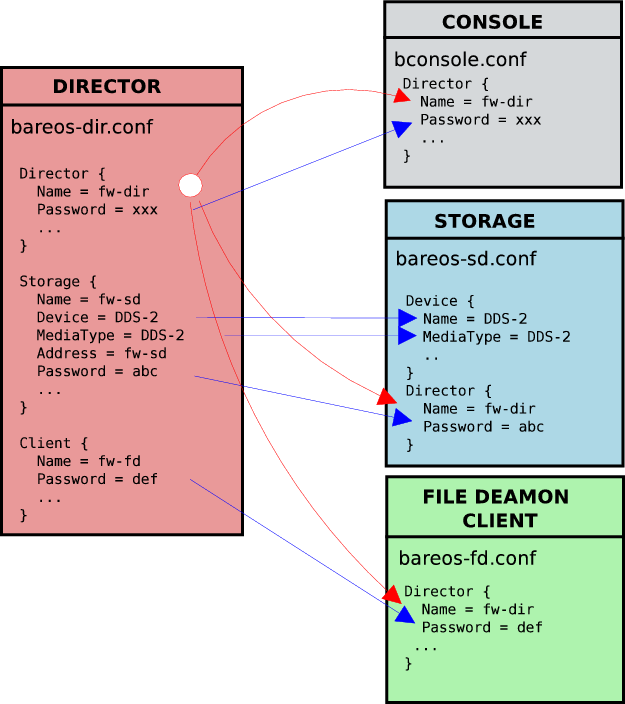

Bareos is a set of computer programs that permits the system administrator to manage backup, recovery, and verification of computer data across a network of computers of different kinds. Bareos can also run entirely upon a single computer and can backup to various types of media, including tape and disk.
In technical terms, it is a network Client/Server based backup program. Bareos is relatively easy to use and efficient, while offering many advanced storage management features that make it easy to find and recover lost or damaged files. Due to its modular design, Bareos is scalable from small single computer systems to systems consisting of hundreds of computers located over a large network.
If you are currently using a program such as tar, dump, or bru to backup your computer data, and you would like a network solution, more flexibility, or catalog services, Bareos will most likely provide the additional features you want. However, if you are new to Unix systems or do not have offsetting experience with a sophisticated backup package, the Bareos project does not recommend using Bareos as it is much more difficult to setup and use than tar or dump.
If you want Bareos to behave like the above mentioned simple programs and write over any tape that you put in the drive, then you will find working with Bareos difficult. Bareos is designed to protect your data following the rules you specify, and this means reusing a tape only as the last resort. It is possible to ”force” Bareos to write over any tape in the drive, but it is easier and more efficient to use a simpler program for that kind of operation.
If you would like a backup program that can write to multiple volumes (i.e. is not limited by your tape drive capacity), Bareos can most likely fill your needs.
If you are currently using a sophisticated commercial package such as Legato Networker, ARCserveIT, Arkeia, IBM Tivoli Storage Manager or PerfectBackup+, you may be interested in Bareos, which provides many of the same features and is free software available under the GNU AGPLv3 software license.
Bareos is made up of the following five major components or services: Director, Console, File, Storage, and Monitor services.
The Bareos Director service is the program that supervises all the backup, restore, verify and archive operations. The system administrator uses the Bareos Director to schedule backups and to recover files. The Director runs as a daemon (or service) in the background.
The Bareos Console service is the program that allows the administrator or user to communicate with the Bareos Director Currently, the Bareos Console is available in two versions: a text-based console and a QT-based GUI interface. The first and simplest is to run the Console program in a shell window (i.e. TTY interface). Most system administrators will find this completely adequate. The second version is a GUI interface that is far from complete, but quite functional as it has most the capabilities of the shell Console. For more details see the Bareos Console Design Document.
The Bareos File service (also known as the Client program) is the software program that is installed on the machine to be backed up. It is specific to the operating system on which it runs and is responsible for providing the file attributes and data when requested by the Director. The File services are also responsible for the file system dependent part of restoring the file attributes and data during a recovery operation. For more details see the File Services Daemon Design Document in the Bareos Developer’s Guide. This program runs as a daemon on the machine to be backed up. In addition to Unix/Linux File daemons, there are File daemons for Windows and MacOS.
The Bareos Storage services consist of the software programs that perform the storage and recovery of the file attributes and data to the physical backup media or volumes. In other words, the Storage daemon is responsible for reading and writing your tapes (or other storage media, e.g. files). The Storage services runs as a daemon on the machine that has the backup device (such as a tape drive).
The Catalog services are comprised of the software programs responsible for maintaining the file indexes and volume databases for all files backed up. The Catalog services permit the system administrator or user to quickly locate and restore any desired file. The Catalog services sets Bareos apart from simple backup programs like tar and bru, because the catalog maintains a record of all Volumes used, all Jobs run, and all Files saved, permitting efficient restoration and Volume management. Bareos currently supports three different databases, MySQL, PostgreSQL, and SQLite, one of which must be chosen when building Bareos.
The three SQL databases currently supported (MySQL, PostgreSQL or SQLite) provide quite a number of features, including rapid indexing, arbitrary queries, and security. Although the Bareos project plans to support other major SQL databases, the current Bareos implementation interfaces only to MySQL, PostgreSQL and SQLite. For the technical and porting details see the Catalog Services Design Document in the developer’s documented.
The packages for MySQL and PostgreSQL are available for several operating systems.
A Bareos Tray Monitor service is the program that allows the user to watch current status of Bareos Directors, Bareos File Daemons and Bareos Storage Daemons. Currently, a QT version is available, which works with Linux and Windows.
To perform a successful save or restore, the following four daemons must be configured and running: the Director daemon, the File daemon, the Storage daemon, and the Catalog service (MySQL, PostgreSQL or SQLite).
In order for Bareos to understand your system, what clients you want backed up and how, you must create a number of configuration files containing resources (or objects).
Bareos is in a state of evolution, and as a consequence, this manual will not always agree with the code. If an item in this manual is preceded by an asterisk (*), it indicates that the particular feature is not implemented. If it is preceded by a plus sign (+), it indicates that the feature may be partially implemented.
If you are reading this manual as supplied in a released version of the software, the above paragraph holds true. If you are reading the online version of the manual, www.bareos.org, please bear in mind that this version describes the current version in development that may contain features not in the released version. Just the same, it generally lags behind the code a bit.
To get Bareos up and running quickly, the author recommends that you first scan the Terminology section below, then quickly review the next chapter entitled The Current State of Bareos, then the Installing Bareos, the Getting Started with Bareos, which will give you a quick overview of getting Bareos running. After which, you should proceed to the chapter How to Configure Bareos, and finally th chapter on Running Bareos.
The catalog feature is one part of Bareos that distinguishes it from simple backup and archive programs such as dump and tar.
Verify can also be used to check that the most recent Job data written to a Volume agrees with what is stored in the Catalog (i.e. it compares the file attributes), *or it can check the Volume contents against the original files on disk.
The File Retention Period determines the time that File records are kept in the catalog database. This period is important for two reasons: the first is that as long as File records remain in the database, you can ”browse” the database with a console program and restore any individual file. Once the File records are removed or pruned from the database, the individual files of a backup job can no longer be ”browsed”. The second reason for carefully choosing the File Retention Period is because the volume of the database File records use the most storage space in the database. As a consequence, you must ensure that regular ”pruning” of the database file records is done to keep your database from growing too large. (See the Console prune command for more details on this subject).
The Job Retention Period is the length of time that Job records will be kept in the database. Note, all the File records are tied to the Job that saved those files. The File records can be purged leaving the Job records. In this case, information will be available about the jobs that ran, but not the details of the files that were backed up. Normally, when a Job record is purged, all its File records will also be purged.
The Volume Retention Period is the minimum of time that a Volume will be kept before it is reused. Bareos will normally never overwrite a Volume that contains the only backup copy of a file. Under ideal conditions, the Catalog would retain entries for all files backed up for all current Volumes. Once a Volume is overwritten, the files that were backed up on that Volume are automatically removed from the Catalog. However, if there is a very large pool of Volumes or a Volume is never overwritten, the Catalog database may become enormous. To keep the Catalog to a manageable size, the backup information should be removed from the Catalog after the defined File Retention Period. Bareos provides the mechanisms for the catalog to be automatically pruned according to the retention periods defined.
Bareos is a backup, restore and verification program and is not a complete disaster recovery system in itself, but it can be a key part of one if you plan carefully and follow the instructions included in the Disaster Recovery Chapter of this manual.
With proper planning, as mentioned in the Disaster Recovery chapter, Bareos can be a central component of your disaster recovery system. For example, if you have created an emergency boot disk, and/or a Bareos Rescue disk to save the current partitioning information of your hard disk, and maintain a complete Bareos backup, it is possible to completely recover your system from ”bare metal” that is starting from an empty disk.
If you have used the WriteBootstrap record in your job or some other means to save a valid bootstrap file, you will be able to use it to extract the necessary files (without using the catalog or manually searching for the files to restore).
The following block diagram shows the typical interactions between the Bareos Services for a backup job. Each block represents in general a separate process (normally a daemon). In general, the Director oversees the flow of information. It also maintains the Catalog.

In other words, what is and what is not currently implemented and functional.
If you are like me, you want to get Bareos running immediately to get a feel for it, then later you want to go back and read about all the details. This chapter attempts to accomplish just that: get you going quickly without all the details.
Bareos comes prepackaged for a number of Linux distributions. So the easiert way to get to a running Bareos installation, is to use a platform where prepacked Bareos packages are available. Additional information can be found in the chapter Operating Systems.
If Bareos is available as a package, only 4 steps are required to get to a running Bareos System:
This will start a very basic Bareos installation which will regularly backup a directory to disk. In order to fit it to your needs, you’ll have to adapt the configuration and might want to backup other clients.
You’ll find Bareos binary package repositories at http://download.bareos.org/bareos. Add the repository to your system. You will find the public key in the repodata subdirectory (for Debian the distribution directory itself). See your distribution’s documentation for details.
You will then have to install the package bareos.
This will install all client- and server components and the postgresql backend. We recommend to use postgresql, therefore this is the default. You can also use mysql or sqlite3 (where sqlite3 is intended for testing purposes only, by no means recommended for productive use).
If you want to use mysql rather than postgresql, you need two packages: bareos and bareos-database-mysql.
Here are some working examples:
For adding the repository:
For using PostgreSQL backend:
For using MySQL backend:
Just replace RHEL by CentOS in the repository URL
yum in RHEL 5 has slightly different behaviour as far as dependency resolving is concerned: it sometimes install a dependent package after the one that has the dependency defined. To make sure that it works, install the desired Bareos database backend package first in a separate step:
First add the repository using:
After that you can install with PostgreSQL backend:
Or install with MySQL backend:
Again, just replace RHEL with CentOS in the repository URL.
For adding the repository:
After that you can install with PostgreSQL backend:
Or install with MySQL backend:
In this example using mysql as database backend.
We assume that you have already your database installed and basically running. Currently the database backend Postgres and MySQL are recommended. The Sqlite database backend is only intended for testing purposes.
The easiest way to set up a database is using an system account that have passwordless local access to the database. Often this is the user root for MySQL and the user postgres for PostgreSQL.
If your are using PostgreSql and your PostgreSql admin is is postgres (default), use following commands:
Make sure, that root has direct access to the local MySQL server. Check if the command mysql connects to the database without defining the the password. This is the default on RedHat and SUSE distributions. On other systems (Debian, Ubuntu), create the file /root/.my.cnf with your authentication informations:
Setup the Bareos database tables by following commands:
After this, the file /root/.my.cnf is no longer required for Bareos.
You will eventually have to allow access to the ports 9101-9103, used by Bareos.
Now you should be able to access the director using the bconsole.
In order to make Bareos as flexible as possible, the directions given to Bareos are specified in several pieces. The main instruction is the job resource, which defines a job. A backup job generally consists of a FileSet, a Client, a Schedule for one or several levels or times of backups, a Pool, as well as additional instructions. Another way of looking at it is the FileSet is what to backup; the Client is who to backup; the Schedule defines when, and the Pool defines where (i.e. what Volume).
Typically one FileSet/Client combination will have one corresponding job. Most of the directives, such as FileSets, Pools, Schedules, can be mixed and matched among the jobs. So you might have two different Job definitions (resources) backing up different servers using the same Schedule, the same Fileset (backing up the same directories on two machines) and maybe even the same Pools. The Schedule will define what type of backup will run when (e.g. Full on Monday, incremental the rest of the week), and when more than one job uses the same schedule, the job priority determines which actually runs first. If you have a lot of jobs, you might want to use JobDefs, where you can set defaults for the jobs, which can then be changed in the job resource, but this saves rewriting the identical parameters for each job. In addition to the FileSets you want to back up, you should also have a job that backs up your catalog.
Finally, be aware that in addition to the backup jobs there are restore, verify, and admin jobs, which have different requirements.
If you have been using a program such as tar to backup your system, Pools, Volumes, and labeling may be a bit confusing at first. A Volume is a single physical tape (or possibly a single file) on which Bareos will write your backup data. Pools group together Volumes so that a backup is not restricted to the length of a single Volume (tape). Consequently, rather than explicitly naming Volumes in your Job, you specify a Pool, and Bareos will select the next appendable Volume from the Pool and request you to mount it.
Although the basic Pool options are specified in the Director’s Pool resource, the real Pool is maintained in the Bareos Catalog. It contains information taken from the Pool resource (bareos-dir.conf) as well as information on all the Volumes that have been added to the Pool. Adding Volumes to a Pool is usually done manually with the Console program using the label command.
For each Volume, Bareos maintains a fair amount of catalog information such as the first write date/time, the last write date/time, the number of files on the Volume, the number of bytes on the Volume, the number of Mounts, etc.
Before Bareos will read or write a Volume, the physical Volume must have a Bareos software label so that Bareos can be sure the correct Volume is mounted. This is usually done using the label command in the Console program.
The steps for creating a Pool, adding Volumes to it, and writing software labels to the Volumes, may seem tedious at first, but in fact, they are quite simple to do, and they allow you to use multiple Volumes (rather than being limited to the size of a single tape). Pools also give you significant flexibility in your backup process. For example, you can have a ”Daily” Pool of Volumes for Incremental backups and a ”Weekly” Pool of Volumes for Full backups. By specifying the appropriate Pool in the daily and weekly backup Jobs, you thereby insure that no daily Job ever writes to a Volume in the Weekly Pool and vice versa, and Bareos will tell you what tape is needed and when.
For more on Pools, see the Pool Resource section of the Director Configuration chapter, or simply read on, and we will come back to this subject later.
On Unix, Bareos configuration files are usualy location in the /etc/bareos/ directory and are named accordingly to the programs that use it: bareos-fd.conf, bareos-sd.conf, bareos-dir.conf, bconsole.conf, etc.
For information about Windows configuration files, see the Windows chapter.
The Console program is used by the administrator to interact with the Director and to manually start/stop Jobs or to obtain Job status information.
The Console configuration file is named bconsole.conf.
Normally, for first time users, no change is needed to these files. Reasonable defaults are set.
Further details are in the Console configuration chapter.
The File daemon is a program that runs on each (Client) machine. At the request of the Director, finds the files to be backed up and sends them (their data) to the Storage daemon.
The File daemon configuration file is named bareos-fd.conf. Normally, for first time users, no change is needed to this file. Reasonable defaults are set. However, if you are going to back up more than one machine, you will need to install the File daemon with a unique configuration file on each machine to be backed up. The information about each File daemon must appear in the Director’s configuration file.
Further details are in the File daemon configuration chapter.
The Director is the central control program for all the other daemons. It schedules and monitors all jobs to be backed up.
The Director configuration file is named bareos-dir.conf.
In general, the only change you must make is modify the FileSet resource so that the Include configuration directive contains at least one line with a valid name of a directory (or file) to be saved.
You may also want to change the email address for notification from the default root to your email address.
Finally, if you have multiple systems to be backed up, you will need a separate File daemon or Client specification for each system, specifying its name, address, and password. We have found that giving your daemons the same name as your system but post fixed with -fd helps a lot in debugging. That is, if your system name is foobaz, you would give the File daemon the name foobaz-fd. For the Director, you should use foobaz-dir, and for the storage daemon, you might use foobaz-sd. Each of your Bareos components must have a unique name. If you make them all the same, aside from the fact that you will not know what daemon is sending what message, if they share the same working directory, the daemons temporary file names will not be unique, and you will get many strange failures.
More information is in the Director configuration chapter.
The Storage daemon is responsible, at the Director’s request, for accepting data from a File daemon and placing it on Storage media, or in the case of a restore request, to find the data and send it to the File daemon.
The Storage daemon’s configuration file is named bareos-sd.conf. The default configuration comes with backup to disk only, so the Archive device points to a directory in which the Volumes will be created as files when you label the Volume. These Storage resource name and Media Type must be the same as the corresponding ones in the Director’s configuration file bareos-dir.conf.
Further information is in the Storage daemon configuration chapter.
You can test if your configuration file is syntactically correct by running the appropriate daemon with the -t option. The daemon will process the configuration file and print any error messages then terminate.
will test the configuration files of each of the main programs. If the configuration file is OK, the program will terminate without printing anything.
Before spending a lot of time on Bareos only to find that it doesn’t work with your tape drive, please read the Testing Your Tape Drive chapter of this manual. TapeTesting chapter is missing! If you have a modern standard SCSI tape drive on a Linux or Solaris, most likely it will work, but better test than be sorry. For FreeBSD (and probably other xBSD flavors), reading the above mentioned tape testing chapter is a must. Also, for FreeBSD, please see The FreeBSD Diary for a detailed description on how to make Bacula work on your system. This information should also work with Bareos.
Probably the most important part of running Bareos is being able to restore files. If you haven’t tried recovering files at least once, when you actually have to do it, you will be under a lot more pressure, and prone to make errors, than if you had already tried it once.
To get a good idea how to use Bareos in a short time, we strongly recommend that you follow the example in the Running Bareos Chapter of this manual where you will get detailed instructions on how to run Bareos.
If you intend to use Bareos as a disaster recovery tool rather than simply a program to restore lost or damaged files, you will want to read the Disaster Recovery Using Bareos Chapter of this manual.
In any case, you are strongly urged to carefully test restoring some files that you have saved rather than wait until disaster strikes. This way, you will be prepared.
This chapter will guide you through running Bareos. To do so, we assume you have installed Bareos. However, we assume that you have not changed the .conf files. If you have modified the .conf files, please go back and uninstall Bareos, then reinstall it, but do not make any changes. The examples in this chapter use the default configuration files, and will write the volumes to disk in your /var/lib/bareos/storage/ directory, in addition, the data backed up will be the source directory where you built Bareos. As a consequence, you can run all the Bareos daemons for these tests as non-root. Please note, in production, your File daemon(s) must run as root. See the Security chapter for more information on this subject.
The general flow of running Bareos is:
Each of these steps is described in more detail below.
Before running Bareos for the first time in production, we recommend that you run the test command in the btape program as described in the Utility Program Chapter of this manual. This will help ensure that Bareos functions correctly with your tape drive. If you have a modern HP, Sony, Tandberg Data or Quantum LTO tape drive running on Linux or Solaris, you can probably skip this test as Bareos is well tested with these drives and systems. For all other cases, you are strongly encouraged to run the test before continuing. btape also has a fill command that attempts to duplicate what Bareos does when filling a tape and writing on the next tape. You should consider trying this command as well, but be forewarned, it can take hours (about four hours on my drive) to fill a large capacity tape.
If you are using MySQL or PostgreSQL as the Bareos database, you should start it before you attempt to run a job to avoid getting error messages from Bareos when it starts. If you are using SQLite you need do nothing. SQLite is automatically started by Bareos.
Assuming you have installed the packages, to start the three daemons, from your installation directory, simply enter:
The bareos script starts the Storage daemon, the File daemon, and the Director daemon, which all normally run as daemons in the background. If you are using the autostart feature of Bareos, your daemons will either be automatically started on reboot, or you can control them individually with the files bareos-dir, bareos-fd, and bareos-sd, which are usually located in /etc/init.d, though the actual location is system dependent. Some distributions may do this differently.
Note, on Windows, currently only the File daemon is ported, and it must be started differently. Please see the Windows Version of Bareos chapter of this manual.
The rpm packages configure the daemons to run as user=root and group=bareos. The rpm installation also creates the group bareos if it does not exist on the system. Any users that you add to the group bareos will have access to files created by the daemons. To disable or alter this behavior edit the daemon startup scripts:
and then restart as noted above.
The installation chapter of this manual explains how you can install scripts that will automatically restart the daemons when the system starts.
To communicate with the director and to query the state of Bareos or run jobs, from the top level directory, simply enter:
bconsole
For simplicity, here we will describe only the bconsole program, also there is also a graphical interface called BAT.
The bconsole runs the Bareos Console program, which connects to the Director daemon. Since Bareos is a network program, you can run the Console program anywhere on your network. Most frequently, however, one runs it on the same machine as the Director. Normally, the Console program will print something similar to the following:
the asterisk is the console command prompt.
Type help to see a list of available commands:
Command Description
======= ===========
add Add media to a pool
autodisplay Autodisplay console messages
automount Automount after label
cancel Cancel a job
create Create DB Pool from resource
delete Delete volume, pool or job
disable Disable a job
enable Enable a job
estimate Performs FileSet estimate, listing gives full listing
exit Terminate Bconsole session
export Export volumes from normal slots to import/export slots
gui Non-interactive gui mode
help Print help on specific command
import Import volumes from import/export slots to normal slots
label Label a tape
list List objects from catalog
llist Full or long list like list command
messages Display pending messages
memory Print current memory usage
mount Mount storage
move Move slots in an autochanger
prune Prune expired records from catalog
purge Purge records from catalog
quit Terminate Bconsole session
query Query catalog
restore Restore files
relabel Relabel a tape
release Release storage
reload Reload conf file
rerun Rerun a job
run Run a job
status Report status
setbandwidth Sets bandwidth
setdebug Sets debug level
setip Sets new client address -- if authorized
show Show resource records
sqlquery Use SQL to query catalog
time Print current time
trace Turn on/off trace to file
unmount Unmount storage
umount Umount - for old-time Unix guys, see unmount
update Update volume, pool or stats
use Use specific catalog
var Does variable expansion
version Print Director version
wait Wait until no jobs are running
Details of the console program’s commands are explained in the Console Chapter of this manual.
At this point, we assume you have done the following:
Furthermore, we assume for the moment you are using the default configuration files.
At this point, enter the show filesets and you should get something similar this:
FileSet: name=Full Set
O M
N
I /usr/sbin
N
E /var/lib/bareos
E /var/lib/bareos/storage
E /proc
E /tmp
E /.journal
E /.fsck
N
This is a pre-defined FileSet that will backup the Bareos source directory. The actual directory names printed should correspond to your system configuration. For testing purposes, we have chosen a directory of moderate size (about 40 Megabytes) and complexity without being too big. The FileSet Catalog is used for backing up Bareos’s catalog and is not of interest to us for the moment. The I entries are the files or directories that will be included in the backup and the E are those that will be excluded, and the O entries are the options specified for the FileSet. You can change what is backed up by editing bareos-dir.conf and changing the File = line in the FileSet resource.
Now is the time to run your first backup job. We are going to backup your Bareos source directory to a File Volume in your /var/lib/bareos/storage/ directory just to show you how easy it is. Now enter:
and you should get the following output:
where the times and the Director’s name will be different according to your setup. This shows that an Incremental job is scheduled to run for the Job BackupClient1 at 1:05am and that at 1:10, a BackupCatalog is scheduled to run. Note, you should probably change the name BackupClient1 to be the name of your machine, if not, when you add additional clients, it will be very confusing.
Now enter:
and you should get something like:
In this case, the client is named bareos-fd your name will be different, but the line beginning with bareos-fd Version ... is printed by your File daemon, so we are now sure it is up and running.
Finally do the same for your Storage daemon with:
and you should get:
You will notice that the default Storage daemon device is named File and that it will use device /var/lib/bareos/storage, which is not currently open.
Now, let’s actually run a job with:
you should get the following output:
Here, Bareos has listed the three different Jobs that you can run, and you should choose number 1 and type enter, at which point you will get:
At this point, take some time to look carefully at what is printed and understand it. It is asking you if it is OK to run a job named BackupClient1 with FileSet Full Set (we listed above) as an Incremental job on your Client (your client name will be different), and to use Storage File and Pool Default, and finally, it wants to run it now (the current time should be displayed by your console).
Here we have the choice to run (yes), to modify one or more of the above parameters (mod), or to not run the job (no). Please enter yes, at which point you should immediately get the command prompt (an asterisk). If you wait a few seconds, then enter the command messages you will get back something like:
TODO: Replace bconsole output by current version of Bareos.
The first message, indicates that no previous Full backup was done, so Bareos is upgrading our Incremental job to a Full backup (this is normal). The second message indicates that the job started with JobId 1., and the third message tells us that Bareos cannot find any Volumes in the Pool for writing the output. This is normal because we have not yet created (labeled) any Volumes. Bareos indicates to you all the details of the volume it needs.
At this point, the job is BLOCKED waiting for a Volume. You can check this if you want by doing a status dir. In order to continue, we must create a Volume that Bareos can write on. We do so with:
and Bareos will print:
at which point, you should enter some name beginning with a letter and containing only letters and numbers (period, hyphen, and underscore) are also permitted. For example, enter TestVolume001, and you should get back:
Finally, enter messages and you should get something like:
If you don’t see the output immediately, you can keep entering messages until the job terminates.
Instead of typing messages multiple times, you can also ask bconsole to wait, until a specific job is finished:
or just wait, which waits for all running jobs to finish.
Another useful command is autodisplay on. With autodisplay activated, messages will automatically be displayed as soon as they are ready.
If you do an ls -l of your /var/lib/bareos/storage directory, you will see that you have the following item:
This is the file Volume that you just wrote and it contains all the data of the job just run. If you run additional jobs, they will be appended to this Volume unless you specify otherwise.
You might ask yourself if you have to label all the Volumes that Bareos is going to use. The answer for disk Volumes, like the one we used, is no. It is possible to have Bareos automatically label volumes. For tape Volumes, you will most likely have to label each of the Volumes you want to use.
If you would like to stop here, you can simply enter quit in the Console program.
If you would like to try restoring the files that you just backed up, read the following section.
If you have run the default configuration and run the job as demonstrated above, you can restore the backed up files in the Console program by entering:
where you will get:
As you can see, there are a number of options, but for the current demonstration, please enter 5 to do a restore of the last backup you did, and you will get the following output:
As you can see, Bareos knows what client you have, and since there was only one, it selected it automatically. Select 2, because you want to restore files from the file set.
where I have truncated the listing on the right side to make it more readable.
Then Bareos produced a listing containing all the jobs that form the current backup, in this case, there is only one, and the Storage daemon was also automatically chosen. Bareos then took all the files that were in Job number 1 and entered them into a directory tree (a sort of in memory representation of your filesystem). At this point, you can use the cd and ls ro dir commands to walk up and down the directory tree and view what files will be restored. For example, if I enter cd /usr/sbin and then enter dir I will get a listing of all the files in the Bareos source directory. On your system, the path might be somewhat different. For more information on this, please refer to the Restore Command Chapter of this manual for more details.
To exit this mode, simply enter:
and you will get the following output:
If you answer yes your files will be restored to /tmp/bareos-restores. If you want to restore the files to their original locations, you must use the mod option and explicitly set Where: to nothing (or to /). We recommend you go ahead and answer yes and after a brief moment, enter messages, at which point you should get a listing of all the files that were restored as well as a summary of the job that looks similar to this:
After exiting the Console program, you can examine the files in /tmp/bareos-restores, which will contain a small directory tree with all the files. Be sure to clean up at the end with:
Simply enter the command quit.
If you have gotten the example shown above to work on your system, you may be ready to add a second Client (File daemon). That is you have a second machine that you would like backed up. The only part you need installed on the other machine is the bareos-filedaemon.
This packages installs also its configuration file /etc/bareos/bareos-fd.conf an sets its hostname + -fd as FileDaemon name. However, the client does not known the Bareos Director, so this information must be given manually.
Lets assume, your second like has the hostname client2 and this name is resolvable by DNS from the client and from the Bareos Director.
Specify the Bareos Director in the File Daemon configuration file /etc/bareos/bareos-fd.conf:
The password is also generated at installation time, but you are free to change it. Just keep in mind, it must be identical on the client and the Bareos Director.
Restart the Bareos File Daemon by
Then you need to make some additions to your Director’s configuration file to define the new File Daemon (Client).
Starting from our original example which should be installed on your system, you should add the following lines (essentially copies of the existing data but with the names changed) to your Director’s configuration file bareos-dir.conf.
Add following section makes the new client know to the Bareos Director. Add this section to the existing Bareos Director configuration file /etc/bareos/bareos-dir.conf:
Using this, the client is know to the Bareos Director. Additional you must specify, what to do with this client. Therefore we specify a Job, which mostly takes its settings from the existing DefaultJob:
Check if the configuration file is correct by
If everything is okay, reload the Bareos Director:
Now the setup for the second client should be ready.
To test the functionality, you can run a backup and restore job like in the example with the first attached FileDaemon. However, there is an even earier way to check if a connection to a File Daemon is working. This is the estimate listing command in bconsole. Using this, the Bareos Director immediately connects to a client and returns all files that will be included in the next backup.
Start bconsole and follow the instructions:
The result should appear immediately.
To make this a real production installation, you will possibly want to use different Pool, or a different schedule. It is up to you to customize.
If you have scheduled your job, typically nightly, there will come a time when the tape fills up and Bareos cannot continue. In this case, Bareos will send you a message similar to the following:
This indicates that Bareos got a write error because the tape is full. Bareos will then search the Pool specified for your Job looking for an appendable volume. In the best of all cases, you will have properly set your Retention Periods and you will have all your tapes marked to be Recycled, and Bareos will automatically recycle the tapes in your pool requesting and overwriting old Volumes. For more information on recycling, please see the Recycling chapter of this manual. If you find that your Volumes were not properly recycled (usually because of a configuration error), please see the Manually Recycling Volumes section of the Recycling chapter.
If like me, you have a very large set of Volumes and you label them with the date the Volume was first writing, or you have not set up your Retention periods, Bareos will not find a tape in the pool, and it will send you a message similar to the following:
Until you create a new Volume, this message will be repeated an hour later, then two hours later, and so on doubling the interval each time up to a maximum interval of one day.
The obvious question at this point is: What do I do now?
The answer is simple: first, using the Console program, close the tape drive using the unmount command. If you only have a single drive, it will be automatically selected, otherwise, make sure you release the one specified on the message (in this case STD-10000).
Next, you remove the tape from the drive and insert a new blank tape. Note, on some older tape drives, you may need to write an end of file mark (mt -f /dev/nst0 weof) to prevent the drive from running away when Bareos attempts to read the label.
Finally, you use the label command in the Console to write a label to the new Volume. The label command will contact the Storage daemon to write the software label, if it is successful, it will add the new Volume to the Pool, then issue a mount command to the Storage daemon. See the previous sections of this chapter for more details on labeling tapes.
The result is that Bareos will continue the previous Job writing the backup to the new Volume.
If you have a Pool of volumes and Bareos is cycling through them, instead of the above message ”Cannot find any appendable volumes.”, Bareos may ask you to mount a specific volume. In that case, you should attempt to do just that. If you do not have the volume any more (for any of a number of reasons), you can simply mount another volume from the same Pool, providing it is appendable, and Bareos will use it. You can use the list volumes command in the console program to determine which volumes are appendable and which are not.
If like me, you have your Volume retention periods set correctly, but you have no more free Volumes, you can relabel and reuse a Volume as follows:
To manually relabel the Volume use the following additional steps:
Most of the commands given above, with the exception of list, will prompt you for the necessary arguments if you simply enter the command name.
When you start the Bareos daemons, the Storage daemon attempts to open all defined storage devices and verify the currently mounted Volume (if configured). Until all the storage devices are verified, the Storage daemon will not accept connections from the Console program. If a tape was previously used, it will be rewound, and on some devices this can take several minutes. As a consequence, you may need to have a bit of patience when first contacting the Storage daemon after starting the daemons. If you can see your tape drive, once the lights stop flashing, the drive will be ready to be used.
The same considerations apply if you have just mounted a blank tape in a drive such as an HP DLT. It can take a minute or two before the drive properly recognizes that the tape is blank. If you attempt to mount the tape with the Console program during this recognition period, it is quite possible that you will hang your SCSI driver (at least on my Red Hat Linux system). As a consequence, you are again urged to have patience when inserting blank tapes. Let the device settle down before attempting to access it.
If you are having difficulties getting one or more of your File daemons to connect to the Storage daemon, it is most likely because you have not used a fully qualified domain name on the Address directive in the Director’s Storage resource. That is the resolver on the File daemon’s machine (not on the Director’s) must be able to resolve the name you supply into an IP address. An example of an address that is guaranteed not to work: localhost. An example that may work: megalon. An example that is more likely to work: magalon.mydomain.com. On Win32 if you don’t have a good resolver (often true on older Windows systems), you might try using an IP address in place of a name.
If your address is correct, then make sure that no other program is using the port 9103 on the Storage daemon’s machine. The Bacula project has reserved these port numbers are by IANA, therefore they should only be used by Bacula and its replacements like Bareos. However, apparently some HP printers do use these port numbers. A netstat -a on the Storage daemon’s machine can determine who is using the 9103 port (used for FD to SD communications in Bareos).
Each of the three daemons (Director, File, Storage) accepts a small set of options on the command line. In general, each of the daemons as well as the Console program accepts the following options:
Creating the Pool is automatically done when Bareos starts, so if you understand Pools, you can skip to the next section.
When you run a job, one of the things that Bareos must know is what Volumes to use to backup the FileSet. Instead of specifying a Volume (tape) directly, you specify which Pool of Volumes you want Bareos to consult when it wants a tape for writing backups. Bareos will select the first available Volume from the Pool that is appropriate for the Storage device you have specified for the Job being run. When a volume has filled up with data, Bareos will change its VolStatus from Append to Full, and then Bareos will use the next volume and so on. If no appendable Volume exists in the Pool, the Director will attempt to recycle an old Volume, if there are still no appendable Volumes available, Bareos will send a message requesting the operator to create an appropriate Volume.
Bareos keeps track of the Pool name, the volumes contained in the Pool, and a number of attributes of each of those Volumes.
When Bareos starts, it ensures that all Pool resource definitions have been recorded in the catalog. You can verify this by entering:
to the console program, which should print something like the following:
If you attempt to create the same Pool name a second time, Bareos will print:
Bareos requires that each Volume contains a software label. There are several strategies for labeling volumes. The one I use is to label them as they are needed by Bareos using the console program. That is when Bareos needs a new Volume, and it does not find one in the catalog, it will send me an email message requesting that I add Volumes to the Pool. I then use the label command in the Console program to label a new Volume and to define it in the Pool database, after which Bareos will begin writing on the new Volume. Alternatively, I can use the Console relabel command to relabel a Volume that is no longer used providing it has VolStatus Purged.
Another strategy is to label a set of volumes at the start, then use them as Bareos requests them. This is most often done if you are cycling through a set of tapes, for example using an autochanger. For more details on recycling, please see the Automatic Volume Recycling chapter of this manual.
If you run a Bareos job, and you have no labeled tapes in the Pool, Bareos will inform you, and you can create them ”on-the-fly” so to speak. In my case, I label my tapes with the date, for example: DLT-18April02. See below for the details of using the label command.
Labeling volumes is normally done by using the console program.
If Bareos complains that you cannot label the tape because it is already labeled, simply unmount the tape using the unmount command in the console, then physically mount a blank tape and re-issue the label command.
Since the physical storage media is different for each device, the label command will provide you with a list of the defined Storage resources such as the following:
At this point, you should have a blank tape in the drive corresponding to the Storage resource that you select.
It will then ask you for the Volume name.
If Bareos complains:
It means that the volume name xxxx that you entered already exists in the Media database. You can list all the defined Media (Volumes) with the list media command. Note, the LastWritten column has been truncated for proper printing.
Once Bareos has verified that the volume does not already exist, it will prompt you for the name of the Pool in which the Volume (tape) is to be created. If there is only one Pool (Default), it will be automatically selected.
If the tape is successfully labeled, a Volume record will also be created in the Pool. That is the Volume name and all its other attributes will appear when you list the Pool. In addition, that Volume will be available for backup if the MediaType matches what is requested by the Storage daemon.
When you labeled the tape, you answered very few questions about it – principally the Volume name, and perhaps the Slot. However, a Volume record in the catalog database (internally known as a Media record) contains quite a few attributes. Most of these attributes will be filled in from the default values that were defined in the Pool (i.e. the Pool holds most of the default attributes used when creating a Volume).
It is also possible to add media to the pool without physically labeling the Volumes. This can be done with the add command. For more information, please see the Console Chapter of this manual.
We recommend you take your time before implementing a production a Bareos backup system since Bareos is a rather complex program, and if you make a mistake, you may suddenly find that you cannot restore your files in case of a disaster. This is especially true if you have not previously used a major backup product.
If you follow the instructions in this chapter, you will have covered most of the major problems that can occur. It goes without saying that if you ever find that we have left out an important point, please inform us, so that we can document it to the benefit of everyone.
The following assumes that you have installed Bareos, you more or less understand it, you have at least worked through the tutorial or have equivalent experience, and that you have set up a basic production configuration. If you haven’t done the above, please do so and then come back here. The following is a sort of checklist that points with perhaps a brief explanation of why you should do it. In most cases, you will find the details elsewhere in the manual. The order is more or less the order you would use in setting up a production system (if you already are in production, use the checklist anyway).
On most modern Win32 machines, you can edit the conf files with notepad and choose output encoding UTF-8.
Although these items may not be critical, they are recommended and will help you avoid problems.
If you absolutely must implement a system where you write a different tape each night and take it offsite in the morning. We recommend that you do several things:
When each of the Bareos programs starts, it reads a configuration file specified on the command line or the default bareos-dir.conf, bareos-fd.conf, bareos-sd.conf, or console.conf for the Director daemon, the File daemon, the Storage daemon, and the Console program respectively.
Each service (Director, Client, Storage, Console) has its own configuration file containing a set of Resource definitions. These resources are very similar from one service to another, but may contain different directives (records) depending on the service. For example, in the Director’s resource file, the Director resource defines the name of the Director, a number of global Director parameters and his password. In the File daemon configuration file, the Director resource specifies which Directors are permitted to use the File daemon.
If you install a full Bareos system (Director, Storage and File Daemon) to one system, the Bareos packages tries there best to generate a working configuration. However, this configuration is very limited and before you will use Bareos in production, it will be required, that you customize the configuration.
Bareos is designed to handle most character sets of the world, US ASCII, German, French, Chinese, ... However, it does this by encoding everything in UTF-8, and it expects all configuration files (including those read on Win32 machines) to be in UTF-8 format. UTF-8 is typically the default on Linux machines, but not on all Unix machines, nor on Windows, so you must take some care to ensure that your locale is set properly before starting Bareos.
To ensure that Bareos configuration files can be correctly read including foreign characters the LANG environment variable must end in .UTF-8. A full example is en_US.UTF-8. The exact syntax may vary a bit from OS to OS, and exactly how you define it will also vary. On most newer Win32 machines, you can use notepad to edit the conf files, then choose output encoding UTF-8.
Bareos assumes that all filenames are in UTF-8 format on Linux and Unix machines. On Win32 they are in Unicode (UTF-16), and will be automatically converted to UTF-8 format.
Although, you won’t need to know the details of all the directives a basic knowledge of Bareos resource directives is essential. Each directive contained within the resource (within the braces) is composed of a keyword followed by an equal sign (=) followed by one or more values. The keywords must be one of the known Bareos resource record keywords, and it may be composed of upper or lower case characters and spaces.
Each resource definition MUST contain a Name directive, and may optionally contain a Description directive. The Name directive is used to uniquely identify the resource. The Description directive is (will be) used during display of the Resource to provide easier human recognition. For example:
Defines the Director resource with the name ”MyDir” and a working directory $HOME/bareos/bin/working. In general, if you want spaces in a name to the right of the first equal sign (=), you must enclose that name within double quotes. Otherwise quotes are not generally necessary because once defined, quoted strings and unquoted strings are all equal.
When reading the configuration file, blank lines are ignored and everything after a hash sign (#) until the end of the line is taken to be a comment. A semicolon (;) is a logical end of line, and anything after the semicolon is considered as the next statement. If a statement appears on a line by itself, a semicolon is not necessary to terminate it, so generally in the examples in this manual, you will not see many semicolons.
Case (upper/lower) and spaces are totally ignored in the resource directive keywords (the part before the equal sign).
Within the keyword (i.e. before the equal sign), spaces are not significant. Thus the keywords: name, Name, and N a m e are all identical.
Spaces after the equal sign and before the first character of the value are ignored.
In general, spaces within a value are significant (not ignored), and if the value is a name, you must enclose the name in double quotes for the spaces to be accepted. Names may contain up to 127 characters. Currently, a name may contain any ASCII character. Within a quoted string, any character following a backslash (\) is taken as itself (handy for inserting backslashes and double quotes (”)).
Please note, however, that Bareos resource names as well as certain other names (e.g. Volume names) must contain only letters (including ISO accented letters), numbers, and a few special characters (space, underscore, ...). All other characters and punctuation are invalid.
If you wish to break your configuration file into smaller pieces, you can do so by including other files using the syntax @filename where filename is the full path and filename of another file. The @filename specification can be given anywhere a primitive token would appear.
If you wish include all files in a specific directory, you can use the following:
When parsing the resource directives, Bareos classifies the data according to the types listed below. The first time you read this, it may appear a bit overwhelming, but in reality, it is all pretty logical and straightforward.
Any abbreviation of these modifiers is also permitted (i.e. seconds may be specified as sec or s). A specification of m will be taken as months.
The specification of a time may have as many number/modifier parts as you wish. For example:
are valid date specifications.
Depending on the type of directive, Bareos will expand following variables:
Variable Expansion on Media Labels When labeling a new media, following Bareos internal variables can be used:
Internal Variable | Description |
Year | Year |
Month | Month: 1-12 |
Day | Day: 1-31 |
Hour | Hour: 0-24 |
Minute | Minute: 0-59 |
Second | Second: 0-59 |
WeekDay | Day of the week: 0-6, using 0 for Sunday |
Job | Name of the Job |
Dir | Name of the Director |
Level | Job Level |
Type | Job Type |
JobId | JobId |
JobName | unique name of a job |
Storage | Name of the Storage Daemon |
Client | Name of the Clients |
NumVols | Numbers of volumes in the pool |
Pool | Name of the Pool |
Catalog | Name of the Catalog |
MediaType | Type of the media |
Additional, normal environment variables can be used, e.g. HOME oder HOSTNAME.
Variable Expansion on RunScripts At the configuration of RunScripts following variables can be used:
Variable | Description |
\%c | Client’s Name |
\%d | Director’s Name |
\%e | Job Exit Code |
\%i | JobId |
\%j | Unique JobId |
\%l | Job Level |
\%n | Unadorned Job Name |
\%r | Recipients |
\%s | Since Time |
\%b | Job Bytes |
\%f | Job Files |
\%t | Job Type (Backup, ...) |
\%v | Read Volume Name (only on Director) |
\%V | Write Volume Name (only on Director) |
Variable Expansion in Autochanger Commands At the configuration of autochanger commands following variables can be used:
Variable | Description |
\%a | Archive Device Name |
\%c | Changer Device Name |
\%d | Changer Drive Index |
\%f | Client’s Name |
\%j | Job Name |
\%o | Command |
\%s | Slot Base 0 |
\%S | Slot Base 1 |
\%v | Volume Name |
Variable Expansion in Mount Commands At the configuration of mount commands following variables can be used:
Variable | Description |
\%a | Archive Device Name |
\%e | Erase |
\%n | Part Number |
\%m | Mount Point |
\%v | Last Part Name |
Variable Expansion in Mail and Operator Commands At the configuration of mail and operator commands following variables can be used:
Variable | Description |
\%c | Client’s Name |
\%d | Director’s Name |
\%e | Job Exit Code |
\%i | JobId |
\%j | Unique Job Id |
\%l | Job Level |
\%n | Unadorned Job Name |
\%s | Since Time |
\%t | Job Type (Backup, ...) |
\%r | Recipients |
\%v | Read Volume Name |
\%V | Write Volume Name |
\%b | Job Bytes |
\%F | Job Files |
The following table lists all current Bareos resource types. It shows what resources must be defined for each service (daemon). The default configuration files will already contain at least one example of each permitted resource, so you need not worry about creating all these kinds of resources from scratch.
| Resource | Director | Client | Storage | Console
|
| Autochanger | No | No | Yes | No |
| Catalog | Yes | No | No | No |
| Client | Yes | Yes | No | No |
| Console | Yes | No | No | Yes |
| Device | No | No | Yes | No |
| Director | Yes | Yes | Yes | Yes |
| FileSet | Yes | No | No | No |
| Job | Yes | No | No | No |
| JobDefs | Yes | No | No | No |
| Message | Yes | Yes | Yes | No |
| NDMP | No | No | Yes | No |
| Pool | Yes | No | No | No |
| Schedule | Yes | No | No | No |
| Storage | Yes | No | Yes | No |
In order for one daemon to contact another daemon, it must authorize itself with a password. In most cases, the password corresponds to a particular name, so both the name and the password must match to be authorized. Passwords are plain text, any text. They are not generated by any special process; just use random text.
The default configuration files are automatically defined for correct authorization with random passwords. If you add to or modify these files, you will need to take care to keep them consistent.
Here is sort of a picture of what names/passwords in which files/Resources must match up:

In the left column, you will find the Director, Storage, and Client resources, with their names and passwords – these are all in bareos-dir.conf. In the right column are where the corresponding values should be found in the Console, Storage daemon (SD), and File daemon (FD) configuration files.
Please note that the Address, fd-sd, that appears in the Storage resource of the Director, preceded with and asterisk in the above example, is passed to the File daemon in symbolic form. The File daemon then resolves it to an IP address. For this reason, you must use either an IP address or a fully qualified name. A name such as localhost, not being a fully qualified name, will resolve in the File daemon to the localhost of the File daemon, which is most likely not what is desired. The password used for the File daemon to authorize with the Storage daemon is a temporary password unique to each Job created by the daemons and is not specified in any .conf file.
The details of each Resource and the directives permitted therein are described in the following chapters.
The following configuration files must be defined:
Of all the configuration files needed to run Bareos, the Director’s is the most complicated, and the one that you will need to modify the most often as you add clients or modify the FileSets.
For a general discussion of configuration files and resources including the data types recognized by Bareos. Please see the Configuration chapter of this manual.
Director resource type may be one of the following:
Job, JobDefs, Client, Storage, Catalog, Schedule, FileSet, Pool, Director, or Messages. We present them here in the most logical order for defining them:
Note, everything revolves around a job and is tied to a job in one way or another.
The Director resource defines the attributes of the Directors running on the network. In the current implementation, there is only a single Director resource, but the final design will contain multiple Directors to maintain index and media database redundancy.
The password is plain text. It is not generated through any special process but as noted above, it is better to use random text for security reasons.
The working directory specified must already exist and be readable and writable by the Bareos daemon referencing it.
The PID directory specified must already exist and be readable and writable by the Bareos daemon referencing it.
Typically on Linux systems, you will set this to: /var/run. If you are not installing Bareos in the system directories, you can use the Working Directory as defined above.
The Volume format becomes more complicated with multiple simultaneous jobs, consequently, restores may take longer if Bareos must sort through interleaved volume blocks from multiple simultaneous jobs. This can be avoided by having each simultaneous job write to a different volume or by using data spooling, which will first spool the data to disk simultaneously, then write one spool file at a time to the volume thus avoiding excessive interleaving of the different job blocks.
where ip, ip4, ip6, addr, and port are all keywords. Note, that the address can be specified as either a dotted quadruple, or IPv6 colon notation, or as a symbolic name (only in the ip specification). Also, port can be specified as a number or as the mnemonic value from the /etc/services file. If a port is not specified, the default will be used. If an ip section is specified, the resolution can be made either by IPv4 or IPv6. If ip4 is specified, then only IPv4 resolutions will be permitted, and likewise with ip6.
Please note that if you use the DirAddresses directive, you must not use either a DirPort or a DirAddress directive in the same resource.
Theses statistics records aren’t use for restore purpose, but mainly for capacity planning, billings, etc. See chapter about how to extract information from the catalog for additional information.
See the Configuration chapter of this manual for additional details of time specification.
The default is 5 years.
The following is an example of a valid Director resource definition:
The Job resource defines a Job (Backup, Restore, ...) that Bareos must perform. Each Job resource definition contains the name of a Client and a FileSet to backup, the Schedule for the Job, where the data are to be stored, and what media Pool can be used. In effect, each Job resource must specify What, Where, How, and When or FileSet, Storage, Backup/Restore/Level, and Schedule respectively. Note, the FileSet must be specified for a restore job for historical reasons, but it is no longer used.
Only a single type (Backup, Restore, ...) can be specified for any job. If you want to backup multiple FileSets on the same Client or multiple Clients, you must define a Job for each one.
Note, you define only a single Job to do the Full, Differential, and Incremental backups since the different backup levels are tied together by a unique Job name. Normally, you will have only one Job per Client, but if a client has a really huge number of files (more than several million), you might want to split it into to Jobs each with a different FileSet covering only part of the total files.
Multiple Storage daemons are not currently supported for Jobs, so if you do want to use multiple storage daemons, you will need to create a different Job and ensure that for each Job that the combination of Client and FileSet are unique. The Client and FileSet are what Bareos uses to restore a client, so if there are multiple Jobs with the same Client and FileSet or multiple Storage daemons that are used, the restore will not work. This problem can be resolved by defining multiple FileSet definitions (the names must be different, but the contents of the FileSets may be the same).
When the job actually runs, the unique Job Name will consist of the name you specify here followed by the date and time the job was scheduled for execution. This directive is required.
Restore jobs cannot be automatically started by the scheduler as is the case for Backup, Verify and Admin jobs. To restore files, you must use the restore command in the console.
For a Backup Job, the Level may be one of the following:
If all the above conditions do not hold, the Director will upgrade the Incremental to a Full save. Otherwise, the Incremental backup will be performed as requested.
The File daemon (Client) decides which files to backup for an Incremental backup by comparing start time of the prior Job (Full, Differential, or Incremental) against the time each file was last ”modified” (st_mtime) and the time its attributes were last ”changed”(st_ctime). If the file was modified or its attributes changed on or after this start time, it will then be backed up.
Some virus scanning software may change st_ctime while doing the scan. For example, if the virus scanning program attempts to reset the access time (st_atime), which Bareos does not use, it will cause st_ctime to change and hence Bareos will backup the file during an Incremental or Differential backup. In the case of Sophos virus scanning, you can prevent it from resetting the access time (st_atime) and hence changing st_ctime by using the --no-reset-atime option. For other software, please see their manual.
When Bareos does an Incremental backup, all modified files that are still on the system are backed up. However, any file that has been deleted since the last Full backup remains in the Bareos catalog, which means that if between a Full save and the time you do a restore, some files are deleted, those deleted files will also be restored. The deleted files will no longer appear in the catalog after doing another Full save.
In addition, if you move a directory rather than copy it, the files in it do not have their modification time (st_mtime) or their attribute change time (st_ctime) changed. As a consequence, those files will probably not be backed up by an Incremental or Differential backup which depend solely on these time stamps. If you move a directory, and wish it to be properly backed up, it is generally preferable to copy it, then delete the original.
However, to manage deleted files or directories changes in the catalog during an Incremental backup you can use accurate mode. This is quite memory consuming process. See Accurate mode for more details.
If all the above conditions do not hold, the Director will upgrade the Differential to a Full save. Otherwise, the Differential backup will be performed as requested.
The File daemon (Client) decides which files to backup for a differential backup by comparing the start time of the prior Full backup Job against the time each file was last ”modified” (st_mtime) and the time its attributes were last ”changed” (st_ctime). If the file was modified or its attributes were changed on or after this start time, it will then be backed up. The start time used is displayed after the Since on the Job report. In rare cases, using the start time of the prior backup may cause some files to be backed up twice, but it ensures that no change is missed. As with the Incremental option, you should ensure that the clocks on your server and client are synchronized or as close as possible to avoid the possibility of a file being skipped. Note, on versions 1.33 or greater Bareos automatically makes the necessary adjustments to the time between the server and the client so that the times Bareos uses are synchronized.
When Bareos does a Differential backup, all modified files that are still on the system are backed up. However, any file that has been deleted since the last Full backup remains in the Bareos catalog, which means that if between a Full save and the time you do a restore, some files are deleted, those deleted files will also be restored. The deleted files will no longer appear in the catalog after doing another Full save. However, to remove deleted files from the catalog during a Differential backup is quite a time consuming process and not currently implemented in Bareos. It is, however, a planned future feature.
As noted above, if you move a directory rather than copy it, the files in it do not have their modification time (st_mtime) or their attribute change time (st_ctime) changed. As a consequence, those files will probably not be backed up by an Incremental or Differential backup which depend solely on these time stamps. If you move a directory, and wish it to be properly backed up, it is generally preferable to copy it, then delete the original. Alternatively, you can move the directory, then use the touch program to update the timestamps.
However, to manage deleted files or directories changes in the catalog during an Differential backup you can use accurate mode. This is quite memory consuming process. See Accurate mode for more details.
Every once and a while, someone asks why we need Differential backups as long as Incremental backups pickup all changed files. There are possibly many answers to this question, but the one that is the most important for me is that a Differential backup effectively merges all the Incremental and Differential backups since the last Full backup into a single Differential backup. This has two effects: 1. It gives some redundancy since the old backups could be used if the merged backup cannot be read. 2. More importantly, it reduces the number of Volumes that are needed to do a restore effectively eliminating the need to read all the volumes on which the preceding Incremental and Differential backups since the last Full are done.
For a Restore Job, no level needs to be specified.
For a Verify Job, the Level may be one of the following:
Please note! If you run two Verify Catalog jobs on the same client at the same time, the results will certainly be incorrect. This is because Verify Catalog modifies the Catalog database while running in order to track new files.
Please note! If you run two Verify VolumeToCatalog jobs on the same client at the same time, the results will certainly be incorrect. This is because the Verify VolumeToCatalog modifies the Catalog database while running.
This command can be very useful if you have disk problems because it will compare the current state of your disk against the last successful backup, which may be several jobs.
Note, the current implementation does not identify files that have been deleted.
When restoring a FileSet for a specified date (including ”most recent”), Bareos is able to restore exactly the files and directories that existed at the time of the last backup prior to that date including ensuring that deleted files are actually deleted, and renamed directories are restored properly.
In this mode, the File daemon must keep data concerning all files in memory. So If you do not have sufficient memory, the backup may either be terribly slow or fail.
For 500.000 files (a typical desktop linux system), it will require approximately 64 Megabytes of RAM on your File daemon to hold the required information.
If you use the Restore command in the Console program, to start a restore job, the bootstrap file will be created automatically from the files you select to be restored.
For additional details of the bootstrap file, please see Restoring Files with the Bootstrap File chapter of this manual.
Using this feature, permits you to constantly have a bootstrap file that can recover the current state of your system. Normally, the file specified should be a mounted drive on another machine, so that if your hard disk is lost, you will immediately have a bootstrap record available. Alternatively, you should copy the bootstrap file to another machine after it is updated. Note, it is a good idea to write a separate bootstrap file for each Job backed up including the job that backs up your catalog database.
If the bootstrap-file-specification begins with a vertical bar (|), Bareos will use the specification as the name of a program to which it will pipe the bootstrap record. It could for example be a shell script that emails you the bootstrap record.
Before opening the file or executing the specified command, Bareos performs character substitution like in RunScript directive. To automatically manage your bootstrap files, you can use this in your JobDefs resources:
For more details on using this file, please see the chapter entitled The Bootstrap File of this manual.
By default, the the watchdog thread will kill any Job that has run more than 6 days. The maximum watchdog timeout is independent of MaxRunTime and cannot be changed.
If the directive is set to no, the Storage daemon will prefer finding an unused drive, otherwise, each job started will append to the same Volume (assuming the Pool is the same for all jobs). Setting Prefer Mounted Volumes to no can be useful for those sites with multiple drive autochangers that prefer to maximize backup throughput at the expense of using additional drives and Volumes. This means that the job will prefer to use an unused drive rather than use a drive that is already in use.
Despite the above, we recommend against setting this directive to no since it tends to add a lot of swapping of Volumes between the different drives and can easily lead to deadlock situations in the Storage daemon. We will accept bug reports against it, but we cannot guarantee that we will be able to fix the problem in a reasonable time.
A better alternative for using multiple drives is to use multiple pools so that Bareos will be forced to mount Volumes from those Pools on different drives.
The specified Command (see below for details) is run as an external program prior or after the current Job. This is optional. By default, the program is executed on the Client side like in ClientRunXXXJob.
Console options are special commands that are sent to the director instead of the OS. At this time, console command ouputs are redirected to log with the jobid 0.
You can use following console command : delete, disable, enable, estimate, list, llist, memory, prune, purge, reload, status, setdebug, show, time, trace, update, version, .client, .jobs, .pool, .storage. See console chapter for more information. You need to specify needed information on command line, nothing will be prompted. Example :
You can specify more than one Command/Console option per RunScript.
You can use following options may be specified in the body of the runscript:
| Options | Value | Default | Information |
| Runs On Success | Yes/No | Yes | Run command if JobStatus is successful |
| Runs On Failure | Yes/No | No | Run command if JobStatus isn’t successful |
| Runs On Client | Yes/No | Yes | Run command on client |
| Runs When | Before—After—Always—AfterVSS | Never | When run commands |
| Fail Job On Error | Yes/No | Yes | Fail job if script returns something different from 0 |
| Command | Path to your script | ||
| Console | Console command | ||
Any output sent by the command to standard output will be included in the Bareos job report. The command string must be a valid program name or name of a shell script.
In addition, the command string is parsed then fed to the OS, which means that the path will be searched to execute your specified command, but there is no shell interpretation, as a consequence, if you invoke complicated commands or want any shell features such as redirection or piping, you must call a shell script and do it inside that script.
Before submitting the specified command to the operating system, Bareos performs character substitution of the following characters:
Some character substitutions are not available in all situations. The Job Exit Status code %e edits the following values:
Thus if you edit it on a command line, you will need to enclose it within some sort of quotes.
You can use these following shortcuts:
| Keyword | RunsOnSuccess | RunsOnFailure | FailJobOnError | Runs On Client | RunsWhen |
| Run Before Job | Yes | No | Before | ||
| Run After Job | Yes | No | No | After | |
| Run After Failed Job | No | Yes | No | After | |
| Client Run Before Job | Yes | Yes | Before | ||
| Client Run After Job | Yes | No | Yes | After | |
Examples:
Notes about ClientRunBeforeJob
For compatibility reasons, with this shortcut, the command is executed directly when the client receive it. And if the command is in error, other remote runscripts will be discarded. To be sure that all commands will be sent and executed, you have to use RunScript syntax.
Special Windows Considerations
You can run scripts just after snapshots initializations with AfterVSS keyword.
In addition, for a Windows client, please take note that you must ensure a correct path to your script. The script or program can be a .com, .exe or a .bat file. If you just put the program name in then Bareos will search using the same rules that cmd.exe uses (current directory, Bareos bin directory, and PATH). It will even try the different extensions in the same order as cmd.exe. The command can be anything that cmd.exe or command.com will recognize as an executable file.
However, if you have slashes in the program name then Bareos figures you are fully specifying the name, so you must also explicitly add the three character extension.
The command is run in a Win32 environment, so Unix like commands will not work unless you have installed and properly configured Cygwin in addition to and separately from Bareos.
The System %Path% will be searched for the command. (under the environment variable dialog you have have both System Environment and User Environment, we believe that only the System environment will be available to bareos-fd, if it is running as a service.)
System environment variables can be referenced with %var% and used as either part of the command name or arguments.
So if you have a script in the Bareos
bin directory then the following lines should work fine:
The outer set of quotes is removed when the configuration file is parsed. You need to escape the inner quotes so that they are there when the code that parses the command line for execution runs so it can tell what the program name is.
The special characters
will need to be quoted, if they are part of a filename or argument.
If someone is logged in, a blank ”command” window running the commands will be present during the execution of the command.
Some Suggestions from Phil Stracchino for running on Win32 machines with the native Win32 File daemon:
ClientRunBeforeJob = ”c:/bareos/bin/systemstate.bat”
rather than DOS/Windows form:
ClientRunBeforeJob =
”c:\bareos\bin\systemstate.bat” INCORRECT
For Win32, please note that there are certain limitations:
ClientRunBeforeJob = ”C:/Program Files/Bareos/bin/pre-exec.bat”
Lines like the above do not work because there are limitations of cmd.exe that is used to execute the command. Bareos prefixes the string you supply with cmd.exe /c . To test that your command works you should type cmd /c ”C:/Program Files/test.exe” at a cmd prompt and see what happens. Once the command is correct insert a backslash (\) before each double quote (”), and then put quotes around the whole thing when putting it in the director’s .conf file. You either need to have only one set of quotes or else use the short name and don’t put quotes around the command path.
Below is the output from cmd’s help as it relates to the command line passed to the /c option.
If /C or /K is specified, then the remainder of the command line after the switch is processed as a command line, where the following logic is used to process quote (”) characters:
The following example of the use of the Client Run Before Job directive was submitted by a
user:
You could write a shell script to back up a DB2 database to a FIFO. The shell script is:
The following line in the Job resource in the bareos-dir.conf file:
When the job is run, you will get messages from the output of the script stating that the backup has started. Even though the command being run is backgrounded with &, the job will block until the ”db2 BACKUP DATABASE” command, thus the backup stalls.
To remedy this situation, the ”db2 BACKUP DATABASE” line should be changed to the following:
It is important to redirect the input and outputs of a backgrounded command to /dev/null to prevent the script from blocking.
it’s equivalent to :
Lutz Kittler has pointed out that using the RunBeforeJob directive can be a simple way to modify your schedules during a holiday. For example, suppose that you normally do Full backups on Fridays, but Thursday and Friday are holidays. To avoid having to change tapes between Thursday and Friday when no one is in the office, you can create a RunBeforeJob that returns a non-zero status on Thursday and zero on all other days. That way, the Thursday job will not run, and on Friday the tape you inserted on Wednesday before leaving will be used.
See the Run After Failed Job if you want to run a script after the job has terminated with any non-normal status.
Note, please see the notes above in RunScript concerning Windows clients.
There are several points that must be taken into account when using this directive: first, a failed job is defined as one that has not terminated normally, which includes any running job of the same name (you need to ensure that two jobs of the same name do not run simultaneously); secondly, the Ignore FileSet Changes directive is not considered when checking for failed levels, which means that any FileSet change will trigger a rerun.
If this directive is set to yes (default no), the Storage daemon will be requested to spool the data for this Job to disk rather than write it directly to the Volume (normally a tape).
Thus the data is written in large blocks to the Volume rather than small blocks. This directive is particularly useful when running multiple simultaneous backups to tape. Once all the data arrives or the spool files’ maximum sizes are reached, the data will be despooled and written to tape.
Spooling data prevents interleaving date from several job and reduces or eliminates tape drive stop and start commonly known as ”shoe-shine”.
We don’t recommend using this option if you are writing to a disk file using this option will probably just slow down the backup jobs.
NOTE: When this directive is set to yes, Spool Attributes is also automatically set to yes.
NOTE: When Spool Data is set to yes, Spool Attributes is also automatically set to yes.
Using Add Suffix=.old, /etc/passwd will be restored to /etc/passwsd.old
Using Strip Prefix=/etc, /etc/passwd will be restored to /passwd
Under Windows, if you want to restore c:/files to d:/files, you can use :
For more informations about how use this option, see this.
This specification can be useful for portables, laptops, or other machines that are not always connected to the network or switched on.
A duplicate job in the sense we use it here means a second or subsequent job with the same name starts. This happens most frequently when the first job runs longer than expected because no tapes are available.
If this directive is enabled duplicate jobs will be run. If the directive is set to no (default) then only one job of a given name may run at one time, and the action that Bareos takes to ensure only one job runs is determined by the other directives (see below).
If Allow Duplicate Jobs is set to no and two jobs are present and none of the three directives given below permit cancelling a job, then the current job (the second one started) will be cancelled.
The part after the equal sign must be enclosed in double quotes, and can contain any string or set of options (overrides) that you can specify when entering the Run command from the console. For example storage=DDS-4 .... In addition, there are two special keywords that permit you to clone the current job. They are level=%l and since=%s. The %l in the level keyword permits entering the actual level of the current job and the %s in the since keyword permits putting the same time for comparison as used on the current job. Note, in the case of the since keyword, the %s must be enclosed in double quotes, and thus they must be preceded by a backslash since they are already inside quotes. For example:
A cloned job will not start additional clones, so it is not possible to recurse.
Please note that all cloned jobs, as specified in the Run directives are submitted for running before the original job is run (while it is being initialized). This means that any clone job will actually start before the original job, and may even block the original job from starting until the original job finishes unless you allow multiple simultaneous jobs. Even if you set a lower priority on the clone job, if no other jobs are running, it will start before the original job.
If you are trying to prioritize jobs by using the clone feature (Run directive), you will find it much easier to do using a RunScript resource, or a RunBeforeJob directive.
The priority only affects waiting jobs that are queued to run, not jobs that are already running. If one or more jobs of priority 2 are already running, and a new job is scheduled with priority 1, the currently running priority 2 jobs must complete before the priority 1 job is run, unless Allow Mixed Priority is set.
The default priority is 10.
If you want to run concurrent jobs you should keep these points in mind:
If you have several jobs of different priority, it may not best to start them at exactly the same time, because Bareos must examine them one at a time. If by Bareos starts a lower priority job first, then it will run before your high priority jobs. If you experience this problem, you may avoid it by starting any higher priority jobs a few seconds before lower priority ones. This insures that Bareos will examine the jobs in the correct order, and that your priority scheme will be respected.
Note that only higher priority jobs will start early. Suppose the director will allow two concurrent jobs, and that two jobs with priority 10 are running, with two more in the queue. If a job with priority 5 is added to the queue, it will be run as soon as one of the running jobs finishes. However, new priority 10 jobs will not be run until the priority 5 job has finished.
The following is an example of a valid Job resource definition:
The JobDefs resource permits all the same directives that can appear in a Job resource. However, a JobDefs resource does not create a Job, rather it can be referenced within a Job to provide defaults for that Job. This permits you to concisely define several nearly identical Jobs, each one referencing a JobDefs resource which contains the defaults. Only the changes from the defaults need to be mentioned in each Job.
The Schedule resource provides a means of automatically scheduling a Job as well as the ability to override the default Level, Pool, Storage and Messages resources. If a Schedule resource is not referenced in a Job, the Job can only be run manually. In general, you specify an action to be taken and when.
The Job-overrides permit overriding the Level, the Storage, the Messages, and the Pool specifications provided in the Job resource. In addition, the FullPool, the IncrementalPool, and the DifferentialPool specifications permit overriding the Pool specification according to what backup Job Level is in effect.
By the use of overrides, you may customize a particular Job. For example, you may specify a Messages override for your Incremental backups that outputs messages to a log file, but for your weekly or monthly Full backups, you may send the output by email by using a different Messages override.
Job-overrides are specified as: keyword=value where the keyword is Level, Storage, Messages, Pool, FullPool, DifferentialPool, or IncrementalPool, and the value is as defined on the respective directive formats for the Job resource. You may specify multiple Job-overrides on one Run directive by separating them with one or more spaces or by separating them with a trailing comma. For example:
Date-time-specification determines when the Job is to be run. The specification is a repetition, and as a default Bareos is set to run a job at the beginning of the hour of every hour of every day of every week of every month of every year. This is not normally what you want, so you must specify or limit when you want the job to run. Any specification given is assumed to be repetitive in nature and will serve to override or limit the default repetition. This is done by specifying masks or times for the hour, day of the month, day of the week, week of the month, week of the year, and month when you want the job to run. By specifying one or more of the above, you can define a schedule to repeat at almost any frequency you want.
Basically, you must supply a month, day, hour, and minute the Job is to be run. Of these four items to be specified, day is special in that you may either specify a day of the month such as 1, 2, ... 31, or you may specify a day of the week such as Monday, Tuesday, ... Sunday. Finally, you may also specify a week qualifier to restrict the schedule to the first, second, third, fourth, or fifth week of the month.
For example, if you specify only a day of the week, such as Tuesday the Job will be run every hour of every Tuesday of every Month. That is the month and hour remain set to the defaults of every month and all hours.
Note, by default with no other specification, your job will run at the beginning of every hour. If you wish your job to run more than once in any given hour, you will need to specify multiple run specifications each with a different minute.
The date/time to run the Job can be specified in the following way in pseudo-BNF:
Note, the Week of Year specification wnn follows the ISO standard definition of the week of the year, where Week 1 is the week in which the first Thursday of the year occurs, or alternatively, the week which contains the 4th of January. Weeks are numbered w01 to w53. w00 for Bareos is the week that precedes the first ISO week (i.e. has the first few days of the year if any occur before Thursday). w00 is not defined by the ISO specification. A week starts with Monday and ends with Sunday.
According to the NIST (US National Institute of Standards and Technology), 12am and 12pm are ambiguous and can be defined to anything. However, 12:01am is the same as 00:01 and 12:01pm is the same as 12:01, so Bareos defines 12am as 00:00 (midnight) and 12pm as 12:00 (noon). You can avoid this abiguity (confusion) by using 24 hour time specifications (i.e. no am/pm).
An example schedule resource that is named WeeklyCycle and runs a job with level full each Sunday at 2:05am and an incremental job Monday through Saturday at 2:05am is:
An example of a possible monthly cycle is as follows:
The first of every month:
Every 10 minutes:
Internally Bareos keeps a schedule as a bit mask. There are six masks and a minute field to each schedule. The masks are hour, day of the month (mday), month, day of the week (wday), week of the month (wom), and week of the year (woy). The schedule is initialized to have the bits of each of these masks set, which means that at the beginning of every hour, the job will run. When you specify a month for the first time, the mask will be cleared and the bit corresponding to your selected month will be selected. If you specify a second month, the bit corresponding to it will also be added to the mask. Thus when Bareos checks the masks to see if the bits are set corresponding to the current time, your job will run only in the two months you have set. Likewise, if you set a time (hour), the hour mask will be cleared, and the hour you specify will be set in the bit mask and the minutes will be stored in the minute field.
For any schedule you have defined, you can see how these bits are set by doing a show schedules command in the Console program. Please note that the bit mask is zero based, and Sunday is the first day of the week (bit zero).
The FileSet resource defines what files are to be included or excluded in a backup job. A FileSet resource is required for each backup Job. It consists of a list of files or directories to be included, a list of files or directories to be excluded and the various backup options such as compression, encryption, and signatures that are to be applied to each file.
Any change to the list of the included files will cause Bareos to automatically create a new FileSet (defined by the name and an MD5 checksum of the Include/Exclude contents). Each time a new FileSet is created, Bareos will ensure that the next backup is always a Full save.
We strongly recommend against setting this directive to yes, since doing so may cause you to have an incomplete set of backups.
If this directive is set to yes, any changes you make to the FileSet Include or Exclude lists, will not force a Full during subsequent backups.
The default is no, in which case, if you change the Include or Exclude, Bareos will force a Full backup to ensure that everything is properly backed up.
The Include resource must contain a list of directories and/or files to be processed in the backup job. Normally, all files found in all subdirectories of any directory in the Include File list will be backed up. Note, see below for the definition of <file-list>. The Include resource may also contain one or more Options resources that specify options such as compression to be applied to all or any subset of the files found when processing the file-list for backup. Please see below for more details concerning Options resources.
There can be any number of Include resources within the FileSet, each having its own list of directories or files to be backed up and the backup options defined by one or more Options resources. The file-list consists of one file or directory name per line. Directory names should be specified without a trailing slash with Unix path notation.
Windows users, please take note to specify directories (even c:/...) in Unix path notation. If you use Windows
conventions, you will most likely not be able to restore your files due to the fact that the Windows path separator
was defined as an escape character long before Windows existed, and Bareos adheres to that convention (i.e.
means the next character appears as itself).
You should always specify a full path for every directory and file that you list in the FileSet. In addition, on Windows machines, you should always prefix the directory or filename with the drive specification (e.g. c:/xxx) using Unix directory name separators (forward slash). The drive letter itself can be upper or lower case (e.g. c:/xxx or C:/xxx).
Bareos’s default for processing directories is to recursively descend in the directory saving all files and subdirectories. Bareos will not by default cross filesystems (or mount points in Unix parlance). This means that if you specify the root partition (e.g. /), Bareos will save only the root partition and not any of the other mounted filesystems. Similarly on Windows systems, you must explicitly specify each of the drives you want saved (e.g. c:/ and d:/ ...). In addition, at least for Windows systems, you will most likely want to enclose each specification within double quotes particularly if the directory (or file) name contains spaces. The df command on Unix systems will show you which mount points you must specify to save everything. See below for an example.
Take special care not to include a directory twice or Bareos will backup the same files two times wasting a lot of space on your archive device. Including a directory twice is very easy to do. For example:
on a Unix system where /usr is a subdirectory (rather than a mounted filesystem) will cause /usr to be backed up twice.
Please take note of the following items in the FileSet syntax:
The Options resource is optional, but when specified, it will contain a list of keyword=value options to be applied to the file-list. See below for the definition of file-list. Multiple Options resources may be specified one after another. As the files are found in the specified directories, the Options will applied to the filenames to determine if and how the file should be backed up. The wildcard and regular expression pattern matching parts of the Options resources are checked in the order they are specified in the FileSet until the first one that matches. Once one matches, the compression and other flags within the Options specification will apply to the pattern matched.
A key point is that in the absence of an Option or no other Option is matched, every file is accepted for backing up. This means that if you want to exclude something, you must explicitly specify an Option with an exclude = yes and some pattern matching.
Once Bareos determines that the Options resource matches the file under consideration, that file will be saved without looking at any other Options resources that may be present. This means that any wild cards must appear before an Options resource without wild cards.
If for some reason, Bareos checks all the Options resources to a file under consideration for backup, but there are no matches (generally because of wild cards that don’t match), Bareos as a default will then backup the file. This is quite logical if you consider the case of no Options clause is specified, where you want everything to be backed up, and it is important to keep in mind when excluding as mentioned above.
However, one additional point is that in the case that no match was found, Bareos will use the options found in the last Options resource. As a consequence, if you want a particular set of ”default” options, you should put them in an Options resource after any other Options.
It is a good idea to put all your wild-card and regex expressions inside double quotes to prevent conf file scanning problems.
This is perhaps a bit overwhelming, so there are a number of examples included below to illustrate how this works.
You find yourself using a lot of Regex statements, which will cost quite a lot of CPU time, we recommend you simplify them if you can, or better yet convert them to Wild statements which are much more efficient.
The directives within an Options resource may be one of the following:
Software compression is very important if you are writing your Volumes to a file, and it can also be helpful if you have a fast computer but a slow network, otherwise it is generally better to rely your tape drive’s hardware compression. As noted above, it is not generally a good idea to do both software and hardware compression.
Specifying GZIP uses the default compression level 6 (i.e. GZIP is identical to GZIP6). If you want a different compression level (1 through 9), you can specify it by appending the level number with no intervening spaces to GZIP. Thus compression=GZIP1 would give minimum compression but the fastest algorithm, and compression=GZIP9 would give the highest level of compression, but requires more computation. According to the GZIP documentation, compression levels greater than six generally give very little extra compression and are rather CPU intensive.
You can overwrite this option per Storage resource with AllowCompression option.
LZO provides much faster compression and decompression speed but lower compression ratio than GZIP. If your CPU is fast enough you should be able to compress your data without making the backup duration longer.
Note that bareos only use one compression level LZO1X-1 specified by LZO.
You can overwrite this option per Storage resource with AllowCompression option.
LZFAST provides much faster compression and decompression speed but lower compression ratio than GZIP. If your CPU is fast enough you should be able to compress your data without making the backup duration longer.
You can overwrite this option per Storage resource with AllowCompression option.
LZ4 provides much faster compression and decompression speed but lower compression ratio than GZIP. If your CPU is fast enough you should be able to compress your data without making the backup duration longer.
Both LZ4 and LZ4HC have the same decompression speed which is about twice the speed of the LZO compression. So for a restore both LZ4 and LZ4HC are good candidates.
You can overwrite this option per Storage resource with AllowCompression option.
LZ4HC is the High Compression version of the LZ4 compression. It has a higher compression ratio than LZ4 and is more comparable to GZIP-6 in both compression rate and cpu usage.
Both LZ4 and LZ4HC have the same decompression speed which is about twice the speed of the LZO compression. So for a restore both LZ4 and LZ4HC are good candidates.
You can overwrite this option per Storage resource with AllowCompression option.
The options letters specified are used when running a Backup Level=Full with BaseJobs. The options letters are the same than in the verify= option below.
A useful set of general options on the Level=Catalog or Level=DiskToCatalog verify is pins5 i.e. compare permission bits, inodes, number of links, size, and MD5 changes.
If you wish to backup multiple filesystems, you can explicitly list each filesystem you want saved. Otherwise, if you set the onefs option to no, Bareos will backup all mounted file systems (i.e. traverse mount points) that are found within the FileSet. Thus if you have NFS or Samba file systems mounted on a directory listed in your FileSet, they will also be backed up. Normally, it is preferable to set onefs=yes and to explicitly name each filesystem you want backed up. Explicitly naming the filesystems you want backed up avoids the possibility of getting into a infinite loop recursing filesystems. Another possibility is to use onefs=no and to set fstype=ext2, .... See the example below for more details.
If you think that Bareos should be backing up a particular directory and it is not, and you have onefs=no set, before you complain, please do:
where you replace filesystem with the one in question. If the Device: number is different for / and for your filesystem, then they are on different filesystems. E.g.
Also be aware that even if you include /home in your list of files to backup, as you most likely should, you will get the informational message that ”/home is a different filesystem” when Bareos is processing the / directory. This message does not indicate an error. This message means that while examining the File = referred to in the second part of the message, Bareos will not descend into the directory mentioned in the first part of the message. However, it is possible that the separate filesystem will be backed up despite the message. For example, consider the following FileSet:
where /var is a separate filesystem. In this example, you will get a message saying that Bareos will not decend from / into /var. But it is important to realise that Bareos will descend into /var from the second File directive shown above. In effect, the warning is bogus, but it is supplied to alert you to possible omissions from your FileSet. In this example, /var will be backed up. If you changed the FileSet such that it did not specify /var, then /var will not be backed up.
Restrictions: Bareos reads files in 32K buffers. If the whole buffer is zero, it will be treated as a sparse block and not written to tape. However, if any part of the buffer is non-zero, the whole buffer will be written to tape, possibly including some disk sectors (generally 4098 bytes) that are all zero. As a consequence, Bareos’s detection of sparse blocks is in 32K increments rather than the system block size. If anyone considers this to be a real problem, please send in a request for change with the reason.
If you are not familiar with sparse files, an example is say a file where you wrote 512 bytes at address zero, then 512 bytes at address 1 million. The operating system will allocate only two blocks, and the empty space or hole will have nothing allocated. However, when you read the sparse file and read the addresses where nothing was written, the OS will return all zeros as if the space were allocated, and if you backup such a file, a lot of space will be used to write zeros to the volume. Worse yet, when you restore the file, all the previously empty space will now be allocated using much more disk space. By turning on the sparse option, Bareos will specifically look for empty space in the file, and any empty space will not be written to the Volume, nor will it be restored. The price to pay for this is that Bareos must search each block it reads before writing it. On a slow system, this may be important. If you suspect you have sparse files, you should benchmark the difference or set sparse for only those files that are really sparse.
You probably should not use this option on files or raw disk devices that are not really sparse files (i.e. have holes in them).
Unfortunately, when Bareos runs a RunBeforeJob, it waits until that script terminates, and if the script accesses the FIFO to write into it, the Bareos job will block and everything will stall. However, Vladimir Stavrinov as supplied tip that allows this feature to work correctly. He simply adds the following to the beginning of the RunBeforeJob script:
This option is particularly useful for sites where users are sensitive to their MailBox file access time. It replaces both the keepatime option without the inconveniences of that option (see below).
If your Operating System does not support this option, it will be silently ignored by Bareos.
Note, if you use this feature, when Bareos resets the access time, the change time (st_ctime) will automatically be modified by the system, so on the next incremental job, the file will be backed up even if it has not changed. As a consequence, you will probably also want to use mtimeonly = yes as well as keepatime (thanks to Rudolf Cejka for this tip).
In general, it is recommended to use this option.
You may want to test your expressions prior to running your backup by using the bwild program. Please see the Utilities chapter of this manual for more. You can also test your full FileSet definition by using the estimate command in the Console chapter of this manual. It is recommended to enclose the string in double quotes.
It is recommended to enclose the string in double quotes.
You may want to test your expressions prior to running your backup by using the bwild program. Please see the Utilities chapter of this manual for more. You can also test your full FileSet definition by using the estimate command in the Console chapter of this manual. An example of excluding with the WildDir option on Win32 machines is presented below.
It is recommended to enclose the string in double quotes.
You may want to test your expressions prior to running your backup by using the bwild program. Please see the Utilities chapter of this manual for more. You can also test your full FileSet definition by using the estimate command in the Console chapter of this manual. An example of excluding with the WildFile option on Win32 machines is presented below.
Specifies a POSIX extended regular expression to be applied to the filenames and directory names, which include the full path. If Exclude is not enabled, the regex will select which files are to be included. If Exclude=yes is specified, the regex will select which files are to be excluded. Multiple regex directives may be specified within an Options resource, and they will be applied in turn until the first one that matches. Note, if you exclude a directory, no files or directories below it will be matched.
It is recommended to enclose the string in double quotes.
The regex libraries differ from one operating system to another, and in addition, regular expressions are complicated, so you may want to test your expressions prior to running your backup by using the bregex program. Please see the Utilities chapter of this manual for more. You can also test your full FileSet definition by using the estimate command in the Console chapter of this manual.
You find yourself using a lot of Regex statements, which will cost quite a lot of CPU time, we recommend you simplify them if you can, or better yet convert them to Wild statements which are much more efficient.
It is recommended to enclose the string in double quotes.
The regex libraries differ from one operating system to another, and in addition, regular expressions are complicated, so you may want to test your expressions prior to running your backup by using the bregex program. Please see the Utilities chapter of this manual for more.
It is recommended to enclose the string in double quotes.
The regex libraries differ from one operating system to another, and in addition, regular expressions are complicated, so you may want to test your expressions prior to running your backup by using the bregex program. Please see the Utilities chapter of this manual for more.
For other operating systems there is support for either POSIX ACLs or the more extensible NFSv4 ACLs.
The ACL stream format between Operation Systems is not compatible so for example an ACL saved on Linux cannot be restored on Solaris.
The following Operating Systems are currently supported:
The XATTR stream format between Operating Systems is not compatible so an XATTR saved on Linux cannot for example be restored on Solaris.
On some operating systems ACLs are also stored as Extended Attributes (Linux, Darwin, FreeBSD) Bareos checks if you have the aclsupport option enabled and if so will not save the same info when saving extended attribute information. Thus ACLs are only saved once.
The following Operating Systems are currently supported:
ext2, jfs, ntfs, proc, reiserfs, xfs, usbdevfs, sysfs, smbfs, iso9660.
You may have multiple Fstype directives, and thus permit matching of multiple filesystem types within a single Options resource. If the type specified on the fstype directive does not match the filesystem for a particular directive, that directory will not be backed up. This directive can be used to prevent backing up non-local filesystems. Normally, when you use this directive, you would also set onefs=no so that Bareos will traverse filesystems.
This option is not implemented in Win32 systems.
The permitted drivetype names are:
removable, fixed, remote, cdrom, ramdisk
You may have multiple Driveype directives, and thus permit matching of multiple drive types within a single Options resource. If the type specified on the drivetype directive does not match the filesystem for a particular directive, that directory will not be backed up. This directive can be used to prevent backing up non-local filesystems. Normally, when you use this directive, you would also set onefs=no so that Bareos will traverse filesystems.
This option is not implemented in Unix/Linux systems.
The following settings can be used:
The following settings can be used:
The local and global part of the setting relate to the fact if the check should be performed only within one include block (local) or between multiple include blocks of the same fileset (global). The warn and remove part of the keyword sets the action e.g. warn the user about shadowing or remove the entry shadowing the other.
<file-list> is a list of directory and/or filename names specified with a File = directive. To include names containing spaces, enclose the name between double-quotes. Wild-cards are not interpreted in file-lists. They can only be specified in Options resources.
There are a number of special cases when specifying directories and files in a file-list. They are:
This allows you to have a job that, for example, includes all the local partitions even if you change the
partitioning by adding a disk. The examples below show you how to do this. However, please note two things:
1. if you want the local filesystems, you probably should be using the new fstype directive, which was added
in version 1.36.3 and set onefs=no.
2. the exact syntax of the command needed in the examples below is very system dependent. For example, on recent Linux systems, you may need to add the -P option, on FreeBSD systems, the options will be different as well.
In general, you will need to prefix your command or commands with a sh -c so that they are invoked by a shell. This will not be the case if you are invoking a script as in the second example below. Also, you must take care to escape (precede with a \) wild-cards, shell character, and to ensure that any spaces in your command are escaped as well. If you use a single quotes (’) within a double quote (”), Bareos will treat everything between the single quotes as one field so it will not be necessary to escape the spaces. In general, getting all the quotes and escapes correct is a real pain as you can see by the next example. As a consequence, it is often easier to put everything in a file and simply use the file name within Bareos. In that case the sh -c will not be necessary providing the first line of the file is #!/bin/sh.
As an example:
will produce a list of all the local partitions on a Red Hat Linux system. Note, the above line was split, but should normally be written on one line. Quoting is a real problem because you must quote for Bareos which consists of preceding every \ and every ” with a \, and you must also quote for the shell command. In the end, it is probably easier just to execute a small file with:
where my_partitions has:
If the vertical bar (|) in front of my_partitions is preceded by a backslash as in \|, the program will be executed on the Client’s machine instead of on the Director’s machine. Please note that if the filename is given within quotes, you will need to use two slashes. An example, provided by John Donagher, that backs up all the local UFS partitions on a remote system is:
The above requires two backslash characters after the double quote (one preserves the next one). If you are a Linux user, just change the ufs to ext3 (or your preferred filesystem type), and you will be in business.
If you know what filesystems you have mounted on your system, e.g. for Red Hat Linux normally only ext2 and ext3, you can backup all local filesystems using something like:
If you precede the less-than sign (<) with a backslash as in \<, the file-list will be read on the Client machine instead of on the Director’s machine. Please note that if the filename is given within quotes, you will need to use two slashes.
will backup the data in device /dev/hd6. Note, the bf /dev/hd6 must be the raw partition itself. Bareos will not back it up as a raw device if you specify a symbolic link to a raw device such as my be created by the LVM Snapshot utilities.
Ludovic Strappazon has pointed out that this feature can be used to backup a full Microsoft Windows disk. Simply boot into the system using a Linux Rescue disk, then load a statically linked Bareos as described in the Disaster Recovery Using Bareos chapter of this manual. Then save the whole disk partition. In the case of a disaster, you can then restore the desired partition by again booting with the rescue disk and doing a restore of the partition.
if /home/abc/fifo is a fifo device, Bareos will open the fifo, read it, and store all data thus obtained on the Volume. Please note, you must have a process on the system that is writing into the fifo, or Bareos will hang, and after one minute of waiting, Bareos will give up and go on to the next file. The data read can be anything since Bareos treats it as a stream.
This feature can be an excellent way to do a ”hot” backup of a very large database. You can use the RunBeforeJob to create the fifo and to start a program that dynamically reads your database and writes it to the fifo. Bareos will then write it to the Volume. Be sure to read the readfifo section that gives a tip to ensure that the RunBeforeJob does not block Bareos.
During the restore operation, the inverse is true, after Bareos creates the fifo if there was any data stored with it (no need to explicitly list it or add any options), that data will be written back to the fifo. As a consequence, if any such FIFOs exist in the fileset to be restored, you must ensure that there is a reader program or Bareos will block, and after one minute, Bareos will time out the write to the fifo and move on to the next file.
For example:
But in /home, there may be hundreds of directories of users and some people want to indicate that they don’t want to have certain directories backed up. For example, with the above FileSet, if the user or sysadmin creates a file named .nobackup in specific directories, such as
then Bareos will not backup the two directories named:
NOTE: subdirectories will not be backed up. That is, the directive applies to the two directories in question and any children (be they files, directories, etc).
The following is an example of a valid FileSet resource definition. Note, the first Include pulls in the contents of the file /etc/backup.list when Bareos is started (i.e. the @), and that file must have each filename to be backed up preceded by a File = and on a separate line.
In the above example, all the files contained in /etc/backup.list will be compressed with GZIP compression, an SHA1 signature will be computed on the file’s contents (its data), and sparse file handling will apply.
The two directories /root/myfile and /usr/lib/another_file will also be saved without any options, but all files in those directories with the extensions .o and .exe will be excluded.
Let’s say that you now want to exclude the directory /tmp. The simplest way to do so is to add an exclude directive that lists /tmp. The example above would then become:
You can add wild-cards to the File directives listed in the Exclude directory, but you need to take care because if you exclude a directory, it and all files and directories below it will also be excluded.
Now lets take a slight variation on the above and suppose you want to save all your whole filesystem except /tmp. The problem that comes up is that Bareos will not normally cross from one filesystem to another. Doing a df command, you get the following output:
And we see that there are a number of separate filesystems (/ /boot /home /rescue /tmp and /usr not to mention mounted systems). If you specify only / in your Include list, Bareos will only save the Filesystem /dev/hda5. To save all filesystems except /tmp with out including any of the Samba or NFS mounted systems, and explicitly excluding a /tmp, /proc, .journal, and .autofsck, which you will not want to be saved and restored, you can use the following:
Since /tmp is on its own filesystem and it was not explicitly named in the Include list, it is not really needed in the exclude list. It is better to list it in the Exclude list for clarity, and in case the disks are changed so that it is no longer in its own partition.
Now, lets assume you only want to backup .Z and .gz files and nothing else. This is a bit trickier because Bareos by default will select everything to backup, so we must exclude everything but .Z and .gz files. If we take the first example above and make the obvious modifications to it, we might come up with a FileSet that looks like this:
The *.Z and *.gz files will indeed be backed up, but all other files that are not matched by the Options directives will automatically be backed up too (i.e. that is the default rule).
To accomplish what we want, we must explicitly exclude all other files. We do this with the following:
The ”trick” here was to add a RegexFile expression that matches all files. It does not match directory names, so all directories in /myfile will be backed up (the directory entry) and any *.Z and *.gz files contained in them. If you know that certain directories do not contain any *.Z or *.gz files and you do not want the directory entries backed up, you will need to explicitly exclude those directories. Backing up a directory entries is not very expensive.
Bareos uses the system regex library and some of them are different on different OSes. The above has been reported not to work on FreeBSD. This can be tested by using the estimate job=job-name listing command in the console and adapting the RegexFile expression appropriately. In a future version of Bareos, we will supply our own Regex code to avoid such system dependencies.
Please be aware that allowing Bareos to traverse or change file systems can be very dangerous. For example, with the following:
you will be backing up an NFS mounted partition (/mnt/matou), and since onefs is set to no, Bareos will traverse file systems. Now if /mnt/matou has the current machine’s file systems mounted, as is often the case, you will get yourself into a recursive loop and the backup will never end.
As a final example, let’s say that you have only one or two subdirectories of /home that you want to backup. For example, you want to backup only subdirectories beginning with the letter a and the letter b – i.e. /home/a* and /home/b*. Now, you might first try:
The problem is that the above will include everything in /home. To get things to work correctly, you need to start with the idea of exclusion instead of inclusion. So, you could simply exclude all directories except the two you want to use:
And assuming that all subdirectories start with a lowercase letter, this would work.
An alternative would be to include the two subdirectories desired and exclude everything else:
The following example shows how to back up only the My Pictures directory inside the My Documents directory for all users in C:/Documents and Settings, i.e. everything matching the pattern:
C:/Documents and Settings/*/My Documents/My Pictures/*
To understand how this can be achieved, there are two important points to remember:
Firstly, Bareos walks over the filesystem depth-first starting from the File = lines. It stops descending when a directory is excluded, so you must include all ancestor directories of each directory containing files to be included.
Secondly, each directory and file is compared to the Options clauses in the order they appear in the FileSet. When a match is found, no further clauses are compared and the directory or file is either included or excluded.
The FileSet resource definition below implements this by including specifc directories and files and excluding everything else.
The following FileSet definition will backup a raw partition:
While backing up and restoring a raw partition, you should ensure that no other process including the system is writing to that partition. As a precaution, you are strongly urged to ensure that the raw partition is not mounted or is mounted read-only. If necessary, this can be done using the RunBeforeJob directive.
You may also include full filenames or directory names in addition to using wild-cards and Exclude=yes in the Options resource as specified above by simply including the files to be excluded in an Exclude resource within the FileSet. It accepts wild-cards pattern, so for a directory, don’t add a trailing /. For example:
If you are entering Windows file names, the directory path may be preceded by the drive and a colon (as in c:).
However, the path separators must be specified in Unix convention (i.e. forward slash (/)). If you wish to include a
quote in a file name, precede the quote with a backslash (\). For example you might use the following for a Windows
machine to backup the ”My Documents” directory:
FileSet {
Name = "Windows Set"
Include {
Options {
WildFile = "*.obj"
WildFile = "*.exe"
exclude = yes
}
File = "c:/My Documents"
}
}
For exclude lists to work correctly on Windows, you must observe the following rules:
Thanks to Thiago Lima for summarizing the above items for us. If you are having difficulties getting includes or excludes to work, you might want to try using the estimate job=xxx listing command documented in the Console chapter of this manual.
On Win32 systems, if you move a directory or file or rename a file into the set of files being backed up, and a Full backup has already been made, Bareos will not know there are new files to be saved during an Incremental or Differential backup (blame Microsoft, not us). To avoid this problem, please copy any new directory or files into the backup area. If you do not have enough disk to copy the directory or files, move them, but then initiate a Full backup.
Example Fileset for Windows
The following example demostrates a Windows FileSet. It backups all data from all fixed drives and only excludes
some Windows temporary data.
FileSet {
Name = "Windows All Drives"
Enable VSS = yes
Include {
Options {
Signature = MD5
Drive Type = fixed
IgnoreCase = yes
WildFile = "[A-Z]:/pagefile.sys"
WildDir = "[A-Z]:/RECYCLER"
WildDir = "[A-Z]:/$RECYCLE.BIN"
WildDir = "[A-Z]:/System Volume Information"
Exclude = yes
}
File = /
}
}
File = / includes all Windows drives. Using Drive Type = fixed excludes drives like USB-Stick or CD-ROM Drive. Using WildDir = "[A-Z]:/RECYCLER" excludes the backup of the directory RECYCLER from all drives.
If you wish to get an idea of what your FileSet will really backup or if your exclusion rules will work correctly, you can test it by using the estimate command in the Console program. See the estimate in the Console chapter of this manual.
As an example, suppose you add the following test FileSet:
You could then add some test files to the directory /home/xxx/test and use the following command in the console:
to give you a listing of all files that match. In the above example, it should be only files with names ending in .c.
The Client resource defines the attributes of the Clients that are served by this Director; that is the machines that are to be backed up. You will need one Client resource definition for each machine to be backed up.
The following values are allowed:
The password is plain text. It is not generated through any special process, but it is preferable for security reasons to make the text random.
File records may actually be retained for a shorter period than you specify on this directive if you specify either a shorter Job Retention or a shorter Volume Retention period. The shortest retention period of the three takes precedence. The time may be expressed in seconds, minutes, hours, days, weeks, months, quarters, or years. See the Configuration chapter of this manual for additional details of time specification.
The default is 60 days.
If a Job record is selected for pruning, all associated File and JobMedia records will also be pruned regardless of the File Retention period set. As a consequence, you normally will set the File retention period to be less than the Job retention period. The Job retention period can actually be less than the value you specify here if you set the Volume Retention directive in the Pool resource to a smaller duration. This is because the Job retention period and the Volume retention period are independently applied, so the smaller of the two takes precedence.
The Job retention period is specified as seconds, minutes, hours, days, weeks, months, quarters, or years. See the Configuration chapter of this manual for additional details of time specification.
The default is 180 days.
The following is an example of a valid Client resource definition:
The Storage resource defines which Storage daemons are available for use by the Director.
The password is plain text. It is not generated through any special process, but it is preferable for security reasons to use random text.
If you are writing to disk Volumes, you must make doubly sure that each Device resource defined in the Storage daemon (and hence in the Director’s conf file) has a unique media type. Otherwise for Bareos versions 1.38 and older, your restores may not work because Bareos will assume that you can mount any Media Type with the same name on any Device associated with that Media Type. This is possible with tape drives, but with disk drives, unless you are very clever you cannot mount a Volume in any directory – this can be done by creating an appropriate soft link.
Currently Bareos permits only a single Media Type per Storage and Device definition. Consequently, if you have a drive that supports more than one Media Type, you can give a unique string to Volumes with different intrinsic Media Type (Media Type = DDS-3-4 for DDS-3 and DDS-4 types), but then those volumes will only be mounted on drives indicated with the dual type (DDS-3-4).
If you want to tie Bareos to using a single Storage daemon or drive, you must specify a unique Media Type for that drive. This is an important point that should be carefully understood. Note, this applies equally to Disk Volumes. If you define more than one disk Device resource in your Storage daemon’s conf file, the Volumes on those two devices are in fact incompatible because one can not be mounted on the other device since they are found in different directories. For this reason, you probably should use two different Media Types for your two disk Devices (even though you might think of them as both being File types). You can find more on this subject in the Basic Volume Management chapter of this manual.
The MediaType specified in the Director’s Storage resource, must correspond to the Media Type specified in the Device resource of the Storage daemon configuration file. This directive is required, and it is used by the Director and the Storage daemon to ensure that a Volume automatically selected from the Pool corresponds to the physical device. If a Storage daemon handles multiple devices (e.g. will write to various file Volumes on different partitions), this directive allows you to specify exactly which device.
As mentioned above, the value specified in the Director’s Storage resource must agree with the value specified in the Device resource in the Storage daemon’s configuration file. It is also an additional check so that you don’t try to write data for a DLT onto an 8mm device.
For the autochanger to be used, you must also specify Autochanger = yes in the Device Resource in the Storage daemon’s configuration file as well as other important Storage daemon configuration information. Please consult the Using Autochangers manual of this chapter for the details of using autochangers.
This directive is optional, and if you specify No (the default is Yes), it will cause backups jobs running on this storage resource to run without client File Daemon compression. This effectively overrides compression options in FileSets used by jobs which use this storage resource.
The following is an example of a valid Storage resource definition:
The Pool resource defines the set of storage Volumes (tapes or files) to be used by Bareos to write the data. By configuring different Pools, you can determine which set of Volumes (media) receives the backup data. This permits, for example, to store all full backup data on one set of Volumes and all incremental backups on another set of Volumes. Alternatively, you could assign a different set of Volumes to each machine that you backup. This is most easily done by defining multiple Pools.
Another important aspect of a Pool is that it contains the default attributes (Maximum Jobs, Retention Period, Recycle flag, ...) that will be given to a Volume when it is created. This avoids the need for you to answer a large number of questions when labeling a new Volume. Each of these attributes can later be changed on a Volume by Volume basis using the update command in the console program. Note that you must explicitly specify which Pool Bareos is to use with each Job. Bareos will not automatically search for the correct Pool.
Most often in Bareos installations all backups for all machines (Clients) go to a single set of Volumes. In this case, you will probably only use the Default Pool. If your backup strategy calls for you to mount a different tape each day, you will probably want to define a separate Pool for each day. For more information on this subject, please see the Backup Strategies chapter of this manual.
To use a Pool, there are three distinct steps. First the Pool must be defined in the Director’s configuration file. Then the Pool must be written to the Catalog database. This is done automatically by the Director each time that it starts, or alternatively can be done using the create command in the console program. Finally, if you change the Pool definition in the Director’s configuration file and restart Bareos, the pool will be updated alternatively you can use the update pool console command to refresh the database image. It is this database image rather than the Director’s resource image that is used for the default Volume attributes. Note, for the pool to be automatically created or updated, it must be explicitly referenced by a Job resource.
Next the physical media must be labeled. The labeling can either be done with the label command in the console program or using the btape program. The preferred method is to use the label command in the console program.
Finally, you must add Volume names (and their attributes) to the Pool. For Volumes to be used by Bareos they must be of the same Media Type as the archive device specified for the job (i.e. if you are going to back up to a DLT device, the Pool must have DLT volumes defined since 8mm volumes cannot be mounted on a DLT drive). The Media Type has particular importance if you are backing up to files. When running a Job, you must explicitly specify which Pool to use. Bareos will then automatically select the next Volume to use from the Pool, but it will ensure that the Media Type of any Volume selected from the Pool is identical to that required by the Storage resource you have specified for the Job.
If you use the label command in the console program to label the Volumes, they will automatically be added to the Pool, so this last step is not normally required.
It is also possible to add Volumes to the database without explicitly labeling the physical volume. This is done with the add console command.
As previously mentioned, each time Bareos starts, it scans all the Pools associated with each Catalog, and if the database record does not already exist, it will be created from the Pool Resource definition. Bareos probably should do an update pool if you change the Pool definition, but currently, you must do this manually using the update pool command in the Console program.
The Pool Resource defined in the Director’s configuration file (bareos-dir.conf) may contain the following directives:
Note, only Backup is current implemented.
The value defined by this directive in the bareos-dir.conf file is the default value used when a Volume is created. Once the volume is created, changing the value in the bareos-dir.conf file will not change what is stored for the Volume. To change the value for an existing Volume you must use the update command in the Console.
Please see the notes below under Maximum Volume Jobs concerning using this directive with multiple simultaneous jobs.
The value defined by this directive in the bareos-dir.conf file is the default value used when a Volume is created. Once the volume is created, changing the value in the bareos-dir.conf file will not change what is stored for the Volume. To change the value for an existing Volume you must use the update command in the Console.
If you are running multiple simultaneous jobs, this directive may not work correctly because when a drive is reserved for a job, this directive is not taken into account, so multiple jobs may try to start writing to the Volume. At some point, when the Media record is updated, multiple simultaneous jobs may fail since the Volume can no longer be written.
The value defined by this directive in the bareos-dir.conf file is the default value used when a Volume is created. Once the volume is created, changing the value in the bareos-dir.conf file will not change what is stored for the Volume. To change the value for an existing Volume you must use the update command in the Console.
This directive is particularly useful for restricting the size of disk volumes, and will work correctly even in the case of multiple simultaneous jobs writing to the volume.
The value defined by this directive in the bareos-dir.conf file is the default value used when a Volume is created. Once the volume is created, changing the value in the bareos-dir.conf file will not change what is stored for the Volume. To change the value for an existing Volume you must use the update command in the Console.
You might use this directive, for example, if you have a Volume used for Incremental backups, and Volumes used for Weekly Full backups. Once the Full backup is done, you will want to use a different Incremental Volume. This can be accomplished by setting the Volume Use Duration for the Incremental Volume to six days. I.e. it will be used for the 6 days following a Full save, then a different Incremental volume will be used. Be careful about setting the duration to short periods such as 23 hours, or you might experience problems of Bareos waiting for a tape over the weekend only to complete the backups Monday morning when an operator mounts a new tape.
The use duration is checked and the Used status is set only at the end of a job that writes to the particular volume, which means that even though the use duration may have expired, the catalog entry will not be updated until the next job that uses this volume is run. This directive is not intended to be used to limit volume sizes and will not work correctly (i.e. will fail jobs) if the use duration expires while multiple simultaneous jobs are writing to the volume.
Please note that the value defined by this directive in the bareos-dir.conf file is the default value used when a Volume is created. Once the volume is created, changing the value in the bareos-dir.conf file will not change what is stored for the Volume. To change the value for an existing Volume you must use the update volume command in the Console.
It is important to know that when the Volume Retention period expires, Bareos does not automatically recycle a Volume. It attempts to keep the Volume data intact as long as possible before over writing the Volume.
By defining multiple Pools with different Volume Retention periods, you may effectively have a set of tapes that is recycled weekly, another Pool of tapes that is recycled monthly and so on. However, one must keep in mind that if your Volume Retention period is too short, it may prune the last valid Full backup, and hence until the next Full backup is done, you will not have a complete backup of your system, and in addition, the next Incremental or Differential backup will be promoted to a Full backup. As a consequence, the minimum Volume Retention period should be at twice the interval of your Full backups. This means that if you do a Full backup once a month, the minimum Volume retention period should be two months.
The default Volume retention period is 365 days, and either the default or the value defined by this directive in the bareos-dir.conf file is the default value used when a Volume is created. Once the volume is created, changing the value in the bareos-dir.conf file will not change what is stored for the Volume. To change the value for an existing Volume you must use the update command in the Console.
This directive ActionOnPurge=Truncate instructs Bareos to truncate the volume when it is purged with the purge volume action=truncate command. It is useful to prevent disk based volumes from consuming too much space.
You can schedule the truncate operation at the end of your CatalogBackup job like in this example:
Although this directive is called RecyclePool, the Volume in question is actually moved from its current pool to the one you specify on this directive when Bareos prunes the Volume and discovers that there are no records left in the catalog and hence marks it as Purged.
Please note that the value defined by this directive in the bareos-dir.conf file is the default value used when a Volume is created. Once the volume is created, changing the value in the bareos-dir.conf file will not change what is stored for the Volume. To change the value for an existing Volume you must use the update command in the Console.
When all Job and File records have been pruned or purged from the catalog for a particular Volume, if that Volume is marked as Append, Full, Used, or Error, it will then be marked as Purged. Only Volumes marked as Purged will be considered to be converted to the Recycled state if the Recycle directive is set to yes.
This directive can be useful if you have a fixed number of Volumes in the Pool and you want to cycle through them and you have specified the correct retention periods.
However, if you use this directive and have only one Volume in the Pool, you will immediately recycle your Volume if you fill it and Bareos needs another one. Thus your backup will be totally invalid. Please use this directive with care. The default is no.
This directive can be useful if you have: a fixed number of Volumes in the Pool, you want to cycle through them, and you have specified retention periods that prune Volumes before you have cycled through the Volume in the Pool.
However, if you use this directive and have only one Volume in the Pool, you will immediately recycle your Volume if you fill it and Bareos needs another one. Thus your backup will be totally invalid. Please use this directive with care. The default is no.
This directive can be useful if you have a fixed number of Volumes in the Pool and you want to cycle through them and reusing the oldest one when all Volumes are full, but you don’t want to worry about setting proper retention periods. However, by using this option you risk losing valuable data.
Please be aware that Purge Oldest Volume disregards all retention periods. If you have only a single Volume defined and you turn this variable on, that Volume will always be immediately overwritten when it fills! So at a minimum, ensure that you have a decent number of Volumes in your Pool before running any jobs. If you want retention periods to apply do not use this directive. To specify a retention period, use the Volume Retention directive (see above).
We highly recommend against using this directive, because it is sure that some day, Bareos will recycle a Volume that contains current data. The default is no.
This directive takes precedence over Client directives of the same name. For example, you can decide to increase Retention times for Archive or OffSite Pool.
Note, this affects only records in the catalog database. It does not affect your archive backups.
For more information see Client documentation about FileRetention
The Job Retention directive defines the length of time that Bareos will keep Job records in the Catalog database after the Job End time. As with the other retention periods, this affects only records in the catalog and not data in your archive backup.
This directive takes precedence over Client directives of the same name. For example, you can decide to increase Retention times for Archive or OffSite Pool.
For more information see Client side documentation JobRetention
The default value for this directive is consequently set to CLN, so that in most cases the cleaning tapes are automatically recognized without configuration. If you use another prefix for your cleaning tapes, you can set this directive accordingly.
The format should be specified in double quotes, and consists of letters, numbers and the special characters hyphen (-), underscore (_), colon (:), and period (.), which are the legal characters for a Volume name. The format should be enclosed in double quotes (”).
In addition, the format may contain a number of variable expansion characters which will be expanded by a complex algorithm allowing you to create Volume names of many different formats. In all cases, the expansion process must resolve to the set of characters noted above that are legal Volume names. Generally, these variable expansion characters begin with a dollar sign ($) or a left bracket ([). If you specify variable expansion characters, you should always enclose the format with double quote characters (”). For more details on variable expansion, please see the Variable Expansion Chapter of this manual.
If no variable expansion characters are found in the string, the Volume name will be formed from the format string appended with the a unique number that increases. If you do not remove volumes from the pool, this number should be the number of volumes plus one, but this is not guaranteed. The unique number will be edited as four digits with leading zeros. For example, with a Label Format = ”File-”, the first volumes will be named File-0001, File-0002, ...
With the exception of Job specific variables, you can test your LabelFormat by using the var command the Console Chapter of this manual.
In almost all cases, you should enclose the format specification (part after the equal sign) in double quotes. Please note that this directive is deprecated and is replaced in version 1.37 and greater with a Python script for creating volume names.
In order for a Pool to be used during a Backup Job, the Pool must have at least one Volume associated with it. Volumes are created for a Pool using the label or the add commands in the Bareos Console, program. In addition to adding Volumes to the Pool (i.e. putting the Volume names in the Catalog database), the physical Volume must be labeled with a valid Bareos software volume label before Bareos will accept the Volume. This will be automatically done if you use the label command. Bareos can automatically label Volumes if instructed to do so, but this feature is not yet fully implemented.
The following is an example of a valid Pool resource definition:
In general, you can give your Pools any name you wish, but there is one important restriction: the Pool named Scratch, if it exists behaves like a scratch pool of Volumes in that when Bareos needs a new Volume for writing and it cannot find one, it will look in the Scratch pool, and if it finds an available Volume, it will move it out of the Scratch pool into the Pool currently being used by the job.
The Catalog Resource defines what catalog to use for the current job. Currently, Bareos can only handle a single database server (SQLite, MySQL, PostgreSQL) that is defined when configuring Bareos. However, there may be as many Catalogs (databases) defined as you wish. For example, you may want each Client to have its own Catalog database, or you may want backup jobs to use one database and verify or restore jobs to use another database.
Since SQLite is compiled in, it always runs on the same machine as the Director and the database must be directly accessible (mounted) from the Director. However, since both MySQL and PostgreSQL are networked databases, they may reside either on the same machine as the Director or on a different machine on the network. See below for more details.
The following is an example of a valid Catalog resource definition:
or for a Catalog on another machine:
For the details of the Messages Resource, please see the Messages Resource Chapter of this manual.
There are three different kinds of consoles, which the administrator or user can use to interact with the Director. These three kinds of consoles comprise three different security levels.
This second type of console begins with absolutely no privileges except those explicitly specified in the Director’s Console resource. Thus you can have multiple Consoles with different names and passwords, sort of like multiple users, each with different privileges. As a default, these consoles can do absolutely nothing – no commands whatsoever. You give them privileges or rather access to commands and resources by specifying access control lists in the Director’s Console resource. The ACLs are specified by a directive followed by a list of access names. Examples of this are shown below.
The Console resource is optional and need not be specified. The following directives are permitted within the Director’s configuration resource:
The password is plain text. It is not generated through any special process. However, it is preferable for security reasons to choose random text.
With the above specification, the console can access the Director’s resources for the four jobs named on the JobACL directives, but for no others.
Aside from Director resource names and console command names, the special keyword *all* can be specified in any of the above access control lists. When this keyword is present, any resource or command name (which ever is appropriate) will be accepted. For an example configuration file, please see the Console Configuration chapter of this manual.
The Counter Resource defines a counter variable that can be accessed by variable expansion used for creating Volume labels with the LabelFormat directive. See the LabelFormat directive in this chapter for more details.
See below an example of a full Director configuration file:
The Client (or File Daemon) Configuration is one of the simpler ones to specify. Generally, other than changing the Client name so that error messages are easily identified, you will not need to modify the default Client configuration file.
For a general discussion of configuration file and resources including the data types recognized by Bareos, please see the Configuration chapter of this manual. The following Client Resource definitions must be defined:
The Client Resource (or FileDaemon) resource defines the name of the Client (as used by the Director) as well as the port on which the Client listens for Director connections.
Start of the Client records. There must be one and only one Client resource in the configuration file, since it defines the properties of the current client program.
The bareos file daemon uses a platform specific default value, that is defined at compile time. For Linux systems, the default is /var/lib/bareos/. For Windows systems it is %TEMP%.
On Win32 systems, in some circumstances you may need to specify a drive letter in the specified working directory path. Also, please be sure that this directory is writable by the SYSTEM user otherwise restores may fail (the bootstrap file that is transferred to the File daemon from the Director is temporarily put in this directory before being passed to the Storage daemon).
The bareos file daemon uses a platform specific default value, that is defined at compile time. Typically on Linux systems, it is set to /var/lib/bareos/ or /var/run/.
where ip, ip4, ip6, addr, and port are all keywords. Note, that the address can be specified as either a dotted quadruple, or IPv6 colon notation, or as a symbolic name (only in the ip specification). Also, port can be specified as a number or as the mnemonic value from the /etc/services file. If a port is not specified, the default will be used. If an ip section is specified, the resolution can be made either by IPv4 or IPv6. If ip4 is specified, then only IPv4 resolutions will be permitted, and likewise with ip6.
Note, on certain Windows machines, there are reports that the transfer rates are very slow and this seems to be related to the default 65,536 size. On systems where the transfer rates seem abnormally slow compared to other systems, you might try setting the Maximum Network Buffer Size to 32,768 in both the File daemon and in the Storage daemon.
The following is an example of a valid Client resource definition:
The Director resource defines the name and password of the Directors that are permitted to contact this Client.
Please note that if this director is being used by a Monitor, we highly recommend to set this directive to yes to avoid serious security problems.
Thus multiple Directors may be authorized to use this Client’s services. Each Director will have a different name, and normally a different password as well.
The following is an example of a valid Director resource definition:
Please see the Messages Resource Chapter of this manual for the details of the Messages Resource.
There must be at least one Message resource in the Client configuration file.
An example File Daemon configuration file might be the following:
The Storage Daemon configuration file has relatively few resource definitions. However, due to the great variation in backup media and system capabilities, the storage daemon must be highly configurable. As a consequence, there are quite a large number of directives in the Device Resource definition that allow you to define all the characteristics of your Storage device (normally a tape drive). Fortunately, with modern storage devices, the defaults are sufficient, and very few directives are actually needed.
For a general discussion of configuration file and resources including the data types recognized by Bareos, please see the Configuration chapter of this manual. The following Storage Resource definitions must be defined:
Following resources are optional:
In general, the properties specified under the Storage resource define global properties of the Storage daemon. Each Storage daemon configuration file must have one and only one Storage resource definition.
where ip, ip4, ip6, addr, and port are all keywords. Note, that the address can be specified as either a dotted quadruple, or IPv6 colon notation, or as a symbolic name (only in the ip specification). Also, port can be specified as a number or as the mnemonic value from the /etc/services file. If a port is not specified, the default will be used. If an ip section is specified, the resolution can be made either by IPv4 or IPv6. If ip4 is specified, then only IPv4 resolutions will be permitted, and likewise with ip6.
Using this directive, you can replace both the SDPort and SDAddress directives shown below.
The following is a typical Storage daemon Storage definition.
The Director resource specifies the Name of the Director which is permitted to use the services of the Storage daemon. There may be multiple Director resources. The Director Name and Password must match the corresponding values in the Director’s configuration file.
Please note that if this director is being used by a Monitor, we highly recommend to set this directive to yes to avoid serious security problems.
The following is an example of a valid Director resource definition:
The NDMP Resource specifies the authentication details of each NDMP client. There may be multiple NDMP resources for a single Storage daemon. In general, the properties specified within the NDMP resource are specific to one client.
The following values are allowed:
The Device Resource specifies the details of each device (normally a tape drive) that can be used by the Storage daemon. There may be multiple Device resources for a single Storage daemon. In general, the properties specified within the Device resource are specific to the Device.
There are three different types that are supported:
During a restore operation, if the Archive Device is a FIFO, Bareos will attempt to read from the FIFO, so you must have an external program that writes into the FIFO. Bareos will wait MaximumOpenWait seconds for the program to begin writing and will then time it out and terminate the job. As noted above, you may use the RunBeforeJob to start the writer program at the beginning of the job.
The Device Type directive is not required, and if not specified, Bareos will attempt to guess what kind of device has been specified using the Archive Device specification supplied. There are several advantages to explicitly specifying the Device Type. First, on some systems, block and character devices have the same type. Secondly, if you explicitly specify the Device Type, the mount point need not be defined until the device is opened. This is the case with most removable devices such as USB. If the Device Type is not explicitly specified, then the mount point must exist when the Storage daemon starts.
Even though the names you assign are arbitrary (i.e. you choose the name you want), you should take care in specifying them because the Media Type is used to determine which storage device Bareos will select during restore. Thus you should probably use the same Media Type specification for all drives where the Media can be freely interchanged. This is not generally an issue if you have a single Storage daemon, but it is with multiple Storage daemons, especially if they have incompatible media.
For example, if you specify a Media Type of ”DDS-4” then during the restore, Bareos will be able to choose any Storage Daemon that handles ”DDS-4”. If you have an autochanger, you might want to name the Media Type in a way that is unique to the autochanger, unless you wish to possibly use the Volumes in other drives. You should also ensure to have unique Media Type names if the Media is not compatible between drives. This specification is required for all devices.
In addition, if you are using disk storage, each Device resource will generally have a different mount point or directory. In order for Bareos to select the correct Device resource, each one must have a unique Media Type.
and you will install the mtx on your system. An example of this command is in the default —bareos-sd.conf— file. For more details on the substitution characters that may be specified to configure your autochanger please see the Autochangers chapter of this manual.
Note, it is not necessary to have an autochanger to use this command. The example below uses the tapeinfo program that comes with the mtx package, but it can be used on any tape drive. However, you will need to specify a Changer Device directive in your Device resource (see above) so that the generic SCSI device name can be edited into the command (with the %c).
An example of the use of this command to print Tape Alerts in the Job report is:
and an example output when there is a problem could be:
If you have Always Open = yes (recommended) and you want to use the drive for something else, simply use the unmount command in the Console program to release the drive. However, don’t forget to remount the drive with mount when the drive is available or the next Bareos job will block.
For File storage, this directive is ignored. For a FIFO storage device, you must set this to No.
Please note that if you set this directive to No Bareos will release the tape drive between each job, and thus the next job will rewind the tape and position it to the end of the data. This can be a very time consuming operation. In addition, with this directive set to no, certain multiple drive autochanger operations will fail. We strongly recommend to keep Always Open set to Yes
If the removable medium is not automatically mounted (e.g. udev), then you might consider using additional Storage daemon device directives such as Requires Mount, Mount Point, Mount Command, and Unmount Command, all of which can be used in conjunction with Removable Media.
See the Edit Codes section below for more details of the editing codes that can be used in this directive.
If you need to specify multiple commands, create a shell script.
Most frequently, you will define it as follows:
See the Edit Codes section below for more details of the editing codes that can be used in this directive.
If you need to specify multiple commands, create a shell script.
We do not recommend to turn this off particularly on older tape drives or for disk Volumes where doing so may allow corrupted data to go undetected.
To force the block size to be fixed, as is the case for some non-random access devices (tape drives), set the Minimum block size and the Maximum block size to the same value (zero included). The default is that both the minimum and maximum block size are zero and the default block size is 64,512 bytes.
For example, suppose you want a fixed block size of 100K bytes, then you would specify:
Please note that if you specify a fixed block size as shown above, the tape drive must either be in variable block size mode, or if it is in fixed block size mode, the block size (generally defined by mt) must be identical to the size specified in Bareos – otherwise when you attempt to re-read your Volumes, you will get an error.
If you want the block size to be variable but with a 64K minimum and 200K maximum (and default as well), you would specify:
If no value is specified or zero is specified, the Storage daemon will use a default block size of 64,512 bytes (126 * 512).
The maximum size-in-bytes possible is 2,000,000.
If you are using a Linux 2.6 kernel or other OSes such as FreeBSD or Solaris, the Offline On Unmount will leave the drive with no tape, and Bareos will not be able to properly open the drive and may fail the job.
If you are configuring an LTO-3 or LTO-4 tape, you probably will want to set the Maximum File Size to 2GB to avoid making the drive stop to write an EOF mark.
Note, this directive does not limit the size of Volumes that Bareos will create regardless of whether they are tape or disk volumes. It changes only the number of EOF marks on a tape and the number of block positioning records (see below) that are generated. If you want to limit the size of all Volumes for a particular device, use the Maximum Volume Size directive (above), or use the Maximum Volume Bytes directive in the Director’s Pool resource, which does the same thing but on a Pool (Volume) basis.
The default size was chosen to be relatively large but not too big in the case that you are transmitting data over Internet. It is clear that on a high speed local network, you can increase this number and improve performance. For example, some users have found that if you use a value of 65,536 bytes they get five to ten times the throughput. Larger values for most users don’t seem to improve performance. If you are interested in improving your backup speeds, this is definitely a place to experiment. You will probably also want to make the corresponding change in each of your File daemons conf files.
Before submitting the Mount Command, or Unmount Command directives to the operating system, Bareos performs character substitution of the following characters:
Most frequently, you will define it as follows:
For some media, you may need multiple commands. If so, it is recommended that you use a shell script instead of putting them all into the Mount Command. For example, instead of this:
Where that script contains:
Similar consideration should be given to all other Command parameters.
Most frequently, you will define it as follows:
If you need to specify multiple commands, create a shell script.
The Autochanger resource supports single or multiple drive autochangers by grouping one or more Device resources into one unit called an autochanger in Bareos (often referred to as a ”tape library” by autochanger manufacturers).
If you have an Autochanger, and you want it to function correctly, you must have an Autochanger resource in your Storage conf file, and your Director’s Storage directives that want to use an Autochanger must refer to the Autochanger resource name.
The following is an example of a valid Autochanger resource definition:
Please note that it is important to include the Autochanger = yes directive in each Device definition that belongs to an Autochanger. A device definition should not belong to more than one Autochanger resource. Also, your Device directive in the Storage resource of the Director’s conf file should have the Autochanger’s resource name rather than a name of one of the Devices.
If you have a drive that physically belongs to an Autochanger but you don’t want to have it automatically used when Bareos references the Autochanger for backups, for example, you want to reserve it for restores, you can add the directive:
to the Device resource for that drive. In that case, Bareos will not automatically select that drive when accessing the Autochanger. You can still use the drive by referencing it by the Device name directly rather than the Autochanger name. An example of such a definition is shown above for the Device DDS-4-3, which will not be selected when the name DDS-4-changer is used in a Storage definition, but will be used if DDS-4-3 is used.
For a description of the Messages Resource, please see the Messages Resource Chapter of this manual.
A example Storage Daemon configuration file might be the following:
The Messages resource defines how messages are to be handled and destinations to which they should be sent.
Even though each daemon has a full message handler, within the File daemon and the Storage daemon, you will normally choose to send all the appropriate messages back to the Director. This permits all the messages associated with a single Job to be combined in the Director and sent as a single email message to the user, or logged together in a single file.
Each message that Bareos generates (i.e. that each daemon generates) has an associated type such as INFO, WARNING, ERROR, FATAL, etc. Using the message resource, you can specify which message types you wish to see and where they should be sent. In addition, a message may be sent to multiple destinations. For example, you may want all error messages both logged as well as sent to you in an email. By defining multiple messages resources, you can have different message handling for each type of Job (e.g. Full backups versus Incremental backups).
In general, messages are attached to a Job and are included in the Job report. There are some rare cases, where this is not possible, e.g. when no job is running, or if a communications error occurs between a daemon and the director. In those cases, the message may remain in the system, and should be flushed at the end of the next Job. However, since such messages are not attached to a Job, any that are mailed will be sent to /usr/lib/sendmail. On some systems, such as FreeBSD, if your sendmail is in a different place, you may want to link it to the the above location.
The records contained in a Messages resource consist of a destination specification followed by a list of message-types in the format:
or for those destinations that need and address specification (e.g. email):
Where destination is one of a predefined set of keywords that define where the message is to be sent (stdout, file, ...), message-type is one of a predefined set of keywords that define the type of message generated by Bareos (ERROR, WARNING, FATAL, ...), and address varies according to the destination keyword, but is typically an email address or a filename.
The following are the list of the possible record definitions that can be used in a message resource.
mail -s ”Bareos Message” <recipients>
In many cases, depending on your machine, this command may not work. However, by using the MailCommand, you can specify exactly how to send the mail. During the processing of the command part, normally specified as a quoted string, the following substitutions will be used:
Please note: any MailCommand directive must be specified in the Messages resource before the desired Mail, MailOnSuccess, or MailOnError directive. In fact, each of those directives may be preceded by a different MailCommand.
A default installation will use the program bsmtp as mailcommand. The program bsmtp is provided by Bareos and unifies the usage of a mail client to a certain degree:
mailcommand = "/usr/sbin/bsmtp -h mail.example.com -f \textbackslash{}"\textbackslash{}(Bareos\ textbackslash{}) \%r\textbackslash{}" -s \textbackslash{}"Bareos: \%t \%e of \%c \%l\textbackslash{}" \%r"
The bsmtp program is provided as part of Bareos. For additional details, please see the bsmtp – Customizing Your Email Messages section of the Bareos Utility Programs chapter of this manual. Please test any mailcommand that you use to ensure that your smtp gateway accepts the addressing form that you use. Certain programs such as Exim can be very selective as to what forms are permitted particularly in the from part.
The destination may be one of the following:
Although the syslog destination is not used in the default Bareos config files, in certain cases where Bareos encounters errors in trying to deliver a message, as a last resort, it will send it to the system syslog to prevent loss of the message, so you might occassionally check the syslog for Bareos output (normally /var/log/syslog).
For any destination, the message-type field is a comma separated list of the following types or classes of messages:
The following is an example of a valid Messages resource definition, where all messages except files explicitly skipped or daemon termination messages are sent by email to backupoperator@example.com. In addition all mount messages are sent to the operator (i.e. emailed to backupoperator@example.com). Finally all messages other than explicitly skipped files and files saved are sent to the console:
With the exception of the email address, an example Director’s Messages resource is as follows:
The Console configuration file is the simplest of all the configuration files, and in general, you should not need to change it except for the password. It simply contains the information necessary to contact the Director or Directors.
For a general discussion of the syntax of configuration files and their resources including the data types recognized by Bareos, please see the Configuration chapter of this manual.
The following Console Resource definition must be defined:
The Director resource defines the attributes of the Director running on the network. You may have multiple Director resource specifications in a single Console configuration file. If you have more than one, you will be prompted to choose one when you start the Console program.
An actual example might be:
The ConsoleFont resource is available only in the GNOME version of the console. It permits you to define the font that you want used to display in the main listing window.
Thanks to Phil Stracchino for providing the code for this feature.
An different example might be:
There are three different kinds of consoles, which the administrator or user can use to interact with the Director. These three kinds of consoles comprise three different security levels.
This second type of console begins with absolutely no privileges except those explicitly specified in the Director’s Console resource. Note, the definition of what these restricted consoles can do is determined by the Director’s conf file.
Thus you may define within the Director’s conf file multiple Consoles with different names and passwords, sort of like multiple users, each with different privileges. As a default, these consoles can do absolutely nothing – no commands what so ever. You give them privileges or rather access to commands and resources by specifying access control lists in the Director’s Console resource. This gives the administrator fine grained control over what particular consoles (or users) can do.
The Console resource is optional and need not be specified. However, if it is specified, you can use ACLs (Access Control Lists) in the Director’s configuration file to restrict the particular console (or user) to see only information pertaining to his jobs or client machine.
You may specify as many Console resources in the console’s conf file. If you do so, generally the first Console resource will be used. However, if you have multiple Director resources (i.e. you want to connect to different directors), you can bind one of your Console resources to a particular Director resource, and thus when you choose a particular Director, the appropriate Console configuration resource will be used. See the ”Director” directive in the Console resource described below for more information.
Note, the Console resource is optional, but can be useful for restricted consoles as noted above.
The following configuration files were supplied by Phil Stracchino. For example, if we define the following in the user’s bconsole.conf file (or perhaps the bwx-console.conf file):
Where the Password in the Director section is deliberately incorrect, and the Console resource is given a name, in this case restricted-user. Then in the Director’s bareos-dir.conf file (not directly accessible by the user), we define:
the user logging into the Director from his Console will get logged in as restricted-user, and he will only be able to see or access a Job with the name Restricted Client Save a Client with the name restricted-client, a Storage device main-storage, any Schedule or Pool, a FileSet named Restricted Client’s FileSet, a Catalog named DefaultCatalog, and the only command he can use in the Console is the run command. In other words, this user is rather limited in what he can see and do with Bareos.
The following is an example of a bconsole.conf file that can access several Directors and has different Consoles depending on the director:
The second Director referenced at ”secondserver” might look like the following:
For more details on running the console and its commands, please see the Bareos Console chapter of this manual.
An example Console configuration file might be the following:
The Monitor configuration file is a stripped down version of the Director configuration file, mixed with a Console configuration file. It simply contains the information necessary to contact Directors, Clients, and Storage daemons you want to monitor.
For a general discussion of configuration file and resources including the data types recognized by Bareos, please see the Configuration chapter of this manual.
The following Monitor Resource definition must be defined:
The Monitor resource defines the attributes of the Monitor running on the network. The parameters you define here must be configured as a Director resource in Clients and Storages configuration files, and as a Console resource in Directors configuration files.
The Director resource defines the attributes of the Directors that are monitored by this Monitor.
As you are not permitted to define a Password in this resource, to avoid obtaining full Director privileges, you must create a Console resource in the Director’s configuration file, using the Console Name and Password defined in the Monitor resource. To avoid security problems, you should configure this Console resource to allow access to no other daemons, and permit the use of only two commands: status and .status (see below for an example).
You may have multiple Director resource specifications in a single Monitor configuration file.
The Client resource defines the attributes of the Clients that are monitored by this Monitor.
You must create a Director resource in the Client’s configuration file, using the Director Name defined in the Monitor resource. To avoid security problems, you should set the Monitor directive to Yes in this Director resource.
You may have multiple Director resource specifications in a single Monitor configuration file.
The Storage resource defines the attributes of the Storages that are monitored by this Monitor.
You must create a Director resource in the Storage’s configuration file, using the Director Name defined in the Monitor resource. To avoid security problems, you should set the Monitor directive to Yes in this Director resource.
You may have multiple Director resource specifications in a single Monitor configuration file.
There is no security problem in relaxing the permissions on tray-monitor.conf as long as FD, SD and DIR are configured properly, so the passwords contained in this file only gives access to the status of the daemons. It could be a security problem if you consider the status information as potentially dangerous (most people consider this as not being dangerous).
Concerning Director’s configuration:
In tray-monitor.conf, the password in the Monitor resource must point to a restricted console in bareos-dir.conf (see
the documentation). So, if you use this password with bconsole, you’ll only have access to the status of the director
(commands status and .status). It could be a security problem if there is a bug in the ACL code of the
director.
Concerning File and Storage Daemons’ configuration:
In tray-monitor.conf, the Name in the Monitor resource must point to a Director resource in bareos-fd/sd.conf, with
the Monitor directive set to Yes (see the documentation). It could be a security problem if there is a bug in
the code which check if a command is valid for a Monitor (this is very unlikely as the code is pretty
simple).
An example Tray Monitor configuration file might be the following:
Click here to see the full example.
Click here to see the full example.
Click here to see the full example.
The Bareos Console (bconsole) is a program that allows the user or the System Administrator, to interact with the Bareos Director daemon while the daemon is running.
The current Bareos Console comes as a shell interface (TTY style). It permit the administrator or authorized users to interact with Bareos. You can determine the status of a particular job, examine the contents of the Catalog as well as perform certain tape manipulations with the Console program.
Since the Console program interacts with the Director through the network, your Console and Director programs do not necessarily need to run on the same machine.
In fact, a certain minimal knowledge of the Console program is needed in order for Bareos to be able to write on more than one tape, because when Bareos requests a new tape, it waits until the user, via the Console program, indicates that the new tape is mounted.
When the Console starts, it reads a standard Bareos configuration file named bconsole.conf unless you specify the -c command line option (see below). This file allows default configuration of the Console, and at the current time, the only Resource Record defined is the Director resource, which gives the Console the name and address of the Director. For more information on configuration of the Console program, please see the Console Configuration File Chapter of this document.
The console program can be run with the following options:
root@linux:~# bconsole -?
Usage: bconsole [-s] [-c config_file] [-d debug_level]
-D <dir> select a Director
-l list Directors defined
-c <file> set configuration file to file
-d <nn> set debug level to <nn>
-dt print timestamp in debug output
-n no conio
-s no signals
-u <nn> set command execution timeout to <nn> seconds
-t test - read configuration and exit
-? print this message.
After launching the Console program (bconsole), it will prompt you for the next command with an asterisk (*). Generally, for all commands, you can simply enter the command name and the Console program will prompt you for the necessary arguments. Alternatively, in most cases, you may enter the command followed by arguments. The general format is:
where command is one of the commands listed below; keyword is one of the keywords listed below (usually followed by an argument); and argument is the value. The command may be abbreviated to the shortest unique form. If two commands have the same starting letters, the one that will be selected is the one that appears first in the help listing. If you want the second command, simply spell out the full command. None of the keywords following the command may be abbreviated.
For example:
will list all files saved for JobId 23. Or:
will display all the Pool resource records.
The maximum command line length is limited to 511 characters, so if you are scripting the console, you may need to take some care to limit the line length.
Normally, you simply enter quit or exit and the Console program will terminate. However, it waits until the Director acknowledges the command. If the Director is already doing a lengthy command (e.g. prune), it may take some time. If you want to immediately terminate the Console program, enter the .quit command.
There is currently no way to interrupt a Console command once issued (i.e. Ctrl-C does not work). However, if you are at a prompt that is asking you to select one of several possibilities and you would like to abort the command, you can enter a period (.), and in most cases, you will either be returned to the main command prompt or if appropriate the previous prompt (in the case of nested prompts). In a few places such as where it is asking for a Volume name, the period will be taken to be the Volume name. In that case, you will most likely be able to cancel at the next prompt.
Unless otherwise specified, each of the following keywords takes an argument, which is specified after the keyword following an equal sign. For example:
Please note, this list is incomplete.
TODO: create bconsole keywords automatically
The following commands are currently implemented:
The full form of this command is:
Normally, the label command is used rather than this command because the label command labels the physical media (tape, disk, DVD, ...) and does the equivalent of the add command. The add command affects only the Catalog and not the physical media (data on Volumes). The physical media must exist and be labeled before use (usually with the label command). This command can, however, be useful if you wish to add a number of Volumes to the Pool that will be physically labeled at a later time. It can also be useful if you are importing a tape from another site. Please see the label command below for the list of legal characters in a Volume name.
When autodisplay is turned off, you must explicitly retrieve the messages with the messages command. When autodisplay is turned on, the messages will be displayed on the console as they are received.
The full form of this command is:
Once a Job is marked to be canceled, it may take a bit of time (generally within a minute but up to two hours) before the Job actually terminates, depending on what operations it is doing. Don’t be surprised that you receive a Job not found message. That just means that one of the three daemons had already canceled the job. Messages numbered in the 1000’s are from the Director, 2000’s are from the File daemon and 3000’s from the Storage daemon.
The full form of this command is:
When starting a Job, if Bareos determines that there is no Pool record in the database, but there is a Pool resource of the appropriate name, it will create it for you. If you want the Pool record to appear in the database immediately, simply use this command to force it to be created.
If the keyword Volume appears on the command line, the named Volume will be deleted from the catalog, if the keyword Pool appears on the command line, a Pool will be deleted, and if the keyword Job appears on the command line, a Job and all its associated records (File and JobMedia) will be deleted from the catalog.
The full form of this command is:
The first form deletes a Pool record from the catalog database. The second form deletes a Volume record from the specified pool in the catalog database. The third form deletes the specified Job record from the catalog database. The last form deletes JobId records for JobIds n, m, o, p, q, r, and t. Where each one of the n,m,... is, of course, a number. That is a ”delete jobid” accepts lists and ranges of jobids.
The full form of this command is:
The full form of this command is:
The estimate command can use the accurate code to detect changes and give a better estimation. You can set the accurate behavior on command line using accurate=yes/no or use the Job setting as default value.
Optionally you may specify the keyword listing in which case, all the files to be backed up will be listed. Note, it could take quite some time to display them if the backup is large. The full form is:
The full form of this command is:
Specification of the job is sufficient, but you can also override the client, fileset, accurate and/or level by specifying them on the estimate command line.
As an example, you might do:
which will do a full listing of all files to be backed up for the Job NightlySave during an Incremental save and put it in the file /tmp/listing. Note, the byte estimate provided by this command is based on the file size contained in the directory item. This can give wildly incorrect estimates of the actual storage used if there are sparse files on your systems. Sparse files are often found on 64 bit systems for certain system files. The size that is returned is the size Bareos will backup if the sparse option is not specified in the FileSet. There is currently no way to get an estimate of the real file size that would be found should the sparse option be enabled.
The full form of this command is:
The export command does exactly the opposite of the import command. You can specify which slots should be transferred to import/export slots. The most usefull application of the export command is the possibility to automatically transfer the volumes of a certain backup into the import/export slots for external storage.
To be able to to this, the export command also accepts a list of volume names to be exported.
Example:
Instead of exporting volumes by names you can also select a number of slots via the srcslots keyword and export those to the slots you specify in dstslots. The export command will check if the slots have content (e.g. otherwise there is not much to export) and if there are enough export slots and if those are really import/export slots.
Example:
The full form of this command is:
To import new tapes into the autochanger, you only have to load the new tapes into the import/export slots and call import from the cmdline.
The import command will automatically transfer the new tapes into free slots of the autochanger. The slots are filled in order of the slot numbers. To import all tapes, there have to be enough free slots to load all tapes.
Example with a Library with 36 Slots and 3 Import/Export Slots:
You can also import certain slots when you don’t have enough free slots in your autochanger to put all the import/export slots in.
Example with a Library with 36 Slots and 3 Import/Export Slots importing one slot:
If you leave out any part, you will be prompted for it. The media type is automatically taken from the Storage resource definition that you supply. Once the necessary information is obtained, the Console program contacts the specified Storage daemon and requests that the Volume be labeled. If the Volume labeling is successful, the Console program will create a Volume record in the appropriate Pool.
The Volume name is restricted to letters, numbers, and the special characters hyphen (-), underscore (_), colon (:), and period (.). All other characters including a space are invalid. This restriction is to ensure good readability of Volume names to reduce operator errors.
Please note, when labeling a blank tape, Bareos will get read I/O error when it attempts to ensure that the tape is not already labeled. If you wish to avoid getting these messages, please write an EOF mark on your tape before attempting to label it:
The label command can fail for a number of reasons:
There are two ways to relabel a volume that already has a Bareos label. The brute force method is to write an end of file mark on the tape using the system mt program, something like the following:
For a disk volume, you would manually delete the Volume.
Then you use the label command to add a new label. However, this could leave traces of the old volume in the catalog.
The preferable method to relabel a Volume is to first purge the volume, either automatically, or explicitly with the purge command, then use the relabel command described below.
If your autochanger has barcode labels, you can label all the Volumes in your autochanger one after another by using the label barcodes command. For each tape in the changer containing a barcode, Bareos will mount the tape and then label it with the same name as the barcode. An appropriate Media record will also be created in the catalog. Any barcode that begins with the same characters as specified on the ”CleaningPrefix=xxx” directive in the Director’s Pool resource, will be treated as a cleaning tape, and will not be labeled. However, an entry for the cleaning tape will be created in the catalog. For example with:
Any slot containing a barcode of CLNxxxx will be treated as a cleaning tape and will not be mounted. Note, the full form of the command is:
What most of the above commands do should be more or less obvious. In general if you do not specify all the command line arguments, the command will prompt you for what is needed.
The list nextvol command will print the Volume name to be used by the specified job. You should be aware that exactly what Volume will be used depends on a lot of factors including the time and what a prior job will do. It may fill a tape that is not full when you issue this command. As a consequence, this command will give you a good estimate of what Volume will be used but not a definitive answer. In addition, this command may have certain side effect because it runs through the same algorithm as a job, which means it may automatically purge or recycle a Volume. By default, the job specified must run within the next two days or no volume will be found. You can, however, use the days=nnn specification to specify up to 50 days. For example, if on Friday, you want to see what Volume will be needed on Monday, for job MyJob, you would use list nextvol job=MyJob days=3.
If you wish to add specialized commands that list the contents of the catalog, you can do so by adding them to the query.sql file. However, this takes some knowledge of programming SQL. Please see the query command below for additional information. See below for listing the full contents of a catalog record with the llist command.
As an example, the command list pools might produce the following output:
As mentioned above, the list command lists what is in the database. Some things are put into the database immediately when Bareos starts up, but in general, most things are put in only when they are first used, which is the case for a Client as with Job records, etc.
Bareos should create a client record in the database the first time you run a job for that client. Doing a status will not cause a database record to be created. The client database record will be created whether or not the job fails, but it must at least start. When the Client is actually contacted, additional info from the client will be added to the client record (a ”uname -a” output).
If you want to see what Client resources you have available in your conf file, you use the Console command show clients.
If instead of the list pools as in the example above, you enter llist pools you might get the following output:
If you have specified Automatic Mount = yes in the Storage daemon’s Device resource, under most circumstances, Bareos will automatically access the Volume unless you have explicitly unmounted it in the Console program.
To move a volume from slot 32 to slots 33, use:
For a Volume to be pruned, the VolStatus must be Full, Used, or Append, otherwise the pruning will not take place.
For the purge command to work on Volume Catalog database records the VolStatus must be Append, Full, Used, or Error.
The actual data written to the Volume will be unaffected by this command unless you are using the ActionOnPurge=Truncate option on those Media.
To ask Bareos to truncate your Purged volumes, you need to use the following command in interactive mode or in a RunScript:
This is possible to specify the volume name, the media type, the pool, the storage, etc…(see help purge) Be sure that your storage device is idle when you decide to run this command.
The full form of this command is:
If you leave out any part, you will be prompted for it. In order for the Volume (old-volume-name) to be relabeled, it must be in the catalog, and the volume status must be marked Purged or Recycle. This happens automatically as a result of applying retention periods, or you may explicitly purge the volume using the purge command.
Once the volume is physically relabeled, the old data previously written on the Volume is lost and cannot be recovered.
After a release command, the device is still kept open by Bareos (unless Always Open is set to No in the Storage Daemon’s configuration) so it cannot be used by another program. However, with some tape drives, the operator can remove the current tape and to insert a different one, and when the next Job starts, Bareos will know to re-read the tape label to find out what tape is mounted. If you want to be able to use the drive with another program (e.g. mt), you must use the unmount command to cause Bareos to completely release (close) the device.
While it is possible to reload the Director’s configuration on the fly, even while jobs are executing, this is a complex operation and not without side effects. Accordingly, if you have to reload the Director’s configuration while Bareos is running, it is advisable to restart the Director at the next convenient opportunity.
By using the rerun command, it is much easier to rerun a jobs exactly as it was configured. You only have to specify the JobId of the failed job.
You can select the jobid(s) to rerun by using one of the selection criteria.
Where current, if specified, tells the restore command to automatically select a restore to the most current backup. If not specified, you will be prompted. The all specification tells the restore command to restore all files. If it is not specified, you will be prompted for the files to restore. For details of the restore command, please see the Restore Chapter of this manual.
The client keyword initially specifies the client from which the backup was made and the client to which the restore will be make. However, if the restoreclient keyword is specified, then the restore is written to that client.
The restore job rarely needs to be specified, as bareos installations commonly only have a single restore job configured. However, for certain cases, such as a varying list of RunScript specifications, multiple restore jobs may be configured. The restorejob argument allows the selection of one of these jobs.
For more details, see the Restore chapter.
The full form of the command is:
Any information that is needed but not specified will be listed for selection, and before starting the job, you will be prompted to accept, reject, or modify the parameters of the job to be run, unless you have specified yes, in which case the job will be immediately sent to the scheduler.
If you wish to start a job at a later time, you can do so by setting the When time. Use the mod option and select When (no. 6). Then enter the desired start time in YYYY-MM-DD HH:MM:SS format.
The spooldata argument of the run command cannot be modified through the menu and is only accessible by setting its value on the intial command line. If no spooldata flag is set, the job, storage or schedule flag is used.
If trace=1 is set, then tracing will be enabled, and the daemon will be placed in trace mode, which means that all debug output as set by the debug level will be directed to the file bareos.trace in the current directory of the daemon. Normally, tracing is needed only for Windows clients where the debug output cannot be written to a terminal or redirected to a file. When tracing, each debug output message is appended to the trace file. You must explicitly delete the file when you are done.
A console is authorized to use the SetIP command only if it has a Console resource definition in both the Director and the Console. In addition, if the console name, provided on the Name = directive, must be the same as a Client name, the user of that console is permitted to use the SetIP command to change the Address directive in the Director’s client resource to the IP address of the Console. This permits portables or other machines using DHCP (non-fixed IP addresses) to ”notify” the Director of their current IP address.
Using this command, you can query the SQL catalog database directly. Note you should really know what you are doing otherwise you could damage the catalog database. See the query command below for simpler and safer way of entering SQL queries.
Depending on what database engine you are using (MySQL, PostgreSQL or SQLite), you will have somewhat different SQL commands available. For more detailed information, please refer to the MySQL, PostgreSQL or SQLite documentation.
This command will display the status of all components. For the director, it will display the next jobs that are scheduled during the next 24 hours as well as the status of currently running jobs. For the Storage Daemon, you will have drive status or autochanger content. The File Daemon will give you information about current jobs like average speed or file accounting. The full form of this command is:
If you do a status dir, the console will list any currently running jobs, a summary of all jobs scheduled to be run in the next 24 hours, and a listing of the last ten terminated jobs with their statuses. The scheduled jobs summary will include the Volume name to be used. You should be aware of two things: 1. to obtain the volume name, the code goes through the same code that will be used when the job runs, but it does not do pruning nor recycling of Volumes; 2. The Volume listed is at best a guess. The Volume actually used may be different because of the time difference (more durations may expire when the job runs) and another job could completely fill the Volume requiring a new one.
In the Running Jobs listing, you may find the following types of information:
Looking at the above listing from bottom to top, obviously JobId 5343 (Rufus) is running. JobId 5348 (Minou) is waiting for JobId 5343 to finish because it is using the Storage resource, hence the ”waiting on max Storage jobs”. JobId 5349 has a lower priority than all the other jobs so it is waiting for higher priority jobs to finish, and finally, JobId 2507 (MatouVerify) is waiting because only one job can run at a time, hence it is simply ”waiting execution”
If you do a status dir, it will by default list the first occurrence of all jobs that are scheduled today and tomorrow. If you wish to see the jobs that are scheduled in the next three days (e.g. on Friday you want to see the first occurrence of what tapes are scheduled to be used on Friday, the weekend, and Monday), you can add the days=3 option. Note, a days=0 shows the first occurrence of jobs scheduled today only. If you have multiple run statements, the first occurrence of each run statement for the job will be displayed for the period specified.
If your job seems to be blocked, you can get a general idea of the problem by doing a status dir, but you can most often get a much more specific indication of the problem by doing a status storage=xxx. For example, on an idle test system, when I do status storage=File, I get:
Now, what this tells me is that no jobs are running and that none of the devices are in use. Now, if I unmount the autochanger, which will not be used in this example, and then start a Job that uses the File device, the job will block. When I re-issue the status storage command, I get for the Device status:
Now, here it should be clear that if a job were running that wanted to use the Autochanger (with two devices), it would block because the user unmounted the device. The real problem for the Job I started using the ”File” device is that the device is blocked waiting for media – that is Bareos needs you to label a Volume.
Once you unmount a storage device, Bareos will no longer be able to use it until you issue a mount command for that device. If Bareos needs to access that device, it will block and issue mount requests periodically to the operator.
If the device you are unmounting is an autochanger, it will unload the drive you have specified on the command line. If no drive is specified, it will assume drive 1.
In the case of updating a Volume, you will be prompted for which value you wish to change. The following Volume parameters may be changed:
For slots update slots, Bareos will obtain a list of slots and their barcodes from the Storage daemon, and for each barcode found, it will automatically update the slot in the catalog Media record to correspond to the new value. This is very useful if you have moved cassettes in the magazine, or if you have removed the magazine and inserted a different one. As the slot of each Volume is updated, the InChanger flag for that Volume will also be set, and any other Volumes in the Pool that were last mounted on the same Storage device will have their InChanger flag turned off. This permits Bareos to know what magazine (tape holder) is currently in the autochanger.
If you do not have barcodes, you can accomplish the same thing by using the update slots scan command. The scan keyword tells Bareos to physically mount each tape and to read its VolumeName.
For Pool update pool, Bareos will move the Volume record from its existing pool to the pool specified.
For Volume from Pool, All Volumes from Pool and All Volumes from all Pools, the following values are updated from the Pool record: Recycle, RecyclePool, VolRetention, VolUseDuration, MaxVolJobs, MaxVolFiles, and MaxVolBytes. (RecyclePool feature is available with bareos 2.1.4 or higher.)
The full form of the update command with all command line arguments is:
If specified with a specific JobId, ... the wait command will wait for that particular job to terminate before continuing.
There is a list of commands that are prefixed with a period (.). These commands are intended to be used either by batch programs or graphical user interface front-ends. They are not normally used by interactive users. The following is the list of dot commands:
Normally, all commands entered to the Console program are immediately forwarded to the Director, which may be on another machine, to be executed. However, there is a small list of at commands, all beginning with an at character (@), that will not be sent to the Director, but rather interpreted by the Console program directly. Note, these commands are implemented only in the TTY console program and not in the Bat Console. These commands are:
Note, if you use a semicolon (;) as a separator character, which is common, you will not be able to use the sql command, which requires each command to be terminated by a semicolon.
You can automate many Console tasks by running the console program from a shell script. For example, if you have created a file containing the following commands:
when that file is executed, it will unmount the current DDS-4 storage device. You might want to run this command during a Job by using the RunBeforeJob or RunAfterJob records.
It is also possible to run the Console program from file input where the file contains the commands as follows:
where the file named filename contains any set of console commands.
As a real example, the following script is part of the Bareos regression tests. It labels a volume (a disk volume), runs a backup, then does a restore of the files saved.
The output from the backup is directed to /tmp/log1.out and the output from the restore is directed to /tmp/log2.out. To ensure that the backup and restore ran correctly, the output files are checked with:
If you have used the label command to label a Volume, it will be automatically added to the Pool, and you will not need to add any media to the pool.
Alternatively, you may choose to add a number of Volumes to the pool without labeling them. At a later time when the Volume is requested by Bareos you will need to label it.
Before adding a volume, you must know the following information:
For example, to add media to a Pool, you would issue the following commands to the console program:
To see what you have added, enter:
Notice that the console program automatically appended a number to the base Volume name that you specify (Save in this case). If you don’t want it to append a number, you can simply answer 0 (zero) to the question ”Enter number of Media volumes to create. Max=1000:”, and in this case, it will create a single Volume with the exact name you specify.
Below, we will discuss restoring files with the Console restore command, which is the recommended way of doing restoring files. It is not possible to restore files by automatically starting a job as you do with Backup, Verify, ... jobs. However, in addition to the console restore command, there is a standalone program named bextract, which also permits restoring files. For more information on this program, please see the Bareos Utility Programs chapter of this manual. We don’t particularly recommend the bextract program because it lacks many of the features of the normal Bareos restore, such as the ability to restore Win32 files to Unix systems, and the ability to restore access control lists (ACL). As a consequence, we recommend, wherever possible to use Bareos itself for restores as described below.
You may also want to look at the bls program in the same chapter, which allows you to list the contents of your Volumes. Finally, if you have an old Volume that is no longer in the catalog, you can restore the catalog entries using the program named bscan, documented in the same Bareos Utility Programs chapter.
In general, to restore a file or a set of files, you must run a restore job. That is a job with Type = Restore. As a consequence, you will need a predefined restore job in your bareos-dir.conf (Director’s config) file. The exact parameters (Client, FileSet, ...) that you define are not important as you can either modify them manually before running the job or if you use the restore command, explained below, Bareos will automatically set them for you. In fact, you can no longer simply run a restore job. You must use the restore command.
Since Bareos is a network backup program, you must be aware that when you restore files, it is up to you to ensure that you or Bareos have selected the correct Client and the correct hard disk location for restoring those files. Bareos will quite willingly backup client A, and restore it by sending the files to a different directory on client B. Normally, you will want to avoid this, but assuming the operating systems are not too different in their file structures, this should work perfectly well, if so desired. By default, Bareos will restore data to the same Client that was backed up, and those data will be restored not to the original places but to /tmp/bareos-restores. This is configured in the default restore command ressource in bareos-dir.conf. You may modify any of these defaults when the restore command prompts you to run the job by selecting the mod option.
Since Bareos maintains a catalog of your files and on which Volumes (disk or tape), they are stored, it can do most of the bookkeeping work, allowing you simply to specify what kind of restore you want (current, before a particular date), and what files to restore. Bareos will then do the rest.
This is accomplished using the restore command in the Console. First you select the kind of restore you want, then the JobIds are selected, the File records for those Jobs are placed in an internal Bareos directory tree, and the restore enters a file selection mode that allows you to interactively walk up and down the file tree selecting individual files to be restored. This mode is somewhat similar to the standard Unix restore program’s interactive file selection mode.
If a Job’s file records have been pruned from the catalog, the restore command will be unable to find any files to restore. Bareos will ask if you want to restore all of them or if you want to use a regular expression to restore only a selection while reading media. See FileRegex option and below for more details on this.
Within the Console program, after entering the restore command, you are presented with the following selection prompt:
First you select one or more JobIds that contain files
to be restored. You will be presented several methods
of specifying the JobIds. Then you will be allowed to
select which files from those JobIds are to be restored.
To select the JobIds, you have the following choices:
1: List last 20 Jobs run
2: List Jobs where a given File is saved
3: Enter list of comma separated JobIds to select
4: Enter SQL list command
5: Select the most recent backup for a client
6: Select backup for a client before a specified time
7: Enter a list of files to restore
8: Enter a list of files to restore before a specified time
9: Find the JobIds of the most recent backup for a client
10: Find the JobIds for a backup for a client before a specified time
11: Enter a list of directories to restore for found JobIds
12: Select full restore to a specified Job date
13: Cancel
Select item: (1-13):
There are a lot of options, and as a point of reference, most people will want to select item 5 (the most recent backup for a client). The details of the above options are:
There are two important things to note. First, this automatic selection will never select a job that failed (terminated with an error status). If you have such a job and want to recover one or more files from it, you will need to explicitly enter the JobId in item 3, then choose the files to restore.
If some of the Jobs that are needed to do the restore have had their File records pruned, the restore will be incomplete. Bareos currently does not correctly detect this condition. You can however, check for this by looking carefully at the list of Jobs that Bareos selects and prints. If you find Jobs with the JobFiles column set to zero, when files should have been backed up, then you should expect problems.
If all the File records have been pruned, Bareos will realize that there are no file records in any of the JobIds chosen and will inform you. It will then propose doing a full restore (non-selective) of those JobIds. This is possible because Bareos still knows where the beginning of the Job data is on the Volumes, even if it does not know where particular files are located or what their names are.
As an example, suppose that we select item 5 (restore to most recent state). If you have not specified a client=xxx on the command line, it it will then ask for the desired Client, which on my system, will print all the Clients found in the database as follows:
Defined clients:
1: Rufus
2: Matou
3: Polymatou
4: Minimatou
5: Minou
6: MatouVerify
7: PmatouVerify
8: RufusVerify
9: Watchdog
Select Client (File daemon) resource (1-9):
The listed clients are only examples, yours will look differently. If you have only one Client, it will be automatically selected. In this example, I enter 1 for Rufus to select the Client. Then Bareos needs to know what FileSet is to be restored, so it prompts with:
If you have only one FileSet defined for the Client, it will be selected automatically. I choose item 1, which is my full backup. Normally, you will only have a single FileSet for each Job, and if your machines are similar (all Linux) you may only have one FileSet for all your Clients.
At this point, Bareos has all the information it needs to find the most recent set of backups. It will then query the database, which may take a bit of time, and it will come up with something like the following. Note, some of the columns are truncated here for presentation:
Depending on the number of JobFiles for each JobId, the Building directory tree ...” can take a bit of time. If you notice ath all the JobFiles are zero, your Files have probably been pruned and you will not be able to select any individual files – it will be restore everything or nothing.
In our example, Bareos found four Jobs that comprise the most recent backup of the specified Client and FileSet. Two of the Jobs have the same JobId because that Job wrote on two different Volumes. The third Job was an incremental backup to the previous Full backup, and it only saved 254 Files compared to 128,374 for the Full backup. The fourth Job was also an incremental backup that saved 15 files.
Next Bareos entered those Jobs into the directory tree, with no files marked to be restored as a default, tells you how many files are in the tree, and tells you that the current working directory (cwd) is /. Finally, Bareos prompts with the dollar sign ($) to indicate that you may enter commands to move around the directory tree and to select files.
If you want all the files to automatically be marked when the directory tree is built, you could have entered the command restore all, or at the $ prompt, you can simply enter mark *.
Instead of choosing item 5 on the first menu (Select the most recent backup for a client), if we had chosen item 3 (Enter list of JobIds to select) and we had entered the JobIds 1792,1797,1798 we would have arrived at the same point.
One point to note, if you are manually entering JobIds, is that you must enter them in the order they were run (generally in increasing JobId order). If you enter them out of order and the same file was saved in two or more of the Jobs, you may end up with an old version of that file (i.e. not the most recent).
Directly entering the JobIds can also permit you to recover data from a Job that wrote files to tape but that terminated with an error status.
While in file selection mode, you can enter help or a question mark (?) to produce a summary of the available commands:
As a default no files have been selected for restore (unless you added all to the command line. If you want to restore everything, at this point, you should enter mark *, and then done and Bareos will write the bootstrap records to a file and request your approval to start a restore job.
If you do not enter the above mentioned mark * command, you will start with an empty state. Now you can simply start looking at the tree and mark particular files or directories you want restored. It is easy to make a mistake in specifying a file to mark or unmark, and Bareos’s error handling is not perfect, so please check your work by using the ls or dir commands to see what files are actually selected. Any selected file has its name preceded by an asterisk.
To check what is marked or not marked, enter the count command, which displays:
Each of the above commands will be described in more detail in the next section. We continue with the above example, having accepted to restore all files as Bareos set by default. On entering the done command, Bareos prints:
Please examine each of the items very carefully to make sure that they are correct. In particular, look at Where, which tells you where in the directory structure the files will be restored, and Client, which tells you which client will receive the files. Note that by default the Client which will receive the files is the Client that was backed up. These items will not always be completed with the correct values depending on which of the restore options you chose. You can change any of these default items by entering mod and responding to the prompts.
The above assumes that you have defined a Restore Job resource in your Director’s configuration file. Normally, you will only need one Restore Job resource definition because by its nature, restoring is a manual operation, and using the Console interface, you will be able to modify the Restore Job to do what you want.
An example Restore Job resource definition is given below.
Returning to the above example, you should verify that the Client name is correct before running the Job. However, you may want to modify some of the parameters of the restore job. For example, in addition to checking the Client it is wise to check that the Storage device chosen by Bareos is indeed correct. Although the FileSet is shown, it will be ignored in restore. The restore will choose the files to be restored either by reading the Bootstrap file, or if not specified, it will restore all files associated with the specified backup JobId (i.e. the JobId of the Job that originally backed up the files).
Finally before running the job, please note that the default location for restoring files is not their original locations, but rather the directory /tmp/bareos-restores. You can change this default by modifying your bareos-dir.conf file, or you can modify it using the mod option. If you want to restore the files to their original location, you must have Where set to nothing or to the root, i.e. /.
If you now enter yes, Bareos will run the restore Job.
If you have a small number of files to restore, and you know the filenames, you can either put the list of filenames in a file to be read by Bareos, or you can enter the names one at a time. The filenames must include the full path and filename. No wild cards are used.
To enter the files, after the restore, you select item number 7 from the prompt list:
First you select one or more JobIds that contain files
to be restored. You will be presented several methods
of specifying the JobIds. Then you will be allowed to
select which files from those JobIds are to be restored.
To select the JobIds, you have the following choices:
1: List last 20 Jobs run
2: List Jobs where a given File is saved
3: Enter list of comma separated JobIds to select
4: Enter SQL list command
5: Select the most recent backup for a client
6: Select backup for a client before a specified time
7: Enter a list of files to restore
8: Enter a list of files to restore before a specified time
9: Find the JobIds of the most recent backup for a client
10: Find the JobIds for a backup for a client before a specified time
11: Enter a list of directories to restore for found JobIds
12: Select full restore to a specified Job date
13: Cancel
Select item: (1-13): 7
which then prompts you for the client name:
Of course, your client list will be different, and if you have only one client, it will be automatically selected. And finally, Bareos requests you to enter a filename:
At this point, you can enter the full path and filename
as you can see, it took the filename. If Bareos cannot find a copy of the file, it prints the following:
If you want Bareos to read the filenames from a file, you simply precede the filename with a less-than symbol (<).
It is possible to automate the selection by file by putting your list of files in say /tmp/file-list, then using the following command:
If in modifying the parameters for the Run Restore job, you find that Bareos asks you to enter a Job number, this is because you have not yet specified either a Job number or a Bootstrap file. Simply entering zero will allow you to continue and to select another option to be modified.
When restoring, you have the option to specify a Replace option. This directive determines the action to be taken when restoring a file or directory that already exists. This directive can be set by selecting the mod option. You will be given a list of parameters to choose from. Full details on this option can be found in the Job Resource section of the Director documentation.
If all the above sounds complicated, you will probably agree that it really isn’t after trying it a few times. It is possible to do everything that was shown above, with the exception of selecting the FileSet, by using command line arguments with a single command by entering:
The client=Rufus specification will automatically select Rufus as the client, the current tells Bareos that you want to restore the system to the most current state possible, and the yes suppresses the final yes/mod/no prompt and simply runs the restore.
The full list of possible command line arguments are:
The where= option is simple, but not very powerful. With file relocation, Bareos can restore a file to the same directory, but with a different name, or in an other directory without recreating the full path.
You can also do filename and path manipulations, such as adding a suffix to all your files, renaming files or directories, etc. Theses options will overwrite where= option.
For example, many users use OS snapshot features so that file /home/eric/mbox will be backed up from the directory /.snap/home/eric/mbox, which can complicate restores. If you use where=/tmp, the file will be restored to /tmp/.snap/home/eric/mbox and you will have to move the file to /home/eric/mbox.bkp by hand.
However, case, you could use the strip_prefix=/.snap and add_suffix=.bkp options and Bareos will restore the file to its original location – that is /home/eric/mbox.
To use this feature, there are command line options as described in the restore section of this manual; you can modify your restore job before running it; or you can add options to your restore job in as described in bareos-dir.conf.
The format is very close to that used by sed or Perl (s/replace this/by that/) operator. A valid regexwhere expression has three fields :
Each field is delimited by a separator specified by the user as the first character of the expression. The separator can be one of the following:
You can use several expressions separated by a commas.
| Orignal filename | New filename | RegexWhere | Comments |
| c:/system.ini | c:/system.old.ini | /.ini$/.old.ini/ | $ matches end of name |
| /prod/u01/pdata/ | /rect/u01/rdata | /prod/rect/,/pdata/rdata/ | uses two regexp |
| /prod/u01/pdata/ | /rect/u01/rdata | !/prod/!/rect/!,/pdata/rdata/ | use ! as separator |
| C:/WINNT | d:/WINNT | /c:/d:/i | case insensitive pattern match |
Depending how you do the restore, you may or may not get the directory entries back to their original state. Here are a few of the problems you can encounter, and for same machine restores, how to avoid them.
If you are restoring on Windows systems, Bareos will restore the files with the original ownerships and permissions as would be expected. This is also true if you are restoring those files to an alternate directory (using the Where option in restore). However, if the alternate directory does not already exist, the Bareos File daemon (Client) will try to create it. In some cases, it may not create the directories, and if it does since the File daemon runs under the SYSTEM account, the directory will be created with SYSTEM ownership and permissions. In this case, you may have problems accessing the newly restored files.
To avoid this problem, you should create any alternate directory before doing the restore. Bareos will not change the ownership and permissions of the directory if it is already created as long as it is not one of the directories being restored (i.e. written to tape).
The default restore location is /tmp/bareos-restores/ and if you are restoring from drive E:, the default will be /tmp/bareos-restores/e/, so you should ensure that this directory exists before doing the restore, or use the mod option to select a different where directory that does exist.
Some users have experienced problems restoring files that participate in the Active Directory. They also report that changing the userid under which Bareos (bareos-fd.exe) runs, from SYSTEM to a Domain Admin userid, resolves the problem.
There are a number of reasons why there may be restore errors or warning messages. Some of the more common ones are:
If the restored size is smaller, then you should be concerned about a possible tape error and check the Bareos output as well as your system logs.
If Where is not specified, the default location for restoring files will be their original locations.
After you have selected the Jobs to be restored and Bareos has created the in-memory directory tree, you will enter file selection mode as indicated by the dollar sign ($) prompt. While in this mode, you may use the commands listed above. The basic idea is to move up and down the in memory directory structure with the cd command much as you normally do on the system. Once you are in a directory, you may select the files that you want restored. As a default no files are marked to be restored. If you wish to start with all files, simply enter: cd / and mark *. Otherwise proceed to select the files you wish to restore by marking them with the mark command. The available commands are:
Note, on Windows systems, the various drives (c:, d:, ...) are treated like a directory within the file tree while in the file selection mode. As a consequence, you must do a cd c: or possibly in some cases a cd C: (note upper case) to get down to the first directory.
Any file that is marked to be restored will have its name preceded by an asterisk (*). Directory names will be terminated with a forward slash (/) to distinguish them from filenames.
After executing the mark command, it will print a brief summary:
If no files were marked, or:
if some files are marked.
If your filename contains some weird caracters, you can use ?, * or \\. For example, if your filename contains a \, you can use \\\\.
This chapter presents most all the features needed to do Volume management. Most of the concepts apply equally well to both tape and disk Volumes. However, the chapter was originally written to explain backing up to disk, so you will see it is slanted in that direction, but all the directives presented here apply equally well whether your volume is disk or tape.
If you have a lot of hard disk storage or you absolutely must have your backups run within a small time window, you may want to direct Bareos to backup to disk Volumes rather than tape Volumes. This chapter is intended to give you some of the options that are available to you so that you can manage either disk or tape volumes.
Getting Bareos to write to disk rather than tape in the simplest case is rather easy. In the Storage daemon’s configuration file, you simply define an Archive Device to be a directory. The default directory to store backups on disk is /var/lib/bareos/storage:
Assuming you have the appropriate Storage resource in your Director’s configuration file that references the above Device resource,
Bareos will then write the archive to the file /var/lib/bareos/storage/<volume-name> where <volume-name> is the volume name of a Volume defined in the Pool. For example, if you have labeled a Volume named Vol001, Bareos will write to the file /var/lib/bareos/storage/Vol001. Although you can later move the archive file to another directory, you should not rename it or it will become unreadable by Bareos. This is because each archive has the filename as part of the internal label, and the internal label must agree with the system filename before Bareos will use it.
Although this is quite simple, there are a number of problems. The first is that unless you specify otherwise, Bareos will always write to the same volume until you run out of disk space. This problem is addressed below.
In addition, if you want to use concurrent jobs that write to several different volumes at the same time, you will need to understand a number of other details. An example of such a configuration is given at the end of this chapter under Concurrent Disk Jobs.
Some of the options you have, all of which are specified in the Pool record, are:
UseVolumeOnce = yes.
Maximum Volume Jobs = nnn.
Maximum Volume Bytes = mmmm.
Note, if you use disk volumes you should probably limit the Volume size to some reasonable value such as say 5GB. This is because during a restore, Bareos is currently unable to seek to the proper place in a disk volume to restore a file, which means that it must read all records up to where the restore begins. If your Volumes are 50GB, reading half or more of the volume could take quite a bit of time. Also, if you ever have a partial hard disk failure, you are more likely to be able to recover more data if they are in smaller Volumes.
Volume Use Duration = ttt.
Note that although you probably would not want to limit the number of bytes on a tape as you would on a disk Volume, the other options can be very useful in limiting the time Bareos will use a particular Volume (be it tape or disk). For example, the above directives can allow you to ensure that you rotate through a set of daily Volumes if you wish.
As mentioned above, each of those directives is specified in the Pool or Pools that you use for your Volumes. In the case of Maximum Volume Job, Maximum Volume Bytes, and Volume Use Duration, you can actually specify the desired value on a Volume by Volume basis. The value specified in the Pool record becomes the default when labeling new Volumes. Once a Volume has been created, it gets its own copy of the Pool defaults, and subsequently changing the Pool will have no effect on existing Volumes. You can either manually change the Volume values, or refresh them from the Pool defaults using the update volume command in the Console. As an example of the use of one of the above, suppose your Pool resource contains:
then if you run a backup once a day (every 24 hours), Bareos will use a new Volume for each backup, because each Volume it writes can only be used for 23 hours after the first write. Note, setting the use duration to 23 hours is not a very good solution for tapes unless you have someone on-site during the weekends, because Bareos will want a new Volume and no one will be present to mount it, so no weekend backups will be done until Monday morning.
Use of the above records brings up another problem – that of labeling your Volumes. For automated disk backup, you can either manually label each of your Volumes, or you can have Bareos automatically label new Volumes when they are needed.
Please note that automatic Volume labeling can also be used with tapes, but it is not nearly so practical since the tapes must be pre-mounted. This requires some user interaction. Automatic labeling from templates does NOT work with autochangers since Bareos will not access unknown slots. There are several methods of labeling all volumes in an autochanger magazine. For more information on this, please see the Autochanger chapter of this manual.
Automatic Volume labeling is enabled by making a change to both the Pool resource (Director) and to the Device resource (Storage daemon) shown above. In the case of the Pool resource, you must provide Bareos with a label format that it will use to create new names. In the simplest form, the label format is simply the Volume name, to which Bareos will append a four digit number. This number starts at 0001 and is incremented for each Volume the catalog contains. Thus if you modify your Pool resource to be:
Bareos will create Volume names Vol0001, Vol0002, and so on when new Volumes are needed. Much more complex and elaborate labels can be created using variable expansion defined in the Variable Expansion chapter of this manual.
The second change that is necessary to make automatic labeling work is to give the Storage daemon permission to automatically label Volumes. Do so by adding LabelMedia = yes to the Device resource as follows:
You can find more details of the Label Format Pool record in Label Format description of the Pool resource records.
Automatic labeling discussed above brings up the problem of Volume management. With the above scheme, a new Volume will be created every day. If you have not specified Retention periods, your Catalog will continue to fill keeping track of all the files Bareos has backed up, and this procedure will create one new archive file (Volume) every day.
The tools Bareos gives you to help automatically manage these problems are the following:
The first three records (File Retention, Job Retention, and AutoPrune) determine the amount of time that Job and File records will remain in your Catalog, and they are discussed in detail in the Automatic Volume Recycling chapter of this manual.
Volume Retention, AutoPrune, and Recycle determine how long Bareos will keep your Volumes before reusing them, and they are also discussed in detail in the Automatic Volume Recycling chapter of this manual.
The Maximum Volumes record can also be used in conjunction with the Volume Retention period to limit the total number of archive Volumes (files) that Bareos will create. By setting an appropriate Volume Retention period, a Volume will be purged just before it is needed and thus Bareos can cycle through a fixed set of Volumes. Cycling through a fixed set of Volumes can also be done by setting Recycle Oldest Volume = yes or Recycle Current Volume = yes. In this case, when Bareos needs a new Volume, it will prune the specified volume.
Above, we discussed how you could have a single device named FileBackup that writes to volumes in /home/bareos/backups. You can, in fact, run multiple concurrent jobs using the Storage definition given with this example, and all the jobs will simultaneously write into the Volume that is being written.
Now suppose you want to use multiple Pools, which means multiple Volumes, or suppose you want each client to have its own Volume and perhaps its own directory such as /home/bareos/client1 and /home/bareos/client2 ... With the single Storage and Device definition above, neither of these two is possible. Why? Because Bareos disk storage follows the same rules as tape devices. Only one Volume can be mounted on any Device at any time. If you want to simultaneously write multiple Volumes, you will need multiple Device resources in your bareos-sd.conf file, and thus multiple Storage resources in your bareos-dir.conf.
OK, so now you should understand that you need multiple Device definitions in the case of different directories or different Pools, but you also need to know that the catalog data that Bareos keeps contains only the Media Type and not the specific storage device. This permits a tape for example to be re-read on any compatible tape drive. The compatibility being determined by the Media Type. The same applies to disk storage. Since a volume that is written by a Device in say directory /home/bareos/backups cannot be read by a Device with an Archive Device definition of /home/bareos/client1, you will not be able to restore all your files if you give both those devices Media Type = File. During the restore, Bareos will simply choose the first available device, which may not be the correct one. If this is confusing, just remember that the Directory has only the Media Type and the Volume name. It does not know the Archive Device (or the full path) that is specified in the Storage daemon. Thus you must explicitly tie your Volumes to the correct Device by using the Media Type.
The example shown below shows a case where there are two clients, each using its own Pool and storing their Volumes in different directories.
The following example is not very practical, but can be used to demonstrate the proof of concept in a relatively short period of time. The example consists of a two clients that are backed up to a set of 12 archive files (Volumes) for each client into different directories on the Storage machine. Each Volume is used (written) only once, and there are four Full saves done every hour (so the whole thing cycles around after three hours).
What is key here is that each physical device on the Storage daemon has a different Media Type. This allows the Director to choose the correct device for restores ...
The Director’s configuration file is as follows:
and the Storage daemon’s configuration file is:
With a little bit of work, you can change the above example into a weekly or monthly cycle (take care about the amount of archive disk space used).
Bareos can, of course, use multiple disks, but in general, each disk must be a separate Device specification in the Storage daemon’s conf file, and you must then select what clients to backup to each disk. You will also want to give each Device specification a different Media Type so that during a restore, Bareos will be able to find the appropriate drive.
The situation is a bit more complicated if you want to treat two different physical disk drives (or partitions) logically as a single drive, which Bareos does not directly support. However, it is possible to back up your data to multiple disks as if they were a single drive by linking the Volumes from the first disk to the second disk.
For example, assume that you have two disks named /disk1 and /disk2. If you then create a standard Storage daemon Device resource for backing up to the first disk, it will look like the following:
Since there is no way to get the above Device resource to reference both /disk1 and /disk2 we do it by pre-creating Volumes on /disk2 with the following:
At this point, you can label the Volumes as Volume Disk2-vol001, Disk2-vol002, ... and Bareos will use them as if they were on /disk1 but actually write the data to /disk2. The only minor inconvenience with this method is that you must explicitly name the disks and cannot use automatic labeling unless you arrange to have the labels exactly match the links you have created.
An important thing to know is that Bareos treats disks like tape drives as much as it can. This means that you can only have a single Volume mounted at one time on a disk as defined in your Device resource in the Storage daemon’s conf file. You can have multiple concurrent jobs running that all write to the one Volume that is being used, but if you want to have multiple concurrent jobs that are writing to separate disks drives (or partitions), you will need to define separate Device resources for each one, exactly as you would do for two different tape drives. There is one fundamental difference, however. The Volumes that you create on the two drives cannot be easily exchanged as they can for a tape drive, because they are physically resident (already mounted in a sense) on the particular drive. As a consequence, you will probably want to give them different Media Types so that Bareos can distinguish what Device resource to use during a restore. An example would be the following:
With the above device definitions, you can run two concurrent jobs each writing at the same time, one to /disk1 and the other to /disk2. The fact that you have given them different Media Types will allow Bareos to quickly choose the correct Storage resource in the Director when doing a restore.
If we take the above example and add a second Client, here are a few considerations:
In this example, we have two clients, each with a different Pool and a different number of archive files retained. They also write to different directories with different Volume labeling.
The Director’s configuration file is as follows:
and the Storage daemon’s configuration file is:
By default, once Bareos starts writing a Volume, it can append to the volume, but it will not overwrite the existing data thus destroying it. However when Bareos recycles a Volume, the Volume becomes available for being reused, and Bareos can at some later time overwrite the previous contents of that Volume. Thus all previous data will be lost. If the Volume is a tape, the tape will be rewritten from the beginning. If the Volume is a disk file, the file will be truncated before being rewritten.
You may not want Bareos to automatically recycle (reuse) tapes. This would require a large number of tapes though, and in such a case, it is possible to manually recycle tapes. For more on manual recycling, see the section entitled Manually Recycling Volumes below in this chapter.
Most people prefer to have a Pool of tapes that are used for daily backups and recycled once a week, another Pool of tapes that are used for Full backups once a week and recycled monthly, and finally a Pool of tapes that are used once a month and recycled after a year or two. With a scheme like this, the number of tapes in your pool or pools remains constant.
By properly defining your Volume Pools with appropriate Retention periods, Bareos can manage the recycling (such as defined above) automatically.
Automatic recycling of Volumes is controlled by four records in the Pool resource definition in the Director’s configuration file. These four records are:
The above three directives are all you need assuming that you fill each of your Volumes then wait the Volume Retention period before reusing them. If you want Bareos to stop using a Volume and recycle it before it is full, you will need to use one or more additional directives such as:
Please see below and the Basic Volume Management chapter of this manual for more complete examples.
Automatic recycling of Volumes is performed by Bareos only when it wants a new Volume and no appendable Volumes are available in the Pool. It will then search the Pool for any Volumes with the Recycle flag set and the Volume Status is Purged. At that point, it will choose the oldest purged volume and recycle it.
If there are no volumes with Status Purged, then the recycling occurs in two steps: The first is that the Catalog for a Volume must be pruned of all Jobs (i.e. Purged). Files contained on that Volume, and the second step is the actual recycling of the Volume. Only Volumes marked Full or Used will be considerd for pruning. The Volume will be purged if the VolumeRetention period has expired. When a Volume is marked as Purged, it means that no Catalog records reference that Volume, and the Volume can be recycled. Until recycling actually occurs, the Volume data remains intact. If no Volumes can be found for recycling for any of the reasons stated above, Bareos will request operator intervention (i.e. it will ask you to label a new volume).
A key point mentioned above, that can be a source of frustration, is that Bareos will only recycle purged Volumes if there is no other appendable Volume available, otherwise, it will always write to an appendable Volume before recycling even if there are Volume marked as Purged. This preserves your data as long as possible. So, if you wish to ”force” Bareos to use a purged Volume, you must first ensure that no other Volume in the Pool is marked Append. If necessary, you can manually set a volume to Full. The reason for this is that Bareos wants to preserve the data on your old tapes (even though purged from the catalog) as long as absolutely possible before overwriting it. There are also a number of directives such as Volume Use Duration that will automatically mark a volume as Used and thus no longer appendable.
As Bareos writes files to tape, it keeps a list of files, jobs, and volumes in a database called the catalog. Among other things, the database helps Bareos to decide which files to back up in an incremental or differential backup, and helps you locate files on past backups when you want to restore something. However, the catalog will grow larger and larger as time goes on, and eventually it can become unacceptably large.
Bareos’s process for removing entries from the catalog is called Pruning. The default is Automatic Pruning, which means that once an entry reaches a certain age (e.g. 30 days old) it is removed from the catalog. Note that Job records that are required for current restore won’t be removed automatically, and File records are needed for VirtualFull and Accurate backups. Once a job has been pruned, you can still restore it from the backup tape, but one additional step is required: scanning the volume with bscan. The alternative to Automatic Pruning is Manual Pruning, in which you explicitly tell Bareos to erase the catalog entries for a volume. You’d usually do this when you want to reuse a Bareos volume, because there’s no point in keeping a list of files that USED TO BE on a tape. Or, if the catalog is starting to get too big, you could prune the oldest jobs to save space. Manual pruning is done with the prune command in the console.
There are three pruning durations. All apply to catalog database records and not to the actual data in a Volume. The pruning (or retention) durations are for: Volumes (Media records), Jobs (Job records), and Files (File records). The durations inter-depend a bit because if Bareos prunes a Volume, it automatically removes all the Job records, and all the File records. Also when a Job record is pruned, all the File records for that Job are also pruned (deleted) from the catalog.
Having the File records in the database means that you can examine all the files backed up for a particular Job. They take the most space in the catalog (probably 90-95% of the total). When the File records are pruned, the Job records can remain, and you can still examine what Jobs ran, but not the details of the Files backed up. In addition, without the File records, you cannot use the Console restore command to restore the files.
When a Job record is pruned, the Volume (Media record) for that Job can still remain in the database, and if you do a ”list volumes”, you will see the volume information, but the Job records (and its File records) will no longer be available.
In each case, pruning removes information about where older files are, but it also prevents the catalog from growing to be too large. You choose the retention periods in function of how many files you are backing up and the time periods you want to keep those records online, and the size of the database. You can always re-insert the records (with 98% of the original data) by using ”bscan” to scan in a whole Volume or any part of the volume that you want.
By setting AutoPrune to yes you will permit Bareos to automatically prune all Volumes in the Pool when a Job needs another Volume. Volume pruning means removing records from the catalog. It does not shrink the size of the Volume or affect the Volume data until the Volume gets overwritten. When a Job requests another volume and there are no Volumes with Volume Status Append available, Bareos will begin volume pruning. This means that all Jobs that are older than the VolumeRetention period will be pruned from every Volume that has Volume Status Full or Used and has Recycle set to yes. Pruning consists of deleting the corresponding Job, File, and JobMedia records from the catalog database. No change to the physical data on the Volume occurs during the pruning process. When all files are pruned from a Volume (i.e. no records in the catalog), the Volume will be marked as Purged implying that no Jobs remain on the volume. The Pool records that control the pruning are described below.
When this time period expires, and if AutoPrune is set to yes, and a new Volume is needed, but no appendable Volume is available, Bareos will prune (remove) Job records that are older than the specified Volume Retention period.
The Volume Retention period takes precedence over any Job Retention period you have specified in the Client resource. It should also be noted, that the Volume Retention period is obtained by reading the Catalog Database Media record rather than the Pool resource record. This means that if you change the VolumeRetention in the Pool resource record, you must ensure that the corresponding change is made in the catalog by using the update pool command. Doing so will insure that any new Volumes will be created with the changed Volume Retention period. Any existing Volumes will have their own copy of the Volume Retention period that can only be changed on a Volume by Volume basis using the update volume command.
When all file catalog entries are removed from the volume, its VolStatus is set to Purged. The files remain physically on the Volume until the volume is overwritten.
Retention periods are specified in seconds, minutes, hours, days, weeks, months, quarters, or years on the record. See the Configuration chapter of this manual for additional details of time specification.
The default is 1 year.
It is also possible to ”force” pruning of all Volumes in the Pool associated with a Job by adding Prune Files = yes to the Job resource.
After all Volumes of a Pool have been pruned (as mentioned above, this happens when a Job needs a new Volume and no appendable Volumes are available), Bareos will look for the oldest Volume that is Purged (all Jobs and Files expired), and if the Recycle flag is on (Recycle=yes) for that Volume, Bareos will relabel it and write new data on it.
As mentioned above, there are two key points for getting a Volume to be recycled. First, the Volume must no longer be marked Append (there are a number of directives to automatically make this change), and second since the last write on the Volume, one or more of the Retention periods must have expired so that there are no more catalog backup job records that reference that Volume. Once both those conditions are satisfied, the volume can be marked Purged and hence recycled.
The full algorithm that Bareos uses when it needs a new Volume is:
The algorithm described below assumes that AutoPrune is enabled, that Recycling is turned on, and that you have defined appropriate Retention periods, or used the defaults for all these items.
The above occurs when Bareos has finished writing a Volume or when no Volume is present in the drive.
On the other hand, if you have inserted a different Volume after the last job, and Bareos recognizes the Volume as valid, it will request authorization from the Director to use this Volume. In this case, if you have set Recycle Current Volume = yes and the Volume is marked as Used or Full, Bareos will prune the volume and if all jobs were removed during the pruning (respecting the retention periods), the Volume will be recycled and used.
The recycling algorithm in this case is:
This permits users to manually change the Volume every day and load tapes in an order different from what is in the catalog, and if the volume does not contain a current copy of your backup data, it will be used.
A few points from Alan Brown to keep in mind:
Each Volume inherits the Recycle status (yes or no) from the Pool resource record when the Media record is created (normally when the Volume is labeled). This Recycle status is stored in the Media record of the Catalog. Using the Console program, you may subsequently change the Recycle status for each Volume. For example in the following output from list volumes:
all the volumes are marked as recyclable, and the last Volume, File0007 has been purged, so it may be immediately recycled. The other volumes are all marked recyclable and when their Volume Retention period (14400 seconds or four hours) expires, they will be eligible for pruning, and possibly recycling. Even though Volume File0007 has been purged, all the data on the Volume is still recoverable. A purged Volume simply means that there are no entries in the Catalog. Even if the Volume Status is changed to Recycle, the data on the Volume will be recoverable. The data is lost only when the Volume is re-labeled and re-written.
To modify Volume File0001 so that it cannot be recycled, you use the update volume pool=File command in the console program, or simply update and Bareos will prompt you for the information.
In this case, File0001 will never be automatically recycled. The same effect can be achieved by setting the Volume Status to Read-Only.
As you have noted, the Volume Status (VolStatus) column in the catalog database contains the current status of the Volume, which is normally maintained automatically by Bareos. To give you an idea of some of the values it can take during the life cycle of a Volume, here is a picture created by Arno Lehmann:
Most people will want Bareos to fill a tape and when it is full, a new tape will be mounted, and so on. However, as an extreme example, it is possible for Bareos to write on a single tape, and every night to rewrite it. To get this to work, you must do two things: first, set the VolumeRetention to less than your save period (one day), and the second item is to make Bareos mark the tape as full after using it once. This is done using UseVolumeOnce = yes. If this latter record is not used and the tape is not full after the first time it is written, Bareos will simply append to the tape and eventually request another volume. Using the tape only once, forces the tape to be marked Full after each use, and the next time Bareos runs, it will recycle the tape.
An example Pool resource that does this is:
This example is meant to show you how one could define a fixed set of volumes that Bareos will rotate through on a regular schedule. There are an infinite number of such schemes, all of which have various advantages and disadvantages.
We start with the following assumptions:
We start the system by doing a Full save to one of the weekly volumes or one of the monthly volumes. The next morning, we remove the tape and insert a Daily tape. Friday evening, we remove the Daily tape and insert the next tape in the Weekly series. Monday, we remove the Weekly tape and re-insert the Daily tape. On the first Friday of the next month, we insert the next Monthly tape in the series rather than a Weekly tape, then continue. When a Daily tape finally fills up, Bareos will request the next one in the series, and the next day when you notice the email message, you will mount it and Bareos will finish the unfinished incremental backup.
What does this give? Well, at any point, you will have the last complete Full save plus several Incremental saves. For any given file you want to recover (or your whole system), you will have a copy of that file every day for at least the last 14 days. For older versions, you will have at least three and probably four Friday full saves of that file, and going back further, you will have a copy of that file made on the beginning of the month for at least a year.
So you have copies of any file (or your whole system) for at least a year, but as you go back in time, the time between copies increases from daily to weekly to monthly.
What would the Bareos configuration look like to implement such a scheme?
Perhaps the best way to understand the various resource records that come into play during automatic pruning and recycling is to run a Job that goes through the whole cycle. If you add the following resources to your Director’s configuration file:
Where you will need to replace the ffffffffff’s by the appropriate files to be saved for your configuration. For the FileSet Include, choose a directory that has one or two megabytes maximum since there will probably be approximately eight copies of the directory that Bareos will cycle through.
In addition, you will need to add the following to your Storage daemon’s configuration file:
With the above resources, Bareos will start a Job every half hour that saves a copy of the directory you chose to /tmp/File0001 ... /tmp/File0012. After 4 hours, Bareos will start recycling the backup Volumes (/tmp/File0001 ...). You should see this happening in the output produced. Bareos will automatically create the Volumes (Files) the first time it uses them.
To turn it off, either delete all the resources you’ve added, or simply comment out the Schedule record in the Job resource.
Although automatic recycling of Volumes is implemented in version 1.20 and later (see the Automatic Recycling of Volumes chapter of this manual), you may want to manually force reuse (recycling) of a Volume.
Assuming that you want to keep the Volume name, but you simply want to write new data on the tape, the steps to take are:
Once the Volume is marked Purged, it will be recycled the next time a Volume is needed.
If you wish to reuse the tape by giving it a new name, follow the following steps:
Please note that the relabel command applies only to tape Volumes.
For Bareos versions prior to 1.30 or to manually relabel the Volume, use the instructions below:
where you replace /dev/nst0 with the appropriate device name on your system.
Please be aware that the delete command can be dangerous. Once it is done, to recover the File records, you must either restore your database as it was before the delete command, or use the bscan utility program to scan the tape and recreate the database entries.
If you manage five or ten machines and have a nice tape backup, you don’t need Pools, and you may wonder what they are good for. In this chapter, you will see that Pools can help you optimize disk storage space. The same techniques can be applied to a shop that has multiple tape drives, or that wants to mount various different Volumes to meet their needs.
The rest of this chapter will give an example involving backup to disk Volumes, but most of the information applies equally well to tape Volumes.
Given is a scenario, where the size of a full backup is about 15GB.
It is required, that backup data is available for six months. Old files should be available on a daily basis for a week, a weekly basis for a month, then monthly for six months. In addition, offsite capability is not needed. The daily changes amount to about 300MB on the average, or about 2GB per week.
As a consequence, the total volume of data they need to keep to meet their needs is about 100GB (15GB x 6 + 2GB x 5 + 0.3 x 7) = 102.1GB.
The chosen solution was to use a 120GB hard disk – far less than 1/10th the price of a tape drive and the cassettes to handle the same amount of data, and to have the backup software write to disk files.
The rest of this chapter will explain how to setup Bareos so that it would automatically manage a set of disk files with the minimum sysadmin intervention.
Getting Bareos to write to disk rather than tape in the simplest case is rather easy.
One needs to consider about what happens if we have only a single large Bareos Volume defined on our hard disk. Everything works fine until the Volume fills, then Bareos will ask you to mount a new Volume. This same problem applies to the use of tape Volumes if your tape fills. Being a hard disk and the only one you have, this will be a bit of a problem. It should be obvious that it is better to use a number of smaller Volumes and arrange for Bareos to automatically recycle them so that the disk storage space can be reused.
As mentioned, the solution is to have multiple Volumes, or files on the disk. To do so, we need to limit the use and thus the size of a single Volume, by time, by number of jobs, or by size. Any of these would work, but we chose to limit the use of a single Volume by putting a single job in each Volume with the exception of Volumes containing Incremental backup where there will be 6 jobs (a week’s worth of data) per volume. The details of this will be discussed shortly. This is a single client backup, so if you have multiple clients you will need to multiply those numbers by the number of clients, or use a different system for switching volumes, such as limiting the volume size.
TODO: This chapter will get rewritten. Instead of limiting a Volume to one job, we will utilize Max Use Duration = 24 hours. This prevents problems when adding more clients, because otherwise each job has to run seperat.
The next problem to resolve is recycling of Volumes. As you noted from above, the requirements are to be able to restore monthly for 6 months, weekly for a month, and daily for a week. So to simplify things, why not do a Full save once a month, a Differential save once a week, and Incremental saves daily. Now since each of these different kinds of saves needs to remain valid for differing periods, the simplest way to do this (and possibly the only) is to have a separate Pool for each backup type.
The decision was to use three Pools: one for Full saves, one for Differential saves, and one for Incremental saves, and each would have a different number of volumes and a different Retention period to accomplish the requirements.
Putting a single Full backup on each Volume, will require six Full save Volumes, and a retention period of six
months. The Pool needed to do that is:
Pool {
Name = Full-Pool
Pool Type = Backup
Recycle = yes
AutoPrune = yes
Volume Retention = 6 months
Maximum Volume Jobs = 1
Label Format = Full-
Maximum Volumes = 9
}
Since these are disk Volumes, no space is lost by having separate Volumes for each backup (done once a month in this case). The items to note are the retention period of six months (i.e. they are recycled after six months), that there is one job per volume (Maximum Volume Jobs = 1), the volumes will be labeled Full-0001, ... Full-0006 automatically. One could have labeled these manually from the start, but why not use the features of Bareos.
Six months after the first volume is used, it will be subject to pruning and thus recycling, so with a maximum of 9 volumes, there should always be 3 volumes available (note, they may all be marked used, but they will be marked purged and recycled as needed).
If you have two clients, you would want to set Maximum Volume Jobs to 2 instead of one, or set a limit on the size of the Volumes, and possibly increase the maximum number of Volumes.
For the Differential backup Pool, we choose a retention period of a bit longer than a month and ensure
that there is at least one Volume for each of the maximum of five weeks in a month. So the following
works:
Pool {
Name = Diff-Pool
Pool Type = Backup
Recycle = yes
AutoPrune = yes
Volume Retention = 40 days
Maximum Volume Jobs = 1
Label Format = Diff-
Maximum Volumes = 10
}
As you can see, the Differential Pool can grow to a maximum of 9 volumes, and the Volumes are retained 40 days and thereafter they can be recycled. Finally there is one job per volume. This, of course, could be tightened up a lot, but the expense here is a few GB which is not too serious.
If a new volume is used every week, after 40 days, one will have used 7 volumes, and there should then always be 3 volumes that can be purged and recycled.
See the discussion above concering the Full pool for how to handle multiple clients.
Finally, here is the resource for the Incremental Pool:
Pool {
Name = Inc-Pool
Pool Type = Backup
Recycle = yes
AutoPrune = yes
Volume Retention = 20 days
Maximum Volume Jobs = 6
Label Format = Inc-
Maximum Volumes = 7
}
We keep the data for 20 days rather than just a week as the needs require. To reduce the proliferation of volume names, we keep a week’s worth of data (6 incremental backups) in each Volume. In practice, the retention period should be set to just a bit more than a week and keep only two or three volumes instead of five. Again, the lost is very little and as the system reaches the full steady state, we can adjust these values so that the total disk usage doesn’t exceed the disk capacity.
If you have two clients, the simplest thing to do is to increase the maximum volume jobs from 6 to 12. As mentioned above, it is also possible limit the size of the volumes. However, in that case, you will need to have a better idea of the volume or add sufficient volumes to the pool so that you will be assured that in the next cycle (after 20 days) there is at least one volume that is pruned and can be recycled.
The following example shows you the actual files used, with only a few minor modifications to simplify things.
The Director’s configuration file is as follows:
Director { # define myself
Name = bareos-dir
QueryFile = "/usr/lib/bareos/scripts/query.sql"
Maximum Concurrent Jobs = 1
Password = "*** CHANGE ME ***"
Messages = Standard
}
JobDefs {
Name = "DefaultJob"
Type = Backup
Level = Incremental
Client = bareos-fd
FileSet = "Full Set"
Schedule = "WeeklyCycle"
Storage = File
Messages = Standard
Full Backup Pool = Full-Pool
Incremental Backup Pool = Inc-Pool
Differential Backup Pool = Diff-Pool
Priority = 10
Write Bootstrap = "/var/lib/bareos/%c.bsr"
}
Job {
Name = client
Client = client-fd
JobDefs = "DefaultJob"
FileSet = "Full Set"
}
# Backup the catalog database (after the nightly save)
Job {
Name = "BackupCatalog"
Client = client-fd
JobDefs = "DefaultJob"
Level = Full
FileSet="Catalog"
Schedule = "WeeklyCycleAfterBackup"
# This creates an ASCII copy of the catalog
# Arguments to make_catalog_backup.pl are:
# make_catalog_backup.pl <catalog-name>
RunBeforeJob = "/usr/lib/bareos/scripts/make_catalog_backup.pl MyCatalog"
# This deletes the copy of the catalog
RunAfterJob = "/usr/lib/bareos/scripts/delete_catalog_backup"
# This sends the bootstrap via mail for disaster recovery.
# Should be sent to another system, please change recipient accordingly
Write Bootstrap = "|/usr/sbin/bsmtp -h localhost -f \"\(Bareos\) \" -s \"Bootstrap for Job %j\" root@localhost"
Priority = 11 # run after main backup
}
# Standard Restore template, to be changed by Console program
Job {
Name = "RestoreFiles"
Type = Restore
Client = client-fd
FileSet="Full Set"
Storage = File
Messages = Standard
Pool = Default
Where = /tmp/bareos-restores
}
# List of files to be backed up
FileSet {
Name = "Full Set"
Include = {
Options {
signature=SHA1;
compression=GZIP9
}
File = /
File = /usr
File = /home
File = /boot
File = /var
File = /opt
}
Exclude = {
File = /proc
File = /tmp
File = /.journal
File = /.fsck
...
}
}
Schedule {
Name = "WeeklyCycle"
Run = Level=Full 1st sun at 2:05
Run = Level=Differential 2nd-5th sun at 2:05
Run = Level=Incremental mon-sat at 2:05
}
# This schedule does the catalog. It starts after the WeeklyCycle
Schedule {
Name = "WeeklyCycleAfterBackup"
Run = Level=Full sun-sat at 2:10
}
# This is the backup of the catalog
FileSet {
Name = "Catalog"
Include {
Options {
signature = MD5
}
File = "/var/lib/bareos/bareos.sql" # database dump
File = "/etc/bareos" # configuration
}
}
Client {
Name = client-fd
Address = client
FDPort = 9102
Password = " *** CHANGE ME ***"
AutoPrune = yes # Prune expired Jobs/Files
Job Retention = 6 months
File Retention = 60 days
}
Storage {
Name = File
Address = localhost
Password = " *** CHANGE ME ***"
Device = FileStorage
Media Type = File
}
Catalog {
Name = MyCatalog
dbname = bareos; user = bareos; password = ""
}
Pool {
Name = Full-Pool
Pool Type = Backup
Recycle = yes # automatically recycle Volumes
AutoPrune = yes # Prune expired volumes
Volume Retention = 6 months
Maximum Volume Jobs = 1
Label Format = Full-
Maximum Volumes = 9
}
Pool {
Name = Inc-Pool
Pool Type = Backup
Recycle = yes # automatically recycle Volumes
AutoPrune = yes # Prune expired volumes
Volume Retention = 20 days
Maximum Volume Jobs = 6
Label Format = Inc-
Maximum Volumes = 7
}
Pool {
Name = Diff-Pool
Pool Type = Backup
Recycle = yes
AutoPrune = yes
Volume Retention = 40 days
Maximum Volume Jobs = 1
Label Format = Diff-
Maximum Volumes = 10
}
Messages {
Name = Standard
mailcommand = "bsmtp -h mail.domain.com -f \"\(Bareos\) %r\"
-s \"Bareos: %t %e of %c %l\" %r"
operatorcommand = "bsmtp -h mail.domain.com -f \"\(Bareos\) %r\"
-s \"Bareos: Intervention needed for %j\" %r"
mail = root@domain.com = all, !skipped
operator = root@domain.com = mount
console = all, !skipped, !saved
append = "/home/bareos/bin/log" = all, !skipped
}
and the Storage daemon’s configuration file is:
Storage { # definition of myself
Name = bareos-sd
}
Director {
Name = bareos-dir
Password = " *** CHANGE ME ***"
}
Device {
Name = FileStorage
Media Type = File
Archive Device = /var/lib/bareos/storage
LabelMedia = yes; # lets Bareos label unlabeled media
Random Access = yes;
AutomaticMount = yes; # when device opened, read it
RemovableMedia = no;
AlwaysOpen = no;
}
Messages {
Name = Standard
director = bareos-dir = all
}
Bareos provides autochanger support for reading and writing tapes. In order to work with an autochanger, Bareos requires a number of things, each of which is explained in more detail after this list:
Bareos uses its own mtx-changer script to interface with a program that actually does the tape changing. Thus in principle, mtx-changer can be adapted to function with any autochanger program, or you can call any other script or program. The current version of mtx-changer works with the mtx program. FreeBSD users might need to adapt this script to use chio. For more details, refer to the Testing Autochanger chapter.
Bareos also supports autochangers with barcode readers. This support includes two Console commands: label barcodes and update slots. For more details on these commands, see the chapter about Barcode Support.
Current Bareos autochanger support does not include cleaning, stackers, or silos. Stackers and silos are not supported because Bareos expects to be able to access the Slots randomly. However, if you are very careful to setup Bareos to access the Volumes in the autochanger sequentially, you may be able to make Bareos work with stackers (gravity feed and such).
In principle, if mtx will operate your changer correctly, then it is just a question of adapting the mtx-changer script (or selecting one already adapted) for proper interfacing.
If you are having troubles, please use the auto command in the btape program to test the functioning of your autochanger with Bareos. Please remember, that on most distributions, the Storage daemon runs as user bareos and not as root. You will need to ensure that the Storage daemon has sufficient permissions to access the autochanger.
Some users have reported that the the Storage daemon blocks under certain circumstances in trying to mount a volume on a drive that has a different volume loaded. As best we can determine, this is simply a matter of waiting a bit. The drive was previously in use writing a Volume, and sometimes the drive will remain BLOCKED for a good deal of time (up to 7 minutes on a slow drive) waiting for the cassette to rewind and to unload before the drive can be used with a different Volume.
Under Linux, you can
to see what SCSI devices you have available. You can also:
to find out how to specify their control address (/dev/sg0 for the first, /dev/sg1 for the second, ...) on the Changer Device = Bareos directive.
You can also use the excellent lsscsi tool.
Under FreeBSD, use the following command to list the SCSI devices as well as the /dev/passn that you will use on the Bareos Changer Device = directive:
Please check that your Storage daemon has permission to access this device.
The following tip for FreeBSD users comes from Danny Butroyd: on reboot Bareos will NOT have permission to control the device /dev/pass0 (assuming this is your changer device). To get around this just edit the /etc/devfs.conf file and add the following to the bottom:
This gives the bareos group permission to write to the nsa0.0 device too just to be on the safe side. To bring these changes into effect just run:-
/etc/rc.d/devfs restart
Basically this will stop you having to manually change permissions on these devices to make Bareos work when operating the AutoChanger after a reboot.
To properly address autochangers, Bareos must know which Volume is in each slot of the autochanger. Slots are where the changer cartridges reside when not loaded into the drive. Bareos numbers these slots from one to the number of cartridges contained in the autochanger.
Bareos will not automatically use a Volume in your autochanger unless it is labeled and the slot number is stored in the catalog and the Volume is marked as InChanger. This is because it must know where each volume is to be able to load the volume. For each Volume in your changer, you will, using the Console program, assign a slot. This information is kept in Bareos’s catalog database along with the other data for the volume. If no slot is given, or the slot is set to zero, Bareos will not attempt to use the autochanger even if all the necessary configuration records are present. When doing a mount command on an autochanger, you must specify which slot you want mounted. If the drive is loaded with a tape from another slot, it will unload it and load the correct tape, but normally, no tape will be loaded because an unmount command causes Bareos to unload the tape in the drive.
You can check if the Slot number and InChanger flag are set by doing a:
in the Console program.
Some autochangers have more than one read/write device (drive). The Autochanger resource permits you to group Device resources, where each device represents a drive. The Director may still reference the Devices (drives) directly, but doing so, bypasses the proper functioning of the drives together. Instead, the Director (in the Storage resource) should reference the Autochanger resource name. Doing so permits the Storage daemon to ensure that only one drive uses the mtx-changer script at a time, and also that two drives don’t reference the same Volume.
Multi-drive requires the use of the Drive Index directive in the Device resource of the Storage daemon’s configuration file. Drive numbers or the Device Index are numbered beginning at zero, which is the default. To use the second Drive in an autochanger, you need to define a second Device resource and set the Drive Index to 1 for that device. In general, the second device will have the same Changer Device (control channel) as the first drive, but a different Archive Device.
As a default, Bareos jobs will prefer to write to a Volume that is already mounted. If you have a multiple drive autochanger and you want Bareos to write to more than one Volume in the same Pool at the same time, you will need to set Prefer Mounted Volumes in the Directors Job resource to no. This will cause the Storage daemon to maximize the use of drives.
Configuration of autochangers within Bareos is done in the Device resource of the Storage daemon. Four records: Autochanger, Changer Device, Changer Command, and Maximum Changer Wait control how Bareos uses the autochanger.
These four records, permitted in Device resources, are described in detail below. Note, however, that the Changer Device and the Changer Command directives are not needed in the Device resource if they are present in the Autochanger resource.
On FreeBSD systems, the changer device will typically be on /dev/pass0 through /dev/passN.
On Solaris, the changer device will typically be some file under /dev/rdsk.
Please ensure that your Storage daemon has permission to access this device.
An actual example for using mtx with the mtx-changer script (part of the Bareos distribution) is:
Details of the three commands currently used by Bareos (loaded, load, unload) as well as the output expected by Bareos are given in the Bareos Autochanger Interface section.
If the autoloader program fails to respond in this time, it will be killed and Bareos will request operator intervention.
To use the second drive, you need a second Device resource definition in the Bareos configuration file. See the Multiple Drive section above in this chapter for more information.
In addition, for proper functioning of the Autochanger, you must define an Autochanger resource.
The following two resources implement an autochanger:
where you will adapt the Archive Device, the Changer Device, and the path to the Changer Command to correspond to the values used on your system.
The following resources implement a multi-drive autochanger:
where you will adapt the Archive Device and the Changer Device to correspond to the values used on your system.
If you add an Autochanger = yes record to the Storage resource in your Director’s configuration file, the Bareos Console will automatically prompt you for the slot number when the Volume is in the changer when you add or label tapes for that Storage device. If your mtx-changer script is properly installed, Bareos will automatically load the correct tape during the label command.
You must also set Autochanger = yes in the Storage daemon’s Device resource as we have described above in order for the autochanger to be used. Please see the Storage Resource in the Director’s chapter and the Device Resource in the Storage daemon chapter for more details on these records.
Thus all stages of dealing with tapes can be totally automated. It is also possible to set or change the Slot using the update command in the Console and selecting Volume Parameters to update.
Even though all the above configuration statements are specified and correct, Bareos will attempt to access the autochanger only if a slot is non-zero in the catalog Volume record (with the Volume name).
If your autochanger has barcode labels, you can label all the Volumes in your autochanger one after another by using the label barcodes command. For each tape in the changer containing a barcode, Bareos will mount the tape and then label it with the same name as the barcode. An appropriate Media record will also be created in the catalog. Any barcode that begins with the same characters as specified on the ”CleaningPrefix=xxx” command, will be treated as a cleaning tape, and will not be labeled. For example with:
Any slot containing a barcode of CLNxxxx will be treated as a cleaning tape and will not be mounted.
If you wish to insert or remove cartridges in your autochanger or you manually run the mtx program, you must first tell Bareos to release the autochanger by doing:
If you do not do the unmount before making such a change, Bareos will become completely confused about what is in the autochanger and may stop function because it expects to have exclusive use of the autochanger while it has the drive mounted.
If you have several magazines or if you insert or remove cartridges from a magazine, you should notify Bareos of this. By doing so, Bareos will as a preference, use Volumes that it knows to be in the autochanger before accessing Volumes that are not in the autochanger. This prevents unneeded operator intervention.
If your autochanger has barcodes (machine readable tape labels), the task of informing Bareos is simple. Every time, you change a magazine, or add or remove a cartridge from the magazine, simply use following commands in the Console program:
This will cause Bareos to request the autochanger to return the current Volume names in the magazine. This will be done without actually accessing or reading the Volumes because the barcode reader does this during inventory when the autochanger is first turned on. Bareos will ensure that any Volumes that are currently marked as being in the magazine are marked as no longer in the magazine, and the new list of Volumes will be marked as being in the magazine. In addition, the Slot numbers of the Volumes will be corrected in Bareos’s catalog if they are incorrect (added or moved).
If you do not have a barcode reader on your autochanger, you have several alternatives.
command that will cause Bareos to read the label on each of the cartridges in the magazine in turn and update the information (Slot, InChanger flag) in the catalog. This is quite effective but does take time to load each cartridge into the drive in turn and read the Volume label.
If you change only one cartridge in the magazine, you may not want to scan all Volumes, so the update slots command (as well as the update slots scan command) has the additional form:
where the keyword scan can be appended or not. The n1,n2, ... represent Slot numbers to be updated and the form n3-n4 represents a range of Slot numbers to be updated (e.g. 4-7 will update Slots 4,5,6, and 7).
This form is particularly useful if you want to do a scan (time expensive) and restrict the update to one or two slots.
For example, the command:
will cause Bareos to load the Volume in Slot 1, read its Volume label and update the Catalog. It will do the same for the Volume in Slot 6. The command:
will read the barcoded Volume names for slots 1,2,3 and 6 and make the appropriate updates in the Catalog. If you don’t have a barcode reader the above command will not find any Volume names so will do nothing.
Let’s assume that you have properly defined the necessary Storage daemon Device records, and you have added the Autochanger = yes record to the Storage resource in your Director’s configuration file.
Now you fill your autochanger with say six blank tapes.
What do you do to make Bareos access those tapes?
One strategy is to prelabel each of the tapes. Do so by starting Bareos, then with the Console program, enter the label command:
it will then print something like:
I select the autochanger (1), and it prints:
where I entered TestVolume1 for the tape name, and slot 1 for the slot. It then asks:
I select the Default pool. This will be automatically done if you only have a single pool, then Bareos will proceed to unload any loaded volume, load the volume in slot 1 and label it. In this example, nothing was in the drive, so it printed:
You may then proceed to label the other volumes. The messages will change slightly because Bareos will unload the volume (just labeled TestVolume1) before loading the next volume to be labeled.
Once all your Volumes are labeled, Bareos will automatically load them as they are needed.
To ”see” how you have labeled your Volumes, simply enter the list volumes command from the Console program, which should print something like the following:
Bareos provides barcode support with two Console commands, label barcodes and update slots.
The label barcodes will cause Bareos to read the barcodes of all the cassettes that are currently installed in the magazine (cassette holder) using the mtx-changer list command. Each cassette is mounted in turn and labeled with the same Volume name as the barcode.
The update slots command will first obtain the list of cassettes and their barcodes from mtx-changer. Then it will find each volume in turn in the catalog database corresponding to the barcodes and set its Slot to correspond to the value just read. If the Volume is not in the catalog, then nothing will be done. This command is useful for synchronizing Bareos with the current magazine in case you have changed magazines or in case you have moved cassettes from one slot to another. If the autochanger is empty, nothing will be done.
The Cleaning Prefix statement can be used in the Pool resource to define a Volume name prefix, which if it matches that of the Volume (barcode) will cause that Volume to be marked with a VolStatus of Cleaning. This will prevent Bareos from attempting to write on the Volume.
The status slots storage=xxx command displays autochanger content.
If you see a * near the slot number, you have to run update slots command to synchronize autochanger content with your catalog.
Bareos calls the autochanger script that you specify on the Changer Command statement. Normally this script will be the mtx-changer script that we provide, but it can in fact be any program. The only requirement for the script is that it must understand the commands that Bareos uses, which are loaded, load, unload, list, and slots. In addition, each of those commands must return the information in the precise format as specified below:
Bareos checks the exit status of the program called, and if it is zero, the data is accepted. If the exit status is non-zero, Bareos will print an error message and request the tape be manually mounted on the drive.
Although Recycling and Backing Up to Disk Volume have been discussed in previous chapters, this chapter is meant to give you an overall view of possible backup strategies and to explain their advantages and disadvantages.
Probably the simplest strategy is to back everything up to a single tape and insert a new (or recycled) tape when it fills and Bareos requests a new one.
This system is very simple. When the tape fills and Bareos requests a new tape, you unmount the tape from the Console program, insert a new tape and label it. In most cases after the label, Bareos will automatically mount the tape and resume the backup. Otherwise, you simply mount the tape.
Using this strategy, one typically does a Full backup once a week followed by daily Incremental backups. To minimize the amount of data written to the tape, one can do a Full backup once a month on the first Sunday of the month, a Differential backup on the 2nd-5th Sunday of the month, and incremental backups the rest of the week.
If you use the strategy presented above, Bareos will ask you to change the tape, and you will unmount it and then remount it when you have inserted the new tape.
If you do not wish to interact with Bareos to change each tape, there are several ways to get Bareos to release the tape:
In this example, you would have AlwaysOpen=yes, but the release command would tell Bareos to rewind the tape and on the next job assume the tape has changed. This strategy may not work on some systems, or on autochangers because Bareos will still keep the drive open.
This scheme is quite different from the one mentioned above in that a Full backup is done to a different tape every day of the week. Generally, the backup will cycle continuously through five or six tapes each week. Variations are to use a different tape each Friday, and possibly at the beginning of the month. Thus if backups are done Monday through Friday only, you need only five tapes, and by having two Friday tapes, you need a total of six tapes. Many sites run this way, or using modifications of it based on two week cycles or longer.
The simplest way to ”force” Bareos to use a different tape each day is to define a different Pool for each day of the the week a backup is done. In addition, you will need to specify appropriate Job and File retention periods so that Bareos will relabel and overwrite the tape each week rather than appending to it. Nic Bellamy has supplied an actual working model of this which we include here.
What is important is to create a different Pool for each day of the week, and on the run statement in the Schedule, to specify which Pool is to be used. He has one Schedule that accomplishes this, and a second Schedule that does the same thing for the Catalog backup run each day after the main backup (Priorities were not available when this script was written). In addition, he uses a Max Start Delay of 22 hours so that if the wrong tape is premounted by the operator, the job will be automatically canceled, and the backup cycle will re-synchronize the next day. He has named his Friday Pool WeeklyPool because in that Pool, he wishes to have several tapes to be able to restore to a time older than one week.
And finally, in his Storage daemon’s Device resource, he has Automatic Mount = yes and Always Open = No. This is necessary for the tape ejection to work in his end_of_backup.sh script below.
For example, his bareos-dir.conf file looks like the following:
In order to get Bareos to release the tape after the nightly backup, this setup uses a RunAfterJob script that deletes the database dump and then rewinds and ejects the tape. The following is a copy of end_of_backup.sh
Finally, if you list his Volumes, you get something like the following:
Bareos allows you to specify that you want the Storage daemon to initially write your data to disk and then subsequently to tape. This serves several important purposes.
Data spooling is exactly that ”spooling”. It is not a way to first write a ”backup” to a disk file and then to a tape. When the backup has only been spooled to disk, it is not complete yet and cannot be restored until it is written to tape.
Bareos also supports writing a backup to disk then later Migrating or moving it to a tape (or any other medium). For details on this, please see the Migration chapter of this manual for more details.
The remainder of this chapter explains the various directives that you can use in the spooling process.
The following directives can be used to control data spooling.
SpoolData = yes|no
SpoolData = yes|no
SpoolData=yes|no
Spool Size = size Where size is a the maximum spool size for this job specified in bytes.
Maximum Spool Size = size Where size is a the maximum spool size for all jobs specified in bytes.
Maximum Job Spool Size = size Where size is the maximum spool file size for a single job specified in bytes. This parameter is not required, but it is highly recommended to be set to prevent that entire disk fills up.
Spool Directory = directory
Please note! Exclude your the spool directory from any backup, otherwise, your job will write enormous amounts of data to the Volume, and most probably terminate in error. This is because in attempting to backup the spool file, the backup data will be written a second time to the spool file, and so on ad infinitum.
Another advice is to always specify the maximum spool size so that your disk doesn’t completely fill up. In principle, data spooling will properly detect a full disk, and despool data allowing the job to continue. However, attribute spooling is not so kind to the user. If the disk on which attributes are being spooled fills, the job will be canceled. In addition, if your working directory is on the same partition as the spool directory, then Bareos jobs will fail possibly in bizarre ways when the spool fills.
The term Migration, as used in the context of Bareos, means moving data from one Volume to another. In particular it refers to a Job (similar to a backup job) that reads data that was previously backed up to a Volume and writes it to another Volume. As part of this process, the File catalog records associated with the first backup job are purged. In other words, Migration moves Bareos Job data from one Volume to another by reading the Job data from the Volume it is stored on, writing it to a different Volume in a different Pool, and then purging the database records for the first Job.
The Copy process is essentially identical to the Migration feature with the exception that the Job that is copied is left unchanged. This essentially creates two identical copies of the same backup. However, the copy is treated as a copy rather than a backup job, and hence is not directly available for restore. If Bareos founds a copy when a job record is purged (deleted) from the catalog, it will promote the copy as real backup and will make it available for automatic restore.
The Copy and the Migration jobs run without using the File daemon by copying the data from the old backup Volume to a different Volume in a different Pool.
The selection process for which Job or Jobs are migrated can be based on quite a number of different criteria such as:
The details of these selection criteria will be defined below.
To run a Migration job, you must first define a Job resource very similar to a Backup Job but with Type = Migrate instead of Type = Backup. One of the key points to remember is that the Pool that is specified for the migration job is the only pool from which jobs will be migrated, with one exception noted below. In addition, the Pool to which the selected Job or Jobs will be migrated is defined by the Next Pool = ... in the Pool resource specified for the Migration Job.
Bareos permits Pools to contain Volumes with different Media Types. However, when doing migration, this is a very undesirable condition. For migration to work properly, you should use Pools containing only Volumes of the same Media Type for all migration jobs.
The migration job normally is either manually started or starts from a Schedule much like a backup job. It searches for a previous backup Job or Jobs that match the parameters you have specified in the migration Job resource, primarily a Selection Type (detailed a bit later). Then for each previous backup JobId found, the Migration Job will run a new Job which copies the old Job data from the previous Volume to a new Volume in the Migration Pool. It is possible that no prior Jobs are found for migration, in which case, the Migration job will simply terminate having done nothing, but normally at a minimum, three jobs are involved during a migration:
If the Migration control job finds a number of JobIds to migrate (e.g. it is asked to migrate one or more Volumes), it will start one new migration backup job for each JobId found on the specified Volumes. Please note that Migration doesn’t scale too well since Migrations are done on a Job by Job basis. This if you select a very large volume or a number of volumes for migration, you may have a large number of Jobs that start. Because each job must read the same Volume, they will run consecutively (not simultaneously).
The following directives can appear in a Director’s Job resource, and they are used to define a Migration job.
For the OldestVolume and SmallestVolume, this Selection pattern is not used (ignored).
For the Client, Volume, and Job keywords, this pattern must be a valid regular expression that will filter the appropriate item names found in the Pool.
For the SQLQuery keyword, this pattern must be a valid SELECT SQL statement that returns JobIds.
The following directives can appear in a Director’s Pool resource, and they are used to define a Migration job.
When you specify a Migration Job, you must specify all the standard directives as for a Job. However, certain such as the Level, Client, and FileSet, though they must be defined, are ignored by the Migration job because the values from the original job used instead.
As an example, suppose you have the following Job that you run every night. To note: there is no Storage directive in the Job resource; there is a Storage directive in each of the Pool resources; the Pool to be migrated (File) contains a Next Pool directive that defines the output Pool (where the data is written by the migration job).
Where we have included only the essential information – i.e. the Director, FileSet, Catalog, Client, Schedule, and Messages resources are omitted.
As you can see, by running the NightlySave Job, the data will be backed up to File storage using the Default pool to specify the Storage as File.
Now, if we add the following Job resource to this conf file.
and then run the job named migrate-volume, all volumes in the Pool named Default (as specified in the migrate-volume Job that match the regular expression pattern File will be migrated to tape storage DLTDrive because the Next Pool in the Default Pool specifies that Migrations should go to the pool named Tape, which uses Storage DLTDrive.
If instead, we use a Job resource as follows:
All jobs ending with the name Save will be migrated from the File Default to the Tape Pool, or from File storage to Tape storage.
Beginning from Bareos 13.2, Migration and Copy jobs are also possible from one Storage daemon to another Storage Daemon.
Please note:
# Source storage for migration
Storage {
Name = storage1
Address = sd1.example.com
Password = "secret1"
Device = File1
Media Type = File
}
# Target storage for migration
Storage {
Name = storage2
Address = sd2.example.com
Password = "secret2"
Device = File2
Media Type = File2 # Has to be different than in storage1
}
Pool {
Name = pool1
Storage = storage1
NextPool = File2 # This points to the target storage
}
Pool {
Name = pool2
Storage = storage2
}
Job {
Name = CopyToRemote
Type = Copy
Messages = Standard
Client = None
FileSet = None
Selection Type = PoolUncopiedJobs
Spool Data = Yes
Pool = pool1
}
Imagine having 100 nearly identical Windows or Linux machine containing the OS and user files. Now for the OS part, a Base job will be backed up once, and rather than making 100 copies of the OS, there will be only one. If one or more of the systems have some files updated, no problem, they will be automatically backuped.
A new Job directive Base=JobX,JobY,... permits to specify the list of files that will be used during Full backup as base.
In this example, the job BackupZog4 will use the most recent version of all files contained in BackupZog4 and BackupLinux jobs. Base jobs should have run with Level=Base to be used.
By default, Bareos will compare permissions bits, user and group fields, modification time, size and the checksum of the file to choose between the current backup and the BaseJob file list. You can change this behavior with the BaseJob FileSet option. This option works like the Verify, that is described in the FileSet chapter.
Please note! The current implementation doesn’t permit to scan volume with bscan. The result wouldn’t permit to restore files easily.
Bareos catalog contains lot of information about your IT infrastructure, how many files, their size, the number of video or music files etc. Using Bareos catalog during the day to get them permit to save resources on your servers.
In this chapter, you will find tips and information to measure Bareos efficiency and report statistics.
If you (or probably your boss) want to have statistics on your backups to provide some Service Level Agreement indicators, you could use a few SQL queries on the Job table to report how many:
However, these statistics are accurate only if your job retention is greater than your statistics period. Ie, if jobs are purged from the catalog, you won’t be able to use them.
Now, you can use the update stats [days=num] console command to fill the JobHistory table with new Job records. If you want to be sure to take in account only good jobs, ie if one of your important job has failed but you have fixed the problem and restarted it on time, you probably want to delete the first bad job record and keep only the successful one. For that simply let your staff do the job, and update JobHistory table after two or three days depending on your organization using the [days=num] option.
These statistics records aren’t used for restoring, but mainly for capacity planning, billings, etc.
The Statistics Retention = <time> director directive defines the length of time that Bareos will keep statistics job records in the Catalog database after the Job End time. This information is stored in the JobHistory table. When this time period expires, and if user runs prune stats command, Bareos will prune (remove) Job records that are older than the specified period.
You can use the following Job resource in your nightly BackupCatalog job to maintain statistics.
Bareos supports ANSI or IBM tape labels as long as you enable it. In fact, with the proper configuration, you can force Bareos to require ANSI or IBM labels.
Bareos can create an ANSI or IBM label, but if Check Labels is enabled (see below), Bareos will look for an existing label, and if it is found, it will keep the label. Consequently, you can label the tapes with programs other than Bareos, and Bareos will recognize and support them.
Even though Bareos will recognize and write ANSI and IBM labels, it always writes its own tape labels as well.
When using ANSI or IBM tape labeling, you must restrict your Volume names to a maximum of six characters.
If you have labeled your Volumes outside of Bareos, then the ANSI/IBM label will be recognized by Bareos only if you have created the HDR1 label with BAREOS.DATA in the Filename field (starting with character 5). If Bareos writes the labels, it will use this information to recognize the tape as a Bareos tape. This allows ANSI/IBM labeled tapes to be used at sites with multiple machines and multiple backup programs.
At the current time only the File daemon or Client program has been thouroughly tested on Windows and is suitable for a production environment. As a consequence, when we speak of the Windows version of Bareos below, we are referring to the File daemon (client) only.
The Windows version of the Bareos File daemon has been tested on WinXP, Windows Server 2003, Windows Server 2008, Vista, Windows 7 and Windows 8 systems. The Windows version of Bareos is a native Win32 port, but there are very few source code changes to the Unix code, which means that the Windows version is for the most part running code that has long proved stable on Unix systems.
Once installed Bareos normally runs as a system service. This means that it is immediately started by the operating system when the system is booted, and runs in the background even if there is no user logged into the system.
Normally, you will install the Windows version of Bareos from the binaries. The winbareos binary packages are provided under http://download.bareos.org/bareos/release/12.4/windows. Additionally, there are OPSI packages available under http://download.bareos.org/bareos/release/12.4/windows/opsi.
This install is standard Windows .exe that runs an install wizard using the NSIS Free Software installer, so if you have already installed Windows software, it should be very familiar to you. Providing you do not already have Bareos installed, the installer installs the binaries and dlls in C:\Program Files\Bareos and the configuration files in Windows XP c:\Documents and Settings\All Users\Application Data\Bareos. and from Windows Vista + in c:\ProgramData\Bareos.
In addition, the Start>All Programs>Bareos menu item will be created during the installation, and on that menu, you will find items for editing the configuration files, displaying the document, and starting BAT or bconsole.
Finally, proceed with the installation.
Here are the important steps.
The windows installer is significantly enhanced since Version 12.4.4. All inputs that are given during interactive install can now directly be configured on the commandline, so that an automatic silent install is possible.
Commandline Switches
By setting the Installation Parameters via commandline and using the silent installer, you can install the bareos client without having to do any configuration after the installation e.g. as follows:
If you are not using the portable option, and you have VSS (Volume Shadow Copy) enabled in the Director, and you experience problems with Bareos not being able to open files, it is most likely that you are running an antivirus program that blocks Bareos from doing certain operations. In this case, disable the antivirus program and try another backup. If it succeeds, either get a different (better) antivirus program or use something like RunClientJobBefore/After to turn off the antivirus program while the backup is running.
If turning off anti-virus software does not resolve your VSS problems, you might have to turn on VSS debugging. The following link describes how to do this: http://support.microsoft.com/kb/887013/en-us.
In Microsoft Windows Small Business Server 2003 the VSS Writer for Exchange is turned off by default. To turn it on, please see the following link: http://support.microsoft.com/default.aspx?scid=kb;EN-US;Q838183
The most likely source of problems is authentication when the Director attempts to connect to the File daemon that you installed. This can occur if the names and the passwords defined in the File daemon’s configuration file bareos-fd.conf file on the Windows machine do not match with the names and the passwords in the Director’s configuration file bareos-dir.conf located on your Unix/Linux server.
More specifically, the password found in the Client resource in the Director’s configuration file must be the same as the password in the Director resource of the File daemon’s configuration file. In addition, the name of the Director resource in the File daemon’s configuration file must be the same as the name in the Director resource of the Director’s configuration file.
It is a bit hard to explain in words, but if you understand that a Director normally has multiple Clients and a Client (or File daemon) may permit access by multiple Directors, you can see that the names and the passwords on both sides must match for proper authentication.
Running Unix like programs on Windows machines is a bit frustrating because the Windows command line shell (DOS Window) is rather primitive. As a consequence, it is not generally possible to see the debug information and certain error messages that Bareos prints. With a bit of work, however, it is possible. When everything else fails and you want to see what is going on, try the following:
The precise path to bareos-fd depends on where it is installed. The -t option will cause Bareos to read the configuration file, print any error messages and then exit. the > redirects the output to the file named out, which you can list with the type command.
If something is going wrong later, or you want to run Bareos with a debug option, you might try starting it as:
In this case, Bareos will run until you explicitly stop it, which will give you a chance to connect to it from your Unix/Linux server.
In addition, you should look in the System Applications log on the Control Panel to find any Windows errors that Bareos got during the startup process.
Finally, due to the above problems, when you turn on debugging, and specify trace=on on a setdebug command in the Console, Bareos will write the debug information to the file bareos.trace in the directory from which Bareos is executing.
You may wish to start the daemon with debug mode on rather than doing it using bconsole. To do so, edit the following registry key:
using regedit, then add -dnn after the /service option, where nn represents the debug level you want.
If you are not using the VSS (Volume Shadow Copy) option described in the next section of this chapter, and if any applications are running during the backup and they have files opened exclusively, Bareos will not be able to backup those files, so be sure you close your applications (or tell your users to close their applications) before the backup. Fortunately, most Microsoft applications do not open files exclusively so that they can be backed up. However, you will need to experiment. In any case, if Bareos cannot open the file, it will print an error message, so you will always know which files were not backed up. If Volume Shadow Copy Service is enabled, Bareos is able to backing up any file.
During backup, Bareos doesn’t know about the system registry, so you will either need to write it out to an ASCII file using regedit /e or use a program specifically designed to make a copy or backup the registry.
VSS is available on Windows XP and newer. From the perspective of a backup-solution for Windows, this is an extremely important step. VSS allows Bareos to backup open files and even to interact with applications like RDBMS to produce consistent file copies. VSS aware applications are called VSS Writers, they register with the OS so that when Bareos wants to do a Snapshot, the OS will notify the register Writer programs, which may then create a consistent state in their application, which will be backed up. Examples for these writers are ”MSDE” (Microsoft database engine), ”Event Log Writer”, ”Registry Writer” plus 3rd party-writers. If you have a non-vss aware application a shadow copy is still generated and the open files can be backed up, but there is no guarantee that the file is consistent.
Bareos produces a message from each of the registered writer programs when it is doing a VSS backup so you know which ones are correctly backed up.
Technically Bareos creates a shadow copy as soon as the backup process starts. It does then backup all files from the shadow copy and destroys the shadow copy after the backup process. Please have in mind, that VSS creates a snapshot and thus backs up the system at the state it had when starting the backup. It will disregard file changes which occur during the backup process.
VSS can be turned on by placing an
in your FileSet resource.
The VSS aware File daemon has the letters VSS on the signon line that it produces when contacted by the console. For example:
the VSS is shown in the line above. This only means that the File daemon is capable of doing VSS not that VSS is turned on for a particular backup. There are two ways of telling if VSS is actually turned on during a backup. The first is to look at the status output for a job, e.g.:
Here, you see under Running Jobs that JobId 1 is ”VSS Backup Job started ...” This means that VSS is enabled for that job. If VSS is not enabled, it will simply show ”Backup Job started ...” without the letters VSS.
The second way to know that the job was backed up with VSS is to look at the Job Report, which will look something like the following:
In the above Job Report listing, you see that the VSS snapshot was generated for drive C (if other drives are backed up, they will be listed on the Drive(s)=”C”. You also see the reports from each of the writer program. Here they all report VSS_WS_STABLE, which means that you will get a consistent snapshot of the data handled by that writer.
If you are experiencing problems such as VSS hanging on MSDE, first try running vssadmin to check for problems, then try running ntbackup which also uses VSS to see if it has similar problems. If so, you know that the problem is in your Windows machine and not with Bareos.
The FD hang problems were reported with MSDEwriter when:
The Windows buildin Firewall is enabled since Windows version WinXP SP2. The Bareos installer opens the required network ports for Bareos. However, if you are using another Firewall, you might need to manually open the Bareos network port 9102/TCP.
If you want to see if the File daemon has properly opened the port and is listening, you can enter the following command in a shell window:
Please see the Restore Chapter of this manual for problems that you might encounter doing a restore.
If during a Backup, you get the message: ERR=Access is denied and you are using the portable option, you should try both adding both the non-portable (backup API) and the Volume Shadow Copy options to your Director’s conf file.
In the Options resource:
In the FileSet resource:
In general, specifying these two options should allow you to backup any file on a Windows system. However, in some cases, if users have allowed to have full control of their folders, even system programs such a Bareos can be locked out. In this case, you must identify which folders or files are creating the problem and do the following:
Thanks to Georger Araujo for the above information.
If you restore files backed up from Windows to an alternate directory, Bareos may need to create some higher level directories that were not saved (or restored). In this case, the File daemon will create them under the SYSTEM account because that is the account that Bareos runs under as a service and with full access permission. However, there may be cases where you have problems accessing those files even if you run as administrator. In principle, Microsoft supplies you with the way to cease the ownership of those files and thus change the permissions. However, a much better solution to working with and changing Win32 permissions is the program SetACL, which can be found at http://setacl.sourceforge.net/.
If you have not installed Bareos while running as Administrator and if Bareos is not running as a Process with the userid (User Name) SYSTEM, then it is very unlikely that it will have sufficient permission to access all your files.
Some users have experienced problems restoring files that participate in the Active Directory. They also report that changing the userid under which Bareos (bareos-fd.exe) runs, from SYSTEM to a Domain Admin userid, resolves the problem.
An effective way to restore a Windows backup is to install Windows on a different hard drive and restore the backup. Then run the recovery CD and run
These options are not normally seen or used by the user, and are documented here only for information purposes. At the current time, to change the default options, you must either manually run Bareos or you must manually edit the system registry and modify the appropriate entries.
In order to avoid option clashes between the options necessary for Bareos to run on Windows and the standard Bareos options, all Windows specific options are signaled with a forward slash character (/), while as usual, the standard Bareos options are signaled with a minus (-), or a minus minus (--). All the standard Bareos options can be used on the Windows version. In addition, the following Windows only options are implemented:
It is important to note that under normal circumstances the user should never need to use these options as they are normally handled by the system automatically once Bareos is installed. However, you may note these options in some of the .bat files that have been created for your use.
When disaster strikes, you must have a plan, and you must have prepared in advance otherwise the work of recovering your system and your files will be considerably greater. For example, if you have not previously saved the partitioning information for your hard disk, how can you properly rebuild it if the disk must be replaced?
Unfortunately, many of the steps one must take before and immediately after a disaster are very operating system dependent. As a consequence, this chapter will discuss in detail disaster recovery (also called Bare Metal Recovery) for Linux and Solaris. For Solaris, the procedures are still quite manual. For FreeBSD the same procedures may be used but they are not yet developed. For Windows, a number of Bareos users have reported success using BartPE.
Here are a few important considerations concerning disaster recovery that you should take into account before a disaster strikes.
TODO: describe REAR
There are a number of good rescue systems available for Linux. A so called ”Bare Metal” recovery is one where you start with an empty hard disk and you restore your machine. There are also cases where you may lose a file or a directory and want it restored. Please see the previous chapter for more details for those cases.
Bare Metal Recovery assumes that you have the following items for your system:
Now, let’s assume that your hard disk has just died and that you have replaced it with an new identical drive. In addition, we assume that you have:
This is a relatively simple case, and later in this chapter, as time permits, we will discuss how you might recover from a situation where the machine that crashes is your main Bareos server (i.e. has the Director, the Catalog, and the Storage daemon).
You will take the following steps to get your system back up and running:
Now for the details ...
Each rescue disk boots somewhat differently. Please see the instructions that go with your CDROM.
Start the Network: You can test it by pinging another machine, or pinging your broken machine machine from another machine. Do not proceed until your network is up.
Mount the Newly Formatted Disks:
Somehow get the static File daemon loaded on your system Put the static file daemon and its conf file in /tmp.
Restore and Start the File Daemon:
The above command starts the Bareos File daemon with the proper root disk location (i.e. /mnt/disk/tmp. If Bareos does not start, correct the problem and start it. You can check if it is running by entering:
You can kill Bareos by entering:
where pid is the first number printed in front of the first occurrence of bareos-fd in the ps fax command.
Now, you should be able to use another computer with Bareos installed to check the status by entering:
into the Console program, where xxxx is the name of the client you are restoring.
One common problem is that your bareos-dir.conf may contain machine addresses that are not properly resolved on the stripped down system to be restored because it is not running DNS. This is particularly true for the address in the Storage resource of the Director, which may be very well resolved on the Director’s machine, but not on the machine being restored and running the File daemon. In that case, be prepared to edit bareos-dir.conf to replace the name of the Storage daemon’s domain name with its IP address.
Restore Your Files: On the computer that is running the Director, you now run a restore command and select the files to be restored (normally everything), but before starting the restore, there is one final change you must make using the mod option. You must change the Where directory to be the root by using the mod option just before running the job and selecting Where. Set it to:
then run the restore.
You might be tempted to avoid using chroot and running Bareos directly and then using a Where to specify a destination of /mnt/disk. This is possible, however, the current version of Bareos always restores files to the new location, and thus any soft links that have been specified with absolute paths will end up with /mnt/disk prefixed to them. In general this is not fatal to getting your system running, but be aware that you will have to fix these links if you do not use chroot.
Note, in this case, you omit the chroot command, and you must replace /dev/hda with your boot device. If you don’t know what your boot device is, run the ./run_grub script once and it will tell you.
Finally, I’ve even run into a case where grub-install was unable to rewrite the boot block. In my case, it produced the following error message:
The solution is to insure that all your disks are properly mounted on /mnt/disk, then do the following:
Then edit the file /boot/grub/grub.conf and uncomment the line that reads:
So that it reads:
Note, the /dev/hda may be /dev/sda or possibly some other drive depending on your configuration, but in any case, it is the same as the one that you previously tried with grub-install.
Then, enter the following commands:
If the grub call worked, you will get a prompt of grub> before the root, setup, and quit commands, and after entering the setup command, it should indicate that it successfully wrote the MBR (master boot record).
Reboot: First unmount all your hard disks, otherwise they will not be cleanly shutdown, then reboot your machine by entering exit until you get to the main prompt then enter Ctrl-d. Once back to the main CDROM prompt, you will need to turn the power off, then back on to your machine to get it to reboot.
If everything went well, you should now be back up and running. If not, re-insert the emergency boot CDROM, boot, and figure out what is wrong.
Above, we considered how to recover a client machine where a valid Bareos server was running on another machine. However, what happens if your server goes down and you no longer have a running Director, Catalog, or Storage daemon? There are several solutions:
The first option, is very difficult because it requires you to have created a static version of the Director and the Storage daemon as well as the Catalog. If the Catalog uses MySQL or PostgreSQL, this may or may not be possible. In addition, to loading all these programs on a bare system (quite possible), you will need to make sure you have a valid driver for your tape drive.
The second suggestion is probably a much simpler solution, and one I have done myself. To do so, you might want to consider the following steps:
For additional details of restoring your database, please see the Restoring When Things Go Wrong section of the Console Restore Command chapter of this manual.
The same basic techniques described above also apply to FreeBSD. Although we don’t yet have a fully automated procedure, Alex Torres Molina has provided us with the following instructions with a few additions from Jesse Guardiani and Dan Langille:
The same basic techniques described above apply to Solaris:
However, during the recovery phase, the boot and disk preparation procedures are different:
Once the disk is partitioned, formatted and mounted, you can continue with bringing up the network and reloading Bareos.
As mentioned above, before a disaster strikes, you should prepare the information needed in the case of problems. To do so, in the rescue/solaris subdirectory enter:
The getdiskinfo script will, as in the case of Linux described above, create a subdirectory diskinfo containing the output from several system utilities. In addition, it will contain the output from the SysAudit program as described in Curtis Preston’s book. This file diskinfo/sysaudit.bsi will contain the disk partitioning information that will allow you to manually follow the procedures in the ”Unix Backup & Recovery” book to repartition and format your hard disk. In addition, the getdiskinfo script will create a start_network script.
Once you have your disks repartitioned and formatted, do the following:
Due to open system files, and registry problems, Bareos cannot save and restore a complete Win2K/XP/NT environment.
A suggestion by Damian Coutts using Microsoft’s NTBackup utility in conjunction with Bareos should permit a Full bare metal restore of Win2K/XP (and possibly NT systems). His suggestion is to do an NTBackup of the critical system state prior to running a Bareos backup with the following command:
The backup is the command, the systemstate says to backup only the system state and not all the user files, and the /F c:\systemstate.bkf specifies where to write the state file. this file must then be saved and restored by Bareos. This command can be put in a Client Run Before Job directive so that it is automatically run during each backup, and thus saved to a Bareos Volume.
To restore the system state, you first reload a base operating system, then you would use Bareos to restore all the users files and to recover the c:\systemstate.bkf file, and finally, run NTBackup and catalogue the system statefile, and then select it for restore. The documentation says you can’t run a command line restore of the systemstate.
This procedure has been confirmed to work by Ludovic Strappazon – many thanks!
A new tool is provided in the form of a bareos plugin for the BartPE rescue CD. BartPE is a self-contained WindowsXP boot CD which you can make using the PeBuilder tools available at http://www.nu2.nu/pebuilder/ and a valid Windows XP SP1 CDROM. The plugin is provided as a zip archive. Unzip the file and copy the bareos directory into the plugin directory of your BartPE installation. Edit the configuration files to suit your installation and build your CD according to the instructions at Bart’s site. This will permit you to boot from the cd, configure and start networking, start the bareos file client and access your director with the console program. The programs menu on the booted CD contains entries to install the file client service, start the file client service, and start the WX-Console. You can also open a command line window and CD Programs\Bareos and run the command line console bconsole.
Bareos TLS (Transport Layer Security) is built-in network encryption code to provide secure network transport similar to that offered by stunnel or ssh. The data written to Volumes by the Storage daemon is not encrypted by this code. For data encryption, please see the Data Encryption Chapter of this manual.
The Bareos encryption implementations were written by Landon Fuller.
Supported features of this code include:
This document will refer to both ”server” and ”client” contexts. These terms refer to the accepting and initiating peer, respectively.
Diffie-Hellman anonymous ciphers are not supported by this code. The use of DH anonymous ciphers increases the code complexity and places explicit trust upon the two-way CRAM-MD5 implementation. CRAM-MD5 is subject to known plaintext attacks, and it should be considered considerably less secure than PKI certificate-based authentication.
Additional configuration directives have been added to all the daemons (Director, File daemon, and Storage daemon) as well as the various different Console programs. These new directives are defined as follows:
To generate the parameter file, you may use openssl:
You may create a self-signed certificate for use with the Bareos TLS that will permit you to make it function, but will not allow certificate validation. The .pem file containing both the certificate and the key valid for ten years can be made with the following:
The above script will ask you a number of questions. You may simply answer each of them by entering a return, or if you wish you may enter your own data.
Note, however, that self-signed certificates will only work for the outgoing end of connections. For example, in the case of the Director making a connection to a File Daemon, the File Daemon may be configured to allow self-signed certificates, but the certificate used by the Director must be signed by a certificate that is explicitly trusted on the File Daemon end.
This is necessary to prevent “man in the middle” attacks from tools such as ettercap. Essentially, if the Director does not verify that it is talking to a trusted remote endpoint, it can be tricked into talking to a malicious 3rd party who is relaying and capturing all traffic by presenting its own certificates to the Director and File Daemons. The only way to prevent this is by using trusted certificates, so that the man in the middle is incapable of spoofing the connection using his own.
To get a trusted certificate (CA or Certificate Authority signed certificate), you will either need to purchase certificates signed by a commercial CA or become a CA yourself, and thus you can sign all your own certificates.
The program TinyCA has a very nice Graphical User Interface that allows you to easily setup and maintain your own CA. TinyCA can be found at http://tinyca.sm-zone.net/.
An example of the TLS portions of the configuration files are listed below:
bareos-dir.conf
bareos-fd.conf
bareos-sd.conf
Bareos permits file data encryption and signing within the File Daemon (or Client) prior to sending data to the Storage Daemon. Upon restoration, file signatures are validated and any mismatches are reported. At no time does the Director or the Storage Daemon have access to unencrypted file contents.
It is very important to specify what this implementation does NOT do:
Encryption and signing are implemented using RSA private keys coupled with self-signed x509 public certificates. This is also sometimes known as PKI or Public Key Infrastructure.
Each File Daemon should be given its own unique private/public key pair. In addition to this key pair, any number of ”Master Keys” may be specified – these are key pairs that may be used to decrypt any backups should the File Daemon key be lost. Only the Master Key’s public certificate should be made available to the File Daemon. Under no circumstances should the Master Private Key be shared or stored on the Client machine.
The Master Keys should be backed up to a secure location, such as a CD placed in a in a fire-proof safe or bank safety deposit box. The Master Keys should never be kept on the same machine as the Storage Daemon or Director if you are worried about an unauthorized party compromising either machine and accessing your encrypted backups.
While less critical than the Master Keys, File Daemon Keys are also a prime candidate for off-site backups; burn the key pair to a CD and send the CD home with the owner of the machine.
NOTE!!! If you lose your encryption keys, backups will be unrecoverable. ALWAYS store a copy of your master keys in a secure, off-site location.
The basic algorithm used for each backup session (Job) is:
The implementation uses 128bit AES-CBC, with RSA encrypted symmetric session keys. The RSA key is user supplied. If you are running OpenSSL 0.9.8 or later, the signed file hash uses SHA-256 – otherwise, SHA-1 is used.
End-user configuration settings for the algorithms are not currently exposed – only the algorithms listed above are used. However, the data written to Volume supports arbitrary symmetric, asymmetric, and digest algorithms for future extensibility, and the back-end implementation currently supports:
The various algorithms are exposed via an entirely re-usable, OpenSSL-agnostic API (ie, it is possible to drop in a new encryption backend). The Volume format is DER-encoded ASN.1, modeled after the Cryptographic Message Syntax from RFC 3852. Unfortunately, using CMS directly was not possible, as at the time of coding a free software streaming DER decoder/encoder was not available.
Generate a Master Key Pair with:
Generate a File Daemon Key Pair for each FD:
Note, there seems to be a lot of confusion around the file extensions given to these keys. For example, a .pem file can contain all the following: private keys (RSA and DSA), public keys (RSA and DSA) and (x509) certificates. It is the default format for OpenSSL. It stores data Base64 encoded DER format, surrounded by ASCII headers, so is suitable for text mode transfers between systems. A .pem file may contain any number of keys either public or private. We use it in cases where there is both a public and a private key.
Above we have used the .cert extension to refer to X509 certificate encoding that contains only a single public key.
bareos-fd.conf
It is preferable to retain a secure, non-encrypted copy of the client’s own encryption keypair. However, should you lose the client’s keypair, recovery with the master keypair is possible.
You must:
Since Bareos maintains a catalog of files, their attributes, and either SHA1 or MD5 signatures, it can be an ideal tool for improving computer security. This is done by making a snapshot of your system files with a Verify Job and then checking the current state of your system against the snapshot, on a regular basis (e.g. nightly).
The first step is to set up a Verify Job and to run it with:
The InitCatalog level tells Bareos simply to get the information on the specified files and to put it into the catalog. That is your database is initialized and no comparison is done. The InitCatalog is normally run one time manually.
Thereafter, you will run a Verify Job on a daily (or whatever) basis with:
The Level = Catalog level tells Bareos to compare the current state of the files on the Client to the last InitCatalog that is stored in the catalog and to report any differences. See the example below for the format of the output.
You decide what files you want to form your ”snapshot” by specifying them in a FileSet resource, and normally, they will be system files that do not change, or that only certain features change.
Then you decide what attributes of each file you want compared by specifying comparison options on the Include statements that you use in the FileSet resource of your Catalog Jobs.
In the discussion that follows, we will make reference to the Verify Configuration Example that is included below in the A Verify Configuration Example section. You might want to look it over now to get an idea of what it does.
The main elements consist of adding a schedule, which will normally be run daily, or perhaps more often. This is provided by the VerifyCycle Schedule, which runs at 5:05 in the morning every day.
Then you must define a Job, much as is done below. We recommend that the Job name contain the name of your machine as well as the word Verify or Check. In our example, we named it MatouVerify. This will permit you to easily identify your job when running it from the Console.
You will notice that most records of the Job are quite standard, but that the FileSet resource contains verify=pins1 option in addition to the standard signature=SHA1 option. If you don’t want SHA1 signature comparison, and we cannot imagine why not, you can drop the signature=SHA1 and none will be computed nor stored in the catalog. Or alternatively, you can use verify=pins5 and signature=MD5, which will use the MD5 hash algorithm. The MD5 hash computes faster than SHA1, but is cryptographically less secure.
The verify=pins1 is ignored during the InitCatalog Job, but is used during the subsequent Catalog Jobs to specify what attributes of the files should be compared to those found in the catalog. pins1 is a reasonable set to begin with, but you may want to look at the details of these and other options. They can be found in the FileSet Resource section of this manual. Briefly, however, the p of the pins1 tells Verify to compare the permissions bits, the i is to compare inodes, the n causes comparison of the number of links, the s compares the file size, and the 1 compares the SHA1 checksums (this requires the signature=SHA1 option to have been set also).
You must also specify the Client and the Catalog resources for your Verify job, but you probably already have them created for your client and do not need to recreate them, they are included in the example below for completeness.
As mentioned above, you will need to have a FileSet resource for the Verify job, which will have the additional verify=pins1 option. You will want to take some care in defining the list of files to be included in your FileSet. Basically, you will want to include all system (or other) files that should not change on your system. If you select files, such as log files or mail files, which are constantly changing, your automatic Verify job will be constantly finding differences. The objective in forming the FileSet is to choose all unchanging important system files. Then if any of those files has changed, you will be notified, and you can determine if it changed because you loaded a new package, or because someone has broken into your computer and modified your files. The example below shows a list of files that I use on my Red Hat 7.3 system. Since I didn’t spend a lot of time working on it, it probably is missing a few important files (if you find one, please send it to me). On the other hand, as long as I don’t load any new packages, none of these files change during normal operation of the system.
The first thing you will want to do is to run an InitCatalog level Verify Job. This will initialize the catalog to contain the file information that will later be used as a basis for comparisons with the actual file system, thus allowing you to detect any changes (and possible intrusions into your system).
The easiest way to run the InitCatalog is manually with the console program by simply entering run. You will be presented with a list of Jobs that can be run, and you will choose the one that corresponds to your Verify Job, MatouVerify in this example.
Next, the console program will show you the basic parameters of the Job and ask you:
Here, you want to respond mod to modify the parameters because the Level is by default set to Catalog and we want to run an InitCatalog Job. After responding mod, the console will ask:
you should select number 2 to modify the Level, and it will display:
Choose item 1, and you will see the final display:
at which point you respond yes, and the Job will begin.
Thereafter the Job will automatically start according to the schedule you have defined. If you wish to immediately verify it, you can simply run a Verify Catalog which will be the default. No differences should be found.
To use a previous job, you can add jobid=xxx option in run command line. It will run the Verify job against the specified job.
If you have setup your messages correctly, you should be notified if there are any differences and exactly what they are. For example, below is the email received after doing an update of OpenSSH:
At this point, it was obvious that these files were modified during installation of the RPMs. If you want to be super safe, you should run a Verify Level=Catalog immediately before installing new software to verify that there are no differences, then run a Verify Level=InitCatalog immediately after the installation.
To keep the above email from being sent every night when the Verify Job runs, we simply re-run the Verify Job setting the level to InitCatalog (as we did above in the very beginning). This will re-establish the current state of the system as your new basis for future comparisons. Take care that you don’t do an InitCatalog after someone has placed a Trojan horse on your system!
If you have included in your FileSet a file that is changed by the normal operation of your system, you will get false matches, and you will need to modify the FileSet to exclude that file (or not to Include it), and then re-run the InitCatalog.
The FileSet that is shown below is what I use on my Red Hat 7.3 system. With a bit more thought, you can probably add quite a number of additional files that should be monitored.
Without proper setup and maintenance, your Catalog may continue to grow indefinitely as you run Jobs and backup Files, and/or it may become very inefficient and slow. How fast the size of your Catalog grows depends on the number of Jobs you run and how many files they backup. By deleting records within the database, you can make space available for the new records that will be added during the next Job. By constantly deleting old expired records (dates older than the Retention period), your database size will remain constant.
Bareos uses three Retention periods: the File Retention period, the Job Retention period, and the Volume Retention period. Of these three, the File Retention period is by far the most important in determining how large your database will become.
The File Retention and the Job Retention are specified in each Client resource as is shown below. The Volume Retention period is specified in the Pool resource, and the details are given in the next chapter of this manual.
Since File records in the database account for probably 80 percent of the size of the database, you should carefully determine exactly what File Retention period you need. Once the File records have been removed from the database, you will no longer be able to restore individual files in a Job. However, as long as the Job record still exists, you will be able to restore all files in the job.
Retention periods are specified in seconds, but as a convenience, there are a number of modifiers that permit easy specification in terms of minutes, hours, days, weeks, months, quarters, or years on the record. See the Configuration chapter of this manual for additional details of modifier specification.
The default File retention period is 60 days.
As mentioned above, once the File records are removed from the database, you will no longer be able to restore individual files from the Job. However, as long as the Job record remains in the database, you will be able to restore all the files backuped for the Job. As a consequence, it is generally a good idea to retain the Job records much longer than the File records.
The retention period is specified in seconds, but as a convenience, there are a number of modifiers that permit easy specification in terms of minutes, hours, days, weeks, months, quarters, or years. See the Configuration chapter of this manual for additional details of modifier specification.
The default Job Retention period is 180 days.
Over time, as noted above, your database will tend to grow. Even though Bareos regularly prunes files, MySQL does not automatically reuse the space, and instead continues growing.
It is assumed that you are using the InnoDB database engine (which is the default since MySQL Version 5.5).
It is recommended that you use the OPTIMIZE TABLE and ANALYZE TABLE statements regularly. This is to make sure that all indices are up to date and to recycle space inside the database files.
You can do this via the mysqlcheck command:
Please note that the database files are never shrunk by MySQL. If you really need to shrink the database files, you need to recreate the database. This only works if you use per-table tablespaces by setting the innodb_file_per_table configuration option. See http://dev.mysql.com/doc/refman/5.5/en/innodb-multiple-tablespaces.html for details.
Depending on the size of your database, this will take more or less time and a fair amount of disk space.
If you find that you are getting errors writing to your MySQL database, or Bareos hangs each time it tries to access the database, you should consider running MySQL’s database check and repair routines.
This can be done by running the mysqlcheck command:
If the errors you are getting are simply SQL warnings, then you might try running bareos-dbcheck before (or possibly after) using the MySQL database repair program. It can clean up many of the orphaned record problems, and certain other inconsistencies in the Bareos database.
A typical cause of MySQL database problems is if your partition fills. In such a case, you will need to create additional space on the partition.
If you are running into the error The table ’File’ is full ..., it is probably because on version 4.x MySQL, the table is limited by default to a maximum size of 4 GB and you have probably run into the limit. The solution can be found at: http://dev.mysql.com/doc/refman/5.0/en/full-table.html
You can display the maximum length of your table with:
If the column labeled ”Max_data_length” is around 4Gb, this is likely to be the source of your problem, and you can modify it with:
Alternatively you can modify your /etc/my.conf file before creating the Bareos tables, and in the [mysqld] section set:
The above myisam data pointer size must be made before you create your Bareos tables or it will have no effect.
The row and pointer size changes should already be the default on MySQL version 5.x, so making these changes should only be necessary on MySQL 4.x depending on the size of your catalog database.
If you are having problems with the MySQL server disconnecting or with messages saying that your MySQL server has gone away, then please read the MySQL documentation, which can be found at:
http://dev.mysql.com/doc/refman/5.0/en/gone-away.html
When doing backups with large numbers of files, MySQL creates some temporary tables. When these tables are small they can be held in system memory, but as they approach some size, they spool off to disk. The default location for these temp tables is /tmp. Once that space fills up, Bareos daemons such as the Storage daemon doing spooling can get strange errors. E.g.
What you need to do is setup MySQL to use a different (larger) temp directory, which can be set in the /etc/my.cnf with these variables set:
The same considerations apply that are indicated above for MySQL. That is, consult the PostgreSQL documents for how to repair the database, and also consider using bareos-dbcheck program if the conditions are reasonable for using (see above).
Over time, as noted above, your database will tend to grow. I’ve noticed that even though Bareos regularly prunes files, PostgreSQL has a VACUUM command that will compact your database for you. Alternatively you may want to use the vacuumdb command, which can be run from a cron job.
All database programs have some means of writing the database out in ASCII format and then reloading it. Doing so will re-create the database from scratch producing a compacted result, so below, we show you how you can do this for PostgreSQL.
For a PostgreSQL database, you could write the Bareos database as an ASCII file (bareos.sql) then reload it by doing the following:
Depending on the size of your database, this will take more or less time and a fair amount of disk space. For example, you can cd to the location of the Bareos database (typically /usr/local/pgsql/data or possible /var/lib/pgsql/data) and check the size.
There are certain PostgreSQL users who do not recommend the above procedure. They have the following to say: PostgreSQL does not need to be dumped/restored to keep the database efficient. A normal process of vacuuming will prevent the database from every getting too large. If you want to fine-tweak the database storage, commands such as VACUUM FULL, REINDEX, and CLUSTER exist specifically to keep you from having to do a dump/restore.
Finally, you might want to look at the PostgreSQL documentation on this subject at http://www.postgresql.org/docs/8.1/interactive/maintenance.html.
TODO: Is chapter needs verification/updating (by Stephan).
One of the most important considerations for improving performance on the Bareos database is to ensure that it has all the appropriate indexes. Several users have reported finding that their database did not have all the indexes in the default configuration. In addition, you may find that because of your own usage patterns, you need additional indexes.
The most important indexes for performance are the two indexes on the File table. The first index is on FileId and is automatically made because it is the unique key used to access the table. The other one is the (JobId, PathId, Filename) index. If these Indexes are not present, your performance may suffer a lot.
On PostgreSQL, you can check to see if you have the proper indexes using the following commands:
If you do not see output that indicates that all three indexes are created, you can create the two additional indexes using:
Make sure that you doesn’t have an index on File (filenameid, pathid).
On MySQL, you can check if you have the proper indexes by:
If the indexes are not present, especially the JobId index, you can create them with the following commands:
Though normally not a problem, you should ensure that the indexes defined for Filename and Path are both set to 255 characters. Some users reported performance problems when their indexes were set to 50 characters. To check, do:
and what is important is that for Filename, you have an index with Key_name ”Name” and Sub_part ”255”. For Path, you should have a Key_name ”Path” and Sub_part ”255”. If one or the other does not exist or the Sub_part is less that 255, you can drop and recreate the appropriate index with:
On SQLite, you can check if you have the proper indexes by:
If the indexes are not present, especially the JobId index, you can create them with the following commands:
If ever the machine on which your Bareos database crashes, and you need to restore from backup tapes, one of your first priorities will probably be to recover the database. Although Bareos will happily backup your catalog database if it is specified in the FileSet, this is not a very good way to do it, because the database will be saved while Bareos is modifying it. Thus the database may be in an instable state. Worse yet, you will backup the database before all the Bareos updates have been applied.
To resolve these problems, you need to backup the database after all the backup jobs have been run. In addition, you will want to make a copy while Bareos is not modifying it. To do so, you can use two scripts provided in the release make_catalog_backup and delete_catalog_backup. These files will be automatically generated along with all the other Bareos scripts. The first script will make an ASCII copy of your Bareos database into bareos.sql in the working directory you specified in your configuration, and the second will delete the bareos.sql file.
The basic sequence of events to make this work correctly is as follows:
Assuming that you start all your nightly backup jobs at 1:05 am (and that they run one after another), you can do the catalog backup with the following additional Director configuration statements:
It is preferable to write/send the bootstrap file to another computer. It will allow you to quickly recover the database backup should that be necessary. If you do not have a bootstrap file, it is still possible to recover your database backup, but it will be more work and take longer.
We provide make_catalog_backup as an example of what can be used to backup your Bareos database. We expect you to take security precautions relevant to your situation. make_catalog_backup is designed to take a password on the command line. This is fine on machines with only trusted users. It is not acceptable on machines without trusted users. Most database systems provide a alternative method, which does not place the password on the command line.
The make_catalog_backup script contains some warnings about how to use it. Please read those tips.
To help you get started, we know PostgreSQL has a password file, .pgpass, and we know MySQL has .my.cnf.
Only you can decide what is appropriate for your situation. We have provided you with a starting point. We hope it helps.
If you are running a database in production mode on your machine, Bareos will happily backup the files, but if the database is in use while Bareos is reading it, you may back it up in an unstable state.
The best solution is to shutdown your database before backing it up, or use some tool specific to your database to make a valid live copy perhaps by dumping the database in ASCII format. I am not a database expert, so I cannot provide you advice on how to do this, but if you are unsure about how to backup your database, you might try visiting the Backup Central site, which has been renamed Storage Mountain (www.backupcentral.com). In particular, their Free Backup and Recovery Software page has links to scripts that show you how to shutdown and backup most major databases.
As mentioned above, if you do not do automatic pruning, your Catalog will grow each time you run a Job. Normally, you should decide how long you want File records to be maintained in the Catalog and set the File Retention period to that time. Then you can either wait and see how big your Catalog gets or make a calculation assuming approximately 154 bytes for each File saved and knowing the number of Files that are saved during each backup and the number of Clients you backup.
For example, suppose you do a backup of two systems, each with 100,000 files. Suppose further that you do a Full backup weekly and an Incremental every day, and that the Incremental backup typically saves 4,000 files. The size of your database after a month can roughly be calculated as:
where we have assumed four weeks in a month and 26 incremental backups per month. This would give the following:
So for the above two systems, we should expect to have a database size of approximately 200 Megabytes. Of course, this will vary according to how many files are actually backed up.
Below are some statistics for a MySQL database containing Job records for five Clients beginning September 2001 through May 2002 (8.5 months) and File records for the last 80 days. (Older File records have been pruned). For these systems, only the user files and system files that change are backed up. The core part of the system is assumed to be easily reloaded from the Red Hat rpms.
In the list below, the files (corresponding to Bareos Tables) with the extension .MYD contain the data records whereas files with the extension .MYI contain indexes.
You will note that the File records (containing the file attributes) make up the large bulk of the number of records as well as the space used (459 Mega Bytes including the indexes). As a consequence, the most important Retention period will be the File Retention period. A quick calculation shows that for each File that is saved, the database grows by approximately 150 bytes.
This database has a total size of approximately 450 Megabytes.
If we were using SQLite, the determination of the total database size would be much easier since it is a single file, but we would have less insight to the size of the individual tables as we have in this case.
Note, SQLite databases may be as much as 50% larger than MySQL databases due to the fact that all data is stored as ASCII strings. That is even binary integers are stored as ASCII strings, and this seems to increase the space needed.
See also Backing Up Your Bareos Database - Security Considerations for more information.
The TCP wrapper functionality is available on different plattforms. Be default, it is activated on Bareos for Linux. With this enabled, you may control who may access your daemons. This control is done by modifying the file: /etc/hosts.allow. The program name that Bareos uses when applying these access restrictions is the name you specify in the daemon configuration file (see below for examples). You must not use the twist option in your /etc/hosts.allow or it will terminate the Bareos daemon when a connection is refused.
The Bareos project provides and supports packages that have been released unter http://download.bareos.org/bareos/release/
However, the following tabular gives an overview, what components are expected on which plattforms to run:
| Operating Systems | Version | Client Daemon | Director Daemon | Storage Daemon |
| GNU/Linux | all | v12.4 | v12.4 | v12.4 |
| Univention Corporate Linux | Univention App Center | v12.4 | v12.4 | v12.4 |
| FreeBSD | ≥ 5.0 | X | X | X |
| Solaris | ≥ 8 | X | X | X |
| OpenSolaris | X | X | X | |
| MS Windows 32bit | XP | v12.4 | ||
| 2008/Vista | v12.4 | |||
| 7/8 | v12.4 | |||
| MS Windows 64bit | 2008/Vista | v12.4 | ||
| 7/2012/8 | v12.4 | |||
| MacOS X/Darwin | X | |||
| OpenBSD | X | |||
| NetBSD | X | |||
| Irix | ⋆ | |||
| True64 | ⋆ | |||
| AIX | ≥ 4.3 | ⋆ | ||
| BSDI | ⋆ | |||
| HPUX | ⋆ | |||
This document describes the utility programs written to aid Bareos users and developers in dealing with Volumes external to Bareos adn to perform other useful tasks.
Each of the utilities that deal with Volumes require a valid Storage daemon configuration file bareos-sd.conf (actually, the only part of the configuration file that these programs need is the Device resource definitions). This permits the programs to find the configuration parameters for your archive device (generally a tape drive). Using the -c option a custom storage daemon configuration file can be selected.
Each of these programs require a device-name where the Volume can be found. In the case of a tape, this is the physical device name such as /dev/nst0 or /dev/rmt/0ubn depending on your system. For the program to work, it must find the identical name in the Device resource of the configuration file. See below for specifying Volume names.
Please note that if you have Bareos running and you want to use one of these programs, you will either need to stop the Storage daemon, or unmount any tape drive you want to use, otherwise the drive will busy because Bareos is using it.
If you are attempting to read or write an archive file rather than a tape, the device-name should be the full path to the archive location including the filename. The filename (last part of the specification) will be stripped and used as the Volume name, and the path (first part before the filename) must have the same entry in the configuration file. So, the path is equivalent to the archive device name, and the filename is equivalent to the volume name. The default file storage path is /var/lib/bareos/storage/.
Often you must specify the Volume name to the programs below. The best method to do so is to specify a bootstrap file on the command line with the -b option. As part of the bootstrap file, you will then specify the Volume name or Volume names if more than one volume is needed. For example, suppose you want to read tapes tape1 and tape2. First construct a bootstrap file named say, list.bsr which contains:
where each Volume is separated by a vertical bar. Then simply use:
In the case of Bareos Volumes that are on files, you may simply append volumes as follows:
where the backslash (\) was necessary as a shell escape to permit entering the vertical bar (—).
And finally, if you feel that specifying a Volume name is a bit complicated with a bootstrap file, you can use the -V option (on all programs except bcopy) to specify one or more Volume names separated by the vertical bar (—). For example,
You may also specify an asterisk (*) to indicate that the program should accept any volume. For example:
Bareos Director. TODO: Bareos Director describe command line arguments
Baroes Storage Daemon TODO: Bareos Storage Daemon describe command line arguments
Baroes File Daemon TODO: Bareos File Daemon describe command line arguments
Bareos console. TODO: Bareos console describe command line arguments
needs config file
bls can be used to do an ls type listing of a Bareos tape or file. It is called:
For example, to list the contents of a tape:
Or to list the contents of a file:
Note that, in the case of a file, the Volume name becomes the filename, so in the above example, you will replace the Volume-name with the name of the volume (file) you wrote.
Normally if no options are specified, bls will produce the equivalent output to the ls -l command for each file on the tape. Using other options listed above, it is possible to display only the Job records, only the tape blocks, etc. For example:
Using the -L the label information of a Volume is shown:
root@linux:~# bls -L /var/lib/bareos/storage/testvol
bls: butil.c:282-0 Using device: "/var/lib/bareos/storage" for reading.
12-Sep 18:41 bls JobId 0: Ready to read from volume "testvol" on device "FileStorage" (/var/lib/bareos/storage).
Volume Label:
Id : Bareos 0.9 mortal
VerNo : 10
VolName : File002
PrevVolName :
VolFile : 0
LabelType : VOL_LABEL
LabelSize : 147
PoolName : Default
MediaType : File
PoolType : Backup
HostName : debian6
Date label written: 06-Mar-2013 17:21
If you are listing a Volume to determine what Jobs to restore, normally the -j option provides you with most of what you will need as long as you don’t have multiple clients. For example:
root@linux:~# bls /var/lib/bareos/storage/testvol -j
bls: butil.c:282-0 Using device: "/var/lib/bareos/storage" for reading.
12-Sep 18:33 bls JobId 0: Ready to read from volume "testvol" on device "FileStorage" (/var/lib/bareos/storage).
Volume Record: File:blk=0:193 SessId=1 SessTime=1362582744 JobId=0 DataLen=158
Begin Job Session Record: File:blk=0:64705 SessId=1 SessTime=1362582744 JobId=1
Job=BackupClient1.2013-03-06_17.22.48_05 Date=06-Mar-2013 17:22:51 Level=F Type=B
End Job Session Record: File:blk=0:6499290 SessId=1 SessTime=1362582744 JobId=1
Date=06-Mar-2013 17:22:52 Level=F Type=B Files=162 Bytes=6,489,071 Errors=0 Status=T
Begin Job Session Record: File:blk=0:6563802 SessId=2 SessTime=1362582744 JobId=2
Job=BackupClient1.2013-03-06_23.05.00_02 Date=06-Mar-2013 23:05:02 Level=I Type=B
End Job Session Record: File:blk=0:18832687 SessId=2 SessTime=1362582744 JobId=2
Date=06-Mar-2013 23:05:02 Level=I Type=B Files=3 Bytes=12,323,791 Errors=0 Status=T
...
Begin Job Session Record: File:blk=0:319219736 SessId=299 SessTime=1369307832 JobId=454
Job=BackupClient1.2013-09-11_23.05.00_25 Date=11-Sep-2013 23:05:03 Level=I Type=B
End Job Session Record: File:blk=0:319219736 SessId=299 SessTime=1369307832 JobId=454
Date=11-Sep-2013 23:05:03 Level=I Type=B Files=0 Bytes=0 Errors=0 Status=T
Begin Job Session Record: File:blk=0:319284248 SessId=301 SessTime=1369307832 JobId=456
Job=BackupCatalog.2013-09-11_23.10.00_28 Date=11-Sep-2013 23:10:03 Level=F Type=B
End Job Session Record: File:blk=0:320694269 SessId=301 SessTime=1369307832 JobId=456
Date=11-Sep-2013 23:10:03 Level=F Type=B Files=12 Bytes=1,472,681 Errors=0 Status=T
12-Sep 18:32 bls JobId 0: End of Volume at file 0 on device "FileStorage" (/var/lib/bareos/storage), Volume "testvol"
12-Sep 18:32 bls JobId 0: End of all volumes.
Adding the -v option will display virtually all information that is available for each record.
Normally, except for debugging purposes, you will not need to list Bareos blocks (the ”primitive” unit of Bareos data on the Volume). However, you can do so with:
By adding the -v option, you can get more information, which can be useful in knowing what sessions were written to the volume:
Armed with the SessionId and the SessionTime, you can extract just about anything.
If you want to know even more, add a second -v to the command line to get a dump of every record in every block.
If you find yourself using bextract, you probably have done something wrong. For example, if you are trying to recover a file but are having problems, please see the Restoring When Things Go Wrong section of the Restore chapter of this manual.
Normally, you will restore files by running a Restore Job from the Console program. However, bextract can be used to extract a single file or a list of files from a Bareos tape or file. In fact, bextract can be a useful tool to restore files to an empty system assuming you are able to boot, you have statically linked bextract and you have an appropriate bootstrap file.
Please note that some of the current limitations of bextract are:
It is called:
where device-name is the Archive Device (raw device name or full filename) of the device to be read, and directory-to-store-files is a path prefix to prepend to all the files restored.
NOTE: On Windows systems, if you specify a prefix of say d:/tmp, any file that would have been restored to c:/My Documents will be restored to d:/tmp/My Documents. That is, the original drive specification will be stripped. If no prefix is specified, the file will be restored to the original drive.
Using the -e option, you can specify a file containing a list of files to be excluded. Wildcards can be used in the exclusion list. This option will normally be used in conjunction with the -i option (see below). Both the -e and the -i options may be specified at the same time as the -b option. The bootstrap filters will be applied first, then the include list, then the exclude list.
Likewise, and probably more importantly, with the -i option, you can specify a file that contains a list (one file per line) of files and directories to include to be restored. The list must contain the full filename with the path. If you specify a path name only, all files and subdirectories of that path will be restored. If you specify a line containing only the filename (e.g. my-file.txt) it probably will not be extracted because you have not specified the full path.
For example, if the file include-list contains:
Then the command:
will restore from the Bareos archive /dev/nst0 all files and directories in the backup from /etc/bareos and from /usr/sbin. The restored files will be placed in a file of the original name under the directory /tmp (i.e. /tmp/etc/bareos/... and /tmp/usr/sbin/...).
The -b option is used to specify a bootstrap file containing the information needed to restore precisely the files you want. Specifying a bootstrap file is optional but recommended because it gives you the most control over which files will be restored. For more details on the bootstrap file, please see Restoring Files with the Bootstrap File chapter of this document. Note, you may also use a bootstrap file produced by the restore command. For example:
The bootstrap file allows detailed specification of what files you want restored (extracted). You may specify a bootstrap file and include and/or exclude files at the same time. The bootstrap conditions will first be applied, and then each file record seen will be compared to the include and exclude lists.
If you wish to extract files that span several Volumes, you can specify the Volume names in the bootstrap file or you may specify the Volume names on the command line by separating them with a vertical bar. See the section above under the bls program entitled Listing Multiple Volumes for more information. The same techniques apply equally well to the bextract program or read the Bootstrap chapter of this document.
If you find yourself using this program, you have probably done something wrong. For example, the best way to recover a lost or damaged Bareos database is to reload the database by using the bootstrap file that was written when you saved it (default Bareos-dir.conf file).
The bscan program can be used to re-create a database (catalog) records from the backup information written to one or more Volumes. This is normally needed only if one or more Volumes have been pruned or purged from your catalog so that the records on the Volume are no longer in the catalog, or for Volumes that you have archived. Note, if you scan in Volumes that were previously purged, you will be able to do restores from those Volumes. However, unless you modify the Job and File retention times for the Jobs that were added by scanning, the next time you run any backup Job with the same name, the records will be pruned again. Since it takes a long time to scan Volumes this can be very frustrating.
With some care, bscan can also be used to synchronize your existing catalog with a Volume. Although we have never seen a case of bscan damaging a catalog, since bscan modifies your catalog, we recommend that you do a simple ASCII backup of your database before running bscan just to be sure. See Compacting Your Database for the details of making a copy of your database.
bscan can also be useful in a disaster recovery situation, after the loss of a hard disk, if you do not have a valid bootstrap file for reloading your system, or if a Volume has been recycled but not overwritten, you can use bscan to re-create your database, which can then be used to restore your system or a file to its previous state.
It is called:
If you are using MySQL or PostgreSQL, there is no need to supply a working directory since in that case, bscan knows where the databases are. However, if you have provided security on your database, you may need to supply either the database name (-b option), the user name (-u option), and/or the password (-p) options.
NOTE: before bscan can work, it needs at least a bare bones valid database. If your database exists but some records are missing because they were pruned, then you are all set. If your database was lost or destroyed, then you must first ensure that you have the SQL program running (MySQL or PostgreSQL), then you must create the Bareos database (normally named bareos), and you must create the Bacula tables. This is explained in the Installation chapter of the manual. Finally, before scanning into an empty database, you must start and stop the Director with the appropriate Bareos-dir.conf file so that it can create the Client and Storage records which are not stored on the Volumes. Without these records, scanning is unable to connect the Job records to the proper client.
Forgetting for the moment the extra complications of a full rebuild of your catalog, let’s suppose that you did a backup to Volumes ”Vol001” and ”Vol002”, then sometime later all records of one or both those Volumes were pruned or purged from the database. By using bscan you can recreate the catalog entries for those Volumes and then use the restore command in the Console to restore whatever you want. A command something like:
will give you an idea of what is going to happen without changing your catalog. Of course, you may need to change the path to the Storage daemon’s conf file, the Volume name, and your tape (or disk) device name. This command must read the entire tape, so if it has a lot of data, it may take a long time, and thus you might want to immediately use the command listed below. Note, if you are writing to a disk file, replace the device name with the path to the directory that contains the Volumes. This must correspond to the Archive Device in the conf file.
Then to actually write or store the records in the catalog, add the -s option as follows:
When writing to the database, if bscan finds existing records, it will generally either update them if something is wrong or leave them alone. Thus if the Volumes you are scanning are all or partially in the catalog already, no harm will be done to that existing data. Any missing data will simply be added.
If you have multiple tapes, you should scan them with:
Since there is a limit on the command line length (511 bytes) accepted by bscan, if you have too many Volumes, you will need to manually create a bootstrap file. See the Bootstrap chapter of this manual for more details, in particular the section entitled Bootstrap for bscan. Basically, the .bsr file for the above example might look like:
Note: bscan does not support supplying Volume names on the command line and at the same time in a bootstrap file. Please use only one or the other.
You should, always try to specify the tapes in the order they are written. If you do not, any Jobs that span a volume may not be fully or properly restored. However, bscan can handle scanning tapes that are not sequential. Any incomplete records at the end of the tape will simply be ignored in that case. If you are simply repairing an existing catalog, this may be OK, but if you are creating a new catalog from scratch, it will leave your database in an incorrect state. If you do not specify all necessary Volumes on a single bscan command, bscan will not be able to correctly restore the records that span two volumes. In other words, it is much better to specify two or three volumes on a single bscan command (or in a .bsr file) rather than run bscan two or three times, each with a single volume.
Note, the restoration process using bscan is not identical to the original creation of the catalog data. This is because certain data such as Client records and other non-essential data such as volume reads, volume mounts, etc is not stored on the Volume, and thus is not restored by bscan. The results of bscanning are, however, perfectly valid, and will permit restoration of any or all the files in the catalog using the normal Bareos console commands. If you are starting with an empty catalog and expecting bscan to reconstruct it, you may be a bit disappointed, but at a minimum, you must ensure that your Bareos-dir.conf file is the same as what it previously was – that is, it must contain all the appropriate Client resources so that they will be recreated in your new database before running bscan. Normally when the Director starts, it will recreate any missing Client records in the catalog. Another problem you will have is that even if the Volumes (Media records) are recreated in the database, they will not have their autochanger status and slots properly set. As a result, you will need to repair that by using the update slots command. There may be other considerations as well. Rather than bscanning, you should always attempt to recover you previous catalog backup.
If you wish to compare the contents of a Volume to an existing catalog without changing the catalog, you can safely do so if and only if you do not specify either the -m or the -s options. However, the comparison routines are not as good or as thorough as they should be, so we don’t particularly recommend this mode other than for testing.
This is the mode for which bscan is most useful. You can either bscan into a freshly created catalog, or directly into your existing catalog (after having made an ASCII copy as described above). Normally, you should start with a freshly created catalog that contains no data.
Starting with a single Volume named TestVolume1, you run a command such as:
If there is more than one volume, simply append it to the first one separating it with a vertical bar. You may need to precede the vertical bar with a forward slash escape the shell – e.g. TestVolume1\—TestVolume2. The -v option was added for verbose output (this can be omitted if desired). The -s option that tells bscan to store information in the database. The physical device name /dev/nst0 is specified after all the options.
For example, after having done a full backup of a directory, then two incrementals, I reinitialized the SQLite database as described above, and using the bootstrap.bsr file noted above, I entered the following command:
which produced the following output:
The key points to note are that bscan prints a line when each major record is created. Due to the volume of output, it does not print a line for each file record unless you supply the -v option twice or more on the command line.
In the case of a Job record, the new JobId will not normally be the same as the original Jobid. For example, for the first JobId above, the new JobId is 1, but the original JobId is 2. This is nothing to be concerned about as it is the normal nature of databases. bscan will keep everything straight.
Although bscan claims that it created a Client record for Client: Rufus three times, it was actually only created the first time. This is normal.
You will also notice that it read an end of file after each Job (Got EOF on device ...). Finally the last line gives the total statistics for the bscan.
If you had added a second -v option to the command line, Bareos would have been even more verbose, dumping virtually all the details of each Job record it encountered.
Now if you start Bareos and enter a list jobs command to the console program, you will get:
which corresponds virtually identically with what the database contained before it was re-initialized and restored with bscan. All the Jobs and Files found on the tape are restored including most of the Media record. The Volume (Media) records restored will be marked as Full so that they cannot be rewritten without operator intervention.
It should be noted that bscan cannot restore a database to the exact condition it was in previously because a lot of the less important information contained in the database is not saved to the tape. Nevertheless, the reconstruction is sufficiently complete, that you can run restore against it and get valid results.
An interesting aspect of restoring a catalog backup using bscan is that the backup was made while Bareos was running and writing to a tape. At the point the backup of the catalog is made, the tape Bareos is writing to will have say 10 files on it, but after the catalog backup is made, there will be 11 files on the tape Bareos is writing. This there is a difference between what is contained in the backed up catalog and what is actually on the tape. If after restoring a catalog, you attempt to write on the same tape that was used to backup the catalog, Bareos will detect the difference in the number of files registered in the catalog compared to what is on the tape, and will mark the tape in error.
There are two solutions to this problem. The first is possibly the simplest and is to mark the volume as Used before doing any backups. The second is to manually correct the number of files listed in the Media record of the catalog. This procedure is documented elsewhere in the manual and involves using the update volume command in bconsole.
If the Storage daemon crashes during a backup Job, the catalog will not be properly updated for the Volume being used at the time of the crash. This means that the Storage daemon will have written say 20 files on the tape, but the catalog record for the Volume indicates only 19 files.
Bareos refuses to write on a tape that contains a different number of files from what is in the catalog. To correct this situation, you may run a bscan with the -m option (but without the -s option) to update only the final Media record for the Volumes read.
If you use bscan to enter the contents of the Volume into an existing catalog, you should be aware that the records you entered may be immediately pruned during the next job, particularly if the Volume is very old or had been previously purged. To avoid this, after running bscan, you can manually set the volume status (VolStatus) to Read-Only by using the update command in the catalog. This will allow you to restore from the volume without having it immediately purged. When you have restored and backed up the data, you can reset the VolStatus to Used and the Volume will be purged from the catalog.
The bcopy program can be used to copy one Bareos archive file to another. For example, you may copy a tape to a file, a file to a tape, a file to a file, or a tape to a tape. For tape to tape, you will need two tape drives. In the process of making the copy, no record of the information written to the new Volume is stored in the catalog. This means that the new Volume, though it contains valid backup data, cannot be accessed directly from existing catalog entries. If you wish to be able to use the Volume with the Console restore command, for example, you must first bscan the new Volume into the catalog.
By using a bootstrap file, you can copy parts of a Bareos archive file to another archive.
One of the objectives of this program is to be able to recover as much data as possible from a damaged tape. However, the current version does not yet have this feature.
As this is a new program, any feedback on its use would be appreciated. In addition, I only have a single tape drive, so I have never been able to test this program with two tape drives.
This program permits a number of elementary tape operations via a tty command interface. It works only with tapes and not with other kinds of Bareos storage media (DVD, File, ...). The test command, described below, can be very useful for testing older tape drive compatibility problems. Aside from initial testing of tape drive compatibility with Bareos, btape will be mostly used by developers writing new tape drivers.
btape can be dangerous to use with existing Bareos tapes because it will relabel a tape or write on the tape if so requested regardless that the tape may contain valuable data, so please be careful and use it only on blank tapes.
To work properly, btape needs to read the Storage daemon’s configuration file. As a default, it will look for Bareos-sd.conf in the current directory. If your configuration file is elsewhere, please use the -c option to specify where.
The physical device name must be specified on the command line, and this same device name must be present in the Storage daemon’s configuration file read by btape
An important reason for this program is to ensure that a Storage daemon configuration file is defined so that Bareos will correctly read and write tapes.
It is highly recommended that you run the test command before running your first Bareos job to ensure that the parameters you have defined for your storage device (tape drive) will permit Bareos to function properly. You only need to mount a blank tape, enter the command, and the output should be reasonably self explanatory. Please see the Tape Testing Chapter of this manual for the details.
The full list of commands are:
The most useful commands are:
The readlabel command can be used to display the details of a Bareos tape label. This can be useful if the physical tape label was lost or damaged.
In the event that you want to relabel a Bareos volume, you can simply use the label command which will write over any existing label. However, please note for labeling tapes, we recommend that you use the label command in the Console program since it will never overwrite a valid Bareos tape.
Testing your Tape Drive To determine the best configuration of your tape drive, you can run the new speed command available in the btape program.
This command can have the following arguments:
When using compression, the random test will give your the minimum throughput of your drive . The test using constant string will give you the maximum speed of your hardware chain. (cpu, memory, scsi card, cable, drive, tape).
You can change the block size in the Storage Daemon configuration file.
The following programs are general utility programs and in general do not need a configuration file nor a device name.
bsmtp is a simple mail transport program that permits more flexibility than the standard mail programs typically found on Unix systems. It can even be used on Windows machines.
It is called:
If the -f option is not specified, bsmtp will use your userid. If the option -h is not specified bsmtp will use the value in the environment variable bsmtpSERVER or if there is none localhost. By default port 25 is used.
If a line count limit is set with the -l option, bsmtp will not send an email with a body text exceeding that number of lines. This is especially useful for large restore job reports where the list of files restored might produce very long mails your mail-server would refuse or crash. However, be aware that you will probably suppress the job report and any error messages unless you check the log file written by the Director (see the messages resource in this manual for details).
recipients is a space separated list of email recipients.
The body of the email message is read from standard input.
An example of the use of bsmtp would be to put the following statement in the Messages resource of your Bareos-dir.conf file. Note, these commands should appear on a single line each.
Where you replace replace mail.examplecom with the fully qualified name of your SMTP (email) server, which normally listens on port 25. For more details on the substitution characters (e.g. %r) used in the above line, please see the documentation of the MailCommand in the Messages Resource chapter of this manual.
It is HIGHLY recommended that you test one or two cases by hand to make sure that the mailhost that you specified is correct and that it will accept your email requests. Since bsmtp always uses a TCP connection rather than writing in the spool file, you may find that your from address is being rejected because it does not contain a valid domain, or because your message is caught in your spam filtering rules. Generally, you should specify a fully qualified domain name in the from field, and depending on whether your bsmtp gateway is Exim or Sendmail, you may need to modify the syntax of the from part of the message. Please test.
When running bsmtp by hand, you will need to terminate the message by entering a ctrl-d in column 1 of the last line.
If you are getting incorrect dates (e.g. 1970) and you are running with a non-English language setting, you might try adding a LANG=”en_US” immediately before the bsmtp call.
In general, bsmtp attempts to cleanup email addresses that you specify in the from, copy, mailhost, and recipient fields, by adding the necessary < and > characters around the address part. However, if you include a display-name (see RFC 5332), some SMTP servers such as Exchange may not accept the message if the display-name is also included in < and >. As mentioned above, you must test, and if you run into this situation, you may manually add the < and > to the Bareos mailcommand or operatorcommand and when bsmtp is formatting an address if it already contains a < or > character, it will leave the address unchanged.
bareos-dbcheck is a simple program that will search for logical inconsistencies in the Bareos tables in your database, and optionally fix them. It is a database maintenance routine, in the sense that it can detect and remove unused rows, but it is not a database repair routine. To repair a database, see the tools furnished by the database vendor. Normally bareos-dbcheck should never need to be run, but if Bareos has crashed or you have a lot of Clients, Pools, or Jobs that you have removed, it could be useful.
It is called:
If the -B option is specified, bareos-dbcheck will print out catalog information in a simple text based format. This is useful to backup it in a secure way.
If the -c option is given with the Director’s conf file, there is no need to enter any of the command line arguments, in particular the working directory as dbcheck will read them from the file.
If the -f option is specified, bareos-dbcheck will repair (fix) the inconsistencies it finds. Otherwise, it will report only.
If the -b option is specified, bareos-dbcheck will run in batch mode, and it will proceed to examine and fix (if -f is set) all programmed inconsistency checks. If the -b option is not specified, bareos-dbcheck will enter interactive mode and prompt with the following:
By entering 1 or 2, you can toggle the modify database flag (-f option) and the verbose flag (-v). It can be helpful and reassuring to turn off the modify database flag, then select one or more of the consistency checks (items 3 through 9) to see what will be done, then toggle the modify flag on and re-run the check.
The inconsistencies examined are the following:
During standard purging (or pruning) of Job records, Bareos does not check for orphaned Filename records. As a consequence, over a period of time, old unused Filename records will accumulate and use space in your database. This check will eliminate them. It is strongly recommended that you run this check at least once a year, and for large database (more than 200 Megabytes), it is probably better to run this once every 6 months.
If you are using Mysql, bareos-dbcheck will ask you if you want to create temporary indexes to speed up orphaned Path and Filename elimination.
Mostly for PostgreSQL users, we provide a pure SQL script dbcheck replacement in examples/database/dbcheck.sql that works with global queries instead of many small queries like dbcheck. Execution instructions are at the top of the script and you will need to type COMMIT at the end to validate modifications.
If you are using bweb or brestore, don’t eliminate orphaned Path, else you will have to rebuild brestore_pathvisibility and brestore_pathhierarchy indexes.
Normally you should never need to run bareos-dbcheck in spite of the recommendations given above, which are given so that users don’t waste their time running bareos-dbcheck too often.
bregex is a simple program that will allow you to test regular expressions against a file of data. This can be useful because the regex libraries on most systems differ, and in addition, regex expressions can be complicated.
bregex is found in the src/tools directory and it is normally installed with your system binaries. To run it, use:
The <data-file> is a filename that contains lines of data to be matched (or not) against one or more patterns. When the program is run, it will prompt you for a regular expression pattern, then apply it one line at a time against the data in the file. Each line that matches will be printed preceded by its line number. You will then be prompted again for another pattern.
Enter an empty line for a pattern to terminate the program. You can print only lines that do not match by using the -n option, and you can suppress printing of line numbers with the -l option.
This program can be useful for testing regex expressions to be applied against a list of filenames.
bwild is a simple program that will allow you to test wild-card expressions against a file of data.
bwild is found in the src/tools directory and it is normally installed with your system binaries. To run it, use:
The <data-file> is a filename that contains lines of data to be matched (or not) against one or more patterns. When the program is run, it will prompt you for a wild-card pattern, then apply it one line at a time against the data in the file. Each line that matches will be printed preceded by its line number. You will then be prompted again for another pattern.
Enter an empty line for a pattern to terminate the program. You can print only lines that do not match by using the -n option, and you can suppress printing of line numbers with the -l option.
This program can be useful for testing wild expressions to be applied against a list of filenames.
The main purpose of bpluginfo is to display different information about Bareos plugin. You can use it to check a plugin name, author, license and short description. You can use -f option to display API implemented by the plugin. Some plugins may require additional ’-a’ option for val- idating a Bareos Daemons API. In most cases it is not required.
TODO: This chapter is going to be rewritten (by Philipp).
The information in this chapter is provided so that you may either create your own bootstrap files, or so that you can edit a bootstrap file produced by Bareos. However, normally the bootstrap file will be automatically created for you during the restore command in the Console program, or by using a Write Bootstrap record in your Backup Jobs, and thus you will never need to know the details of this file.
The bootstrap file contains ASCII information that permits precise specification of what files should be restored, what volume they are on, and where they are on the volume. It is a relatively compact form of specifying the information, is human readable, and can be edited with any text editor.
The general format of a bootstrap file is:
<keyword>= <value>
Where each keyword and the value specify which files to restore. More precisely the keyword and their values serve to limit which files will be restored and thus act as a filter. The absence of a keyword means that all records will be accepted.
Blank lines and lines beginning with a pound sign (#) in the bootstrap file are ignored.
There are keywords which permit filtering by Volume, Client, Job, FileIndex, Session Id, Session Time, ...
The more keywords that are specified, the more selective the specification of which files to restore will be. In fact, each keyword is ANDed with other keywords that may be present.
For example,
directs the Storage daemon (or the bextract program) to restore only those files on Volume Test-001 AND having VolumeSessionId equal to one AND having VolumeSession time equal to 108927638.
The full set of permitted keywords presented in the order in which they are matched against the Volume records are:
This for a given Volume, the triple VolSessionId, VolSessionTime, and FileIndex uniquely identifies a file stored on the Volume. Multiple copies of the same file may be stored on the same Volume, but for each file, the triple VolSessionId, VolSessionTime, and FileIndex will be unique. This triple is stored in the Catalog database for each file.
To restore a particular file, this value (or a range of FileIndexes) is required.
The Volume record is a bit special in that it must be the first record. The other keyword records may appear in any order and any number following a Volume record.
Multiple Volume records may be specified in the same bootstrap file, but each one starts a new set of filter criteria for the Volume.
In processing the bootstrap file within the current Volume, each filter specified by a keyword is ANDed with the next. Thus,
will match records on Volume Test-01 AND Client records for My machine AND FileIndex equal to one.
Multiple occurrences of the same record are ORed together. Thus,
will match records on Volume Test-01 AND (Client records for My machine OR Backup machine) AND FileIndex equal to one.
For integer values, you may supply a range or a list, and for all other values except Volumes, you may specify a list. A list is equivalent to multiple records of the same keyword. For example,
will match records on Volume Test-01 AND (Client records for My machine OR Backup machine) AND (FileIndex 1 OR 2 OR 3 ... OR 20 OR 35).
As previously mentioned above, there may be multiple Volume records in the same bootstrap file. Each new Volume definition begins a new set of filter conditions that apply to that Volume and will be ORed with any other Volume definitions.
As an example, suppose we query for the current set of tapes to restore all files on Client Rufus using the query command in the console program:
The output shows us that there are four Jobs that must be restored. The first one is a Full backup, and the following three are all Incremental backups.
The following bootstrap file will restore those files:
As a final example, assume that the initial Full save spanned two Volumes. The output from query might look like:
and the following bootstrap file would restore those files:
One thing that is probably worth knowing: the bootstrap files that are generated automatically at the end of the job are not as optimized as those generated by the restore command. This is because during Incremental and Differential jobs, the records pertaining to the files written for the Job are appended to the end of the bootstrap file. As consequence, all the files saved to an Incremental or Differential job will be restored first by the Full save, then by any Incremental or Differential saves.
When the bootstrap file is generated for the restore command, only one copy (the most recent) of each file is restored.
So if you have spare cycles on your machine, you could optimize the bootstrap files by doing the following:
The above will not work if you have multiple FileSets because that will be an extra prompt. However, the restore client=xxx select all builds the in-memory tree, selecting everything and creates the bootstrap file.
The no answers the Do you want to run this (yes/mod/no) question.
If you have a very large number of Volumes to scan with bscan, you may exceed the command line limit (511 characters). I that case, you can create a simple bootstrap file that consists of only the volume names. An example might be:
If you want to extract or copy a single Job, you can do it by selecting by JobId (code not tested) or better yet, if you know the VolSessionTime and the VolSessionId (printed on Job report and in Catalog), specifying this is by far the best. Using the VolSessionTime and VolSessionId is the way Bareos does restores. A bsr file might look like the following:
If you know how many files are backed up (on the job report), you can enormously speed up the selection by adding (let’s assume there are 157 files):
Finally, if you know the File number where the Job starts, you can also cause bcopy to forward space to the right file without reading every record:
There is nothing magic or complicated about a BSR file. Parsing it and properly applying it within Bareos *is* magic, but you don’t need to worry about that.
If you want to see a *real* bsr file, simply fire up the restore command in the console program, select something, then answer no when it prompts to run the job. Then look at the file restore.bsr in your working directory.
One of the major goals of Backup softare is to ensure that you can restore tapes (the word tape should also include disk volumes) that you wrote years ago. This means that each new version of the software should be able to read old format tapes. The first problem you will have is to ensure that the hardware is still working some years down the road, and the second problem will be to ensure that the media will still be good, then your OS must be able to interface to the device, and finally Bareos must be able to recognize old formats. All the problems except the last are ones that we cannot solve, but by careful planning you can.
Since the very beginning of Bacula (January 2000) until today (2013), there have been three major Bacula/Bareos tape formats. The second format was introduced in Bacula version 1.27 in November of 2002. Bareos has been required to adapt the tape format to avoid potential trademark issues, but is able to read also the old Bacula tape formats.
Though the tape format is basically fixed, the kinds of data that we can put on the tapes are extensible, and that is how we added new features such as ACLs, Win32 data, encrypted data, ... Obviously, an older version of Bacula/Bareos would not know how to read these newer data streams, but each newer version of Bareos should know how to read all the older streams.
A Director and a Storage Daemon should (must) always run at the same version. This is true for Baroes as well as for Bacula. It is not possible to mix these components. This is because the protocol between Director and Storage Daemon itself is not versioned (also true for Bareos and Bacula). If you want to be able to switch back from Bareos to Bacula after using a Bareos director and storage daemon you have to enable the compatible mode in the Bareos storage daemon (which is currently the default) to have it write the data in the same format as the Bacula storage daemon.
The Bareos File Daemon is compatible with all version of the Bacula director when you enable the compatible mode
in the config of the file daemon. Currently the compatible option is on by default but that may change in the future.
To be sure this is enabled you can explicitly set the compatible option by putting the following in the
bareos-fd.conf:
compatible=true
A Bareos director can only talk to Bacula file daemons of version 2.0 or higher.
These combinations of Bareos and Bacula are know to work together:
| Director | Storage Daemon | File Daemon | Remarks |
| Bareos | Bareos | Bareos | |
| Bareos | Bareos | Bacula ≥ 2.0 | |
| Bacula | Bacula | Bacula | |
| Bacula | Bacula | Bareos (compatibe mode) | |
Other combinations like Bacula director (dir) with Bareos storage daemon (sd) will not work. However this wasn’t even possible with different versions of bacula-dir and bacula-sd.
This chapter is concerned with testing and configuring your tape drive to make sure that it will work properly with Bareos using the btape program.
In general, you should follow the following steps to get your tape drive to work with Bareos. Start with a tape mounted in your drive. If you have an autochanger, load a tape into the drive. We use /dev/nst0 as the tape drive name, you will need to adapt it according to your system.
Do not proceed to the next item until you have succeeded with the previous one.
It isn’t necessary to run the autochanger part of the test at this time, but do not go past this point until the basic test succeeds. If you do have an autochanger, please be sure to read the Autochanger chapter of this manual.
Do a diff on the restored directory to ensure it is identical to the original directory. If you are going to backup multiple different systems (Linux, Windows, Mac, Solaris, FreeBSD, ...), be sure you test the restore on each system type.
Adjust your autochanger as necessary to ensure that it works correctly. See the Autochanger chapter of this manual for a complete discussion of testing your autochanger.
In case, Bareos does not work well with the Autochanger, it is preferable to ”hand-test” that the changer works. To do so, we suggest you do the following commands:
Make sure Bareos is not running.
/usr/lib/bareos/scripts/mtx-changer /dev/sg0 list 0 /dev/nst0 0
This command should print:
or one number per line for each slot that is occupied in your changer, and the number should be terminated by a colon (:). If your changer has barcodes, the barcode will follow the colon. If an error message is printed, you must resolve the problem (e.g. try a different SCSI control device name if /dev/sg0 is incorrect). For example, on FreeBSD systems, the autochanger SCSI control device is generally /dev/pass2.
/usr/lib/bareos/scripts/mtx-changer /dev/sg0 listall 0 /dev/nst0 0
This command should print:
/usr/lib/bareos/scripts/mtx-changer /dev/sg0 transfer 1 2
This command should transfer a volume from source (1) to destination (2)
/usr/lib/bareos/scripts/mtx-changer /dev/sg0 slots
This command should return the number of slots in your autochanger.
/usr/lib/bareos/scripts/mtx-changer /dev/sg0 unload 1 /dev/nst0 0
If a tape is loaded from slot 1, this should cause it to be unloaded.
/usr/lib/bareos/scripts/mtx-changer /dev/sg0 load 3 /dev/nst0 0
Assuming you have a tape in slot 3, it will be loaded into drive (0).
/usr/lib/bareos/scripts/mtx-changer /dev/sg0 loaded 0 /dev/nst0 0
It should print ”3” Note, we have used an ”illegal” slot number 0. In this case, it is simply ignored because the slot number is not used. However, it must be specified because the drive parameter at the end of the command is needed to select the correct drive.
/usr/lib/bareos/scripts/mtx-changer /dev/sg0 unload 3 /dev/nst0 0
will unload the tape into slot 3.
Once all the above commands work correctly, assuming that you have the right Changer Command in your configuration, Bareos should be able to operate the changer. The only remaining area of problems will be if your autoloader needs some time to get the tape loaded after issuing the command. After the mtx-changer script returns, Bareos will immediately rewind and read the tape. If Bareos gets rewind I/O errors after a tape change, you will probably need to configure the load_sleep paramenter in the config file /etc/bareos/mtx-changer.conf. You can test whether or not you need a sleep by putting the following commands into a file and running it as a script:
If the above script runs, you probably have no timing problems. If it does not run, start by putting a sleep 30 or possibly a sleep 60 in the script just after the mtx-changer load command. If that works, then you should configure the load_sleep paramenter in the config file /etc/bareos/mtx-changer.conf to the specified value so that it will be effective when Bareos runs.
A second problem that comes up with a small number of autochangers is that they need to have the cartridge ejected before it can be removed. If this is the case, the load 3 will never succeed regardless of how long you wait. If this seems to be your problem, you can insert an eject just after the unload so that the script looks like:
If this solves your problems, set the parameter offline in the config file /etc/bareos/mtx-changer.conf to ”1”.
It is possible to configure Bareos in a way, that job information are still stored in the Bareos catalog, while the individual file information are already pruned.
If all File records are pruned from the catalog for a Job, normally Bareos can restore only all files saved. That is there is no way using the catalog to select individual files. With this new feature, Bareos will ask if you want to specify a Regex expression for extracting only a part of the full backup.
See also FileRegex bsr option for more information.
The most frequent problems users have restoring files are error messages such as:
or
Both these kinds of messages indicate that you were probably running your tape drive in fixed block mode rather than variable block mode. Fixed block mode will work with any program that reads tapes sequentially such as tar, but Bareos repositions the tape on a block basis when restoring files because this will speed up the restore by orders of magnitude when only a few files are being restored. There are several ways that you can attempt to recover from this unfortunate situation.
Try the following things, each separately, and reset your Device resource to what it is now after each individual test:
Restoring files is generally much slower than backing them up for several reasons. The first is that during a backup the tape is normally already positioned and Bareos only needs to write. On the other hand, because restoring files is done so rarely, Bareos keeps only the start file and block on the tape for the whole job rather than on a file by file basis which would use quite a lot of space in the catalog.
Bareos will forward space to the correct file mark on the tape for the Job, then forward space to the correct block, and finally sequentially read each record until it gets to the correct one(s) for the file or files you want to restore. Once the desired files are restored, Bareos will stop reading the tape.
Finally, instead of just reading a file for backup, during the restore, Bareos must create the file, and the operating system must allocate disk space for the file as Bareos is restoring it.
For all the above reasons the restore process is generally much slower than backing up (sometimes it takes three times as long).
This and the following sections will try to present a few of the kinds of problems that can come up making restoring more difficult. We will try to provide a few ideas how to get out of these problem situations. In addition to what is presented here, there is more specific information on restoring a Client and your Server in the Disaster Recovery Using Bareos chapter of this manual.
Assuming the above does not resolve the problem, you will need to restore or rebuild your catalog. Note, if it is a matter of some inconsistencies in the Bareos tables rather than a broken database, then running bareos-dbcheck might help, but you will need to ensure that your database indexes are properly setup.
After re-initializing the database, you should be able to run Bareos. If you now try to use the restore command, it will not work because the database will be empty. However, you can manually run a restore job and specify your bootstrap file. You do so by entering the run command in the console and selecting the restore job. If you are using the default bareos-dir.conf, this Job will be named RestoreFiles. Most likely it will prompt you with something such as:
A number of the items will be different in your case. What you want to do is: to use the mod option to change the Bootstrap to point to your saved bootstrap file; and to make sure all the other items such as Client, Storage, Catalog, and Where are correct. The FileSet is not used when you specify a bootstrap file. Once you have set all the correct values, run the Job and it will restore the backup of your database, which is most likely an ASCII dump.
You will then need to follow the instructions for your database type to recreate the database from the ASCII backup file. See the Catalog Maintenance chapter of this manual for examples of the command needed to restore a database from an ASCII dump (they are shown in the Compacting Your XXX Database sections).
Also, please note that after you restore your database from an ASCII backup, you do NOT want to do a make_bareos_tables command, or you will probably erase your newly restored database tables.
From the above information, you can manually create a bootstrap file, and then follow the instructions given above for restoring your database. A reconstructed bootstrap file for the above backup Job would look like the following:
Where we have inserted the Volume name, Volume Session Id, and Volume Session Time that correspond to the values in the job report. We’ve also used a FileIndex of one, which will always be the case providing that there was only one file backed up in the job.
The disadvantage of this bootstrap file compared to what is created when you ask for one to be written, is that there is no File and Block specified, so the restore code must search all data in the Volume to find the requested file. A fully specified bootstrap file would have the File and Blocks specified as follows:
Once you have restored the ASCII dump of the database, you will then to follow the instructions for your database type to recreate the database from the ASCII backup file. See the Catalog Maintenance chapter of this manual for examples of the command needed to restore a database from an ASCII dump (they are shown in the Compacting Your XXX Database sections).
Also, please note that after you restore your database from an ASCII backup, you do NOT want to do a make_bareos_tables command, or you will probably erase your newly restored database tables.
There is a specific example of how to use bls below.
and restores nothing.
Then you can find the Volume(s) used by doing:
Finally, you can create a bootstrap file as described in the previous problem above using this information.
Bareos will ask you if you would like to restore all the files in the job, and it will collect the above information and write the bootstrap file for you.
Might produce the following output:
Of course, there will be many more records printed, but we have indicated the essential lines of output. From the information on the Begin Job and End Job Session Records, you can reconstruct a bootstrap file such as the one shown above.
If you would like to know the JobId where a file was saved, select restore menu option 2.
You can also use the query command to find information such as:
There are basically three steps to take:
When the above is complete, you can begin bscanning your Volumes. Please see the bscan section of the Volume Utility Tools of this chapter for more details.
There are a number of different licenses that are used in Bareos.
The GNU Free Documentation License (FDL) is used for this manual, which is a free and open license. This means that you may freely reproduce it and even make changes to it.
The vast bulk of the source code is released under the GNU Affero General Public License (AGPL) version 3.
Most of this code is copyrighted: Copyright ©2000-2012 Free Software Foundation Europe e.V.
All new code is copyrighted: Copyright ©2013-2013 Bareos GmbH & Co. KG
Portions may be copyrighted by other people. These files are released under different licenses which are compatible with the AGPL license.
Some of the Bareos library source code is released under the GNU Lesser General Public License (LGPL). This permits third parties to use these parts of our code in their proprietary programs to interface to Bareos.
Some of the Bareos code, or code that Bareos references, has been released to the public domain. E.g. md5.c, SQLite.
Bareos®; is a registered trademark of Bareos GmbH & Co. KG.
Bacula®; is a registered trademark of Kern Sibbald.
NO WARRANTY
BECAUSE THE PROGRAM IS LICENSED FREE OF CHARGE, THERE IS NO WARRANTY FOR THE PROGRAM, TO THE EXTENT PERMITTED BY APPLICABLE LAW. EXCEPT WHEN OTHERWISE STATED IN WRITING THE COPYRIGHT HOLDERS AND/OR OTHER PARTIES PROVIDE THE PROGRAM ”AS IS” WITHOUT WARRANTY OF ANY KIND, EITHER EXPRESSED OR IMPLIED, INCLUDING, BUT NOT LIMITED TO, THE IMPLIED WARRANTIES OF MERCHANTABILITY AND FITNESS FOR A PARTICULAR PURPOSE. THE ENTIRE RISK AS TO THE QUALITY AND PERFORMANCE OF THE PROGRAM IS WITH YOU. SHOULD THE PROGRAM PROVE DEFECTIVE, YOU ASSUME THE COST OF ALL NECESSARY SERVICING, REPAIR OR CORRECTION.
IN NO EVENT UNLESS REQUIRED BY APPLICABLE LAW OR AGREED TO IN WRITING WILL ANY COPYRIGHT HOLDER, OR ANY OTHER PARTY WHO MAY MODIFY AND/OR REDISTRIBUTE THE PROGRAM AS PERMITTED ABOVE, BE LIABLE TO YOU FOR DAMAGES, INCLUDING ANY GENERAL, SPECIAL, INCIDENTAL OR CONSEQUENTIAL DAMAGES ARISING OUT OF THE USE OR INABILITY TO USE THE PROGRAM (INCLUDING BUT NOT LIMITED TO LOSS OF DATA OR DATA BEING RENDERED INACCURATE OR LOSSES SUSTAINED BY YOU OR THIRD PARTIES OR A FAILURE OF THE PROGRAM TO OPERATE WITH ANY OTHER PROGRAMS), EVEN IF SUCH HOLDER OR OTHER PARTY HAS BEEN ADVISED OF THE POSSIBILITY OF SUCH DAMAGES.
Certain words and/or products are Copyrighted or Trademarked such as Windows (by Microsoft). Since they are numerous, and we are not necessarily aware of the details of each, we dont try to list them here. However, we acknowledge all such Copyrights and Trademarks, and if any copyright or trademark holder wishes a specific acknowledgment, notify us, and we will be happy to add it where appropriate.
Backing up
Partitions, 193
Backing up Raw Partitions, 193
Backing Up Third Party Databases, 598
Backing up to Multiple Disks, 401
Backing Up Your Bareos Database, 597
Backing Up Your Bareos Database - Security Considerations, 598
Backup
One Tape, 467
Backup Strategies, 467
Backups
slow, 140, 228
Bacula, 679
Barcode Support, 461
Bareos
Before Running, 45
Installing, 21
Running, 42
Bareos Autochanger Interface, 462
Bareos Components or Services, 7
Bareos Configuration, 8
Bareos Console, 303
Bareos Copyright, Trademark, and Licenses, 707
Bareos Security Issues, 605
bareos-dbcheck, 651
Base Jobs, 495
Basic Volume Management, 391
bconsole, 303
bcopy, 643
bextract, 630
bls, 622
Label, 626
Listing Blocks, 627
Listing Jobs, 626
Bootstrap, 617
Automatic Generation, 671
bscan, 672
Client, 662
Count, 662
Example, 673
File, 661
File Format, 661
FileIndex, 663
FileRegex, 663
Job, 662
JobId, 662
Slot, 664
Stream, 664
VolBlock, 662
VolFile, 662
VolSessionId, 662
VolSessionTime, 662
Volume, 662
bpluginfo, 657
bregex, 655
Broken pipe, 228, 238
bscan, 634, 672
after, 643
bootstrap, 672
Correct Volume File Count, 643
Recreate Catalog, 639
bsmtp, 649
btape, 645
bwild, 656
Cancel Lower Level Duplicates, 143
Cancel Queued Duplicates, 144
Cancel Running Duplicates, 144
Catalog
database check, 651
Recreate Using bscan, 639
Restore, 693
Using bscan to Compare a Volume to an existing, 639
Catalog Maintenance, 579
Catalog Resource, 213
Certificate
Creating a Self-signed, 547
Changing Cartridges, 449
Character Sets, 103
Client
Adding a Second, 72
Client Connect Wait, 238
Client Resource, 198, 227, 292
Client/File daemon Configuration, 227
Clients
Considerations for Multiple, 404
Command
bareos-dbcheck, 651
bareos-dir, 622
bareos-fd, 622
bareos-sd, 622
bconsole, 303, 622
exit, 306
bcopy, 643
bextract, 630
bls, 622
bpluginfo, 657
bregex, 655
bscan, 634, 672
bsmtp, 649
btape, 645
bwild, 656
mtx-changer, 686
Command Line Options
Daemon, 83
Commands
Console, 287
Comments, 104
Communications Encryption, 545
Compacting Your MySQL Database, 580
Compacting Your PostgreSQL Database, 588
Compatibility:Backward, 679
Compatibility:Bacula, 679
Concurrent Disk Jobs, 398
Concurrent Jobs, 115
Configuration
Bareos, 8
bconsole, 303
Client/File daemon, 227
Console, 279, 303
Data Types, 105
Director
Example, 219
Files, 39
Including Files, 104
Monitor, 291
Storage Daemon, 237
Tray Monitor, 293
Configure
Console, 40
Configuring and Testing TCP Wrappers, 605
Configuring the Console Program, 40
Configuring the Director, 40, 113
Configuring the File daemon, 40
Configuring the Storage daemon, 40
Console
Adding a Volume to a Pool, 360
Command
. Commands, 353
@# anything, 355
@exit, 355
@help, 355
@input <filename>, 354
@output <filename> w/a, 354
@quit, 355
@separator, 355
@sleep <seconds>, 355
@tee <filename> w/a, 355
@time, 355
@version, 355
add, 309
autodisplay on/off, 310
automount on/off, 310
cancel jobid, 310
create pool, 311
delete, 312
disable, 313
enable, 314
estimate, 315
exit, 317
export, 317
gui, 320
help, 320
import, 320
label, 87, 323
list, 328
list files jobid, 82
list jobid, 82
list jobmedia, 82
list jobs, 82
list jobtotals, 82
list media, 82
list pools, 82
llist, 330
memory, 331
messages, 82, 331
mount, 331
mount storage, 82
move, 332
prune, 333
purge, 334
query, 336
quit, 82
relabel, 323, 336
release, 337
reload, 338
rerun, 338
restore, 339, 365
run, 340
setbandwidth, 341
setdebug, 342
setip, 343
show, 343
Special ., 353
sqlquery, 343
status, 82, 343
status dir, 82
status jobid, 82
time, 347
trace, 347
umount, 347
unmount, 347
unmount storage, 82
update, 348
update slots, 452
use, 351
var name, 352
version, 352
wait, 352
Commands, 309
Useful, 82
Configure, 40
File Selection, 339, 383
?, 386
cd, 383
count, 386
dir, 383
done, 386
estimate, 383
exit, 386
find, 383
help, 386
ls, 383
lsmark, 383
mark, 384
pwd, 386
quit, 386
unmark, 386
Keywords, 306
Running from a Shell, 356
Console Commands, 287
Console Configuration, 279
Console Resource, 216, 282
ConsoleFont Resource, 280
Conventions Used in this Document, 8
Copy, 483
Counter Resource, 219
Creating a Pool, 84
Creating a Self-signed Certificate, 547
Critical Items, 95
Critical Items to Implement Before Production, 95
Customizing the Configuration Files, 103
Daemon
Command Line Options, 83
Configuring the File, 40
Configuring the Storage, 40
Detailed Information for each, 110
Daemons
Starting the, 46
Daily Tape Rotation, 470
Daily, Weekly, Monthly Tape Usage Example, 419
Data Encryption, 555
Data Spooling, 479
Data Spooling Directives, 479
Database
Backing Up Your Bareos, 597
Backing Up Your Bareos Database - Security Considerations, 598
Compacting Your MySQL, 580
Compacting Your PostgreSQL, 588
MySQL Server Has Gone Away, 586
MySQL Table is Full, 583
Repairing Your MySQL, 582
Repairing Your PostgreSQL, 588
Starting the, 45
Database Performance Issues Indexes, 589
Database Size, 599
Databases
Backing Up Third Party, 599
Debug
setdebug, 342
Windows, 342
Decrypting with a Master Key, 559
Design
Limitations, 18
Restrictions, 18
Detailed Information for each Daemon, 110
Device Configuration Records, 442
Device Resource, 242
Devices
Detecting, 435
Multiple, 442
SCSI, 435
Devices that require a mount (USB), 257
Differential Pool, 430
Directives
Data Spooling, 479
Edit Codes, 256
Pruning, 412
Director
Configuring the, 40, 113
Director Resource, 114, 231, 241, 279, 291
Director Resource Types, 113
Directories
Excluding Files and, 194
Disaster
Before, 525
Recovery, 42, 525
bextract, 630
Catalog, 693
FreeBSD, 539
Linux, 526
Solaris, 540
Windows, 541
Disclaimer, 707
Disk
Automated Backup, 429
Disk Volumes, 391
Disks
Backing up to Multiple, 401
Document
Conventions Used in this, 8
Drive
Testing Bareos Compatibility with Your Tape, 42
Verify using btape, 646
Edit Codes for Mount and Unmount Directives, 256
Enable VSS, 514
Encryption
Communications, 545
Data, 555
Transport, 545
Encryption Technical Details, 555
Errors
Restore, 382
Example, 398
Automatic Pruning and Recycling, 421
Bootstrap, 673
Daily Weekly Monthly Tape Usage, 419
Data Encryption Configuration File, 558
File Daemon Configuration File, 558
FileSet, 182
TLS Configuration Files, 548
Example Client Configuration File, 232
Example Configuration File, 446
Example Data Encryption Configuration, 558
Example Migration Jobs, 487
Excluding Files and Directories, 194
File
Bootstrap, 661
Device Name, 617
Example Client Configuration, 232
Example Configuration, 446
Example Console Configuration, 287
Example Storage Daemon Configuration, 263
File Deduplication, 495
File Retention, 579
File Selection Commands, 383
Files
Automatic Generation of Bootstrap, 671
Customizing the Configuration, 103
Including other Configuration, 104
Restoring Your, 64
Testing your Configuration, 41
FileSet
Example, 182
Resource, 153
Testing Your, 196
Windows, 195
Windows Example, 196
Firewall
Windows, 518
Format
Bootstrap, 661
Resource Directive, 103
FreeBSD
Disaster Recovery, 539
Full Pool, 429
Generating Private/Public Encryption Keypairs, 556
Getting Started with Bareos, 39
Heartbeat Interval, 228, 238
IgnoreDir, 179
Implemented
What, 15
Important Migration Considerations, 486
Including other Configuration Files, 104
Incremental Pool, 430
Installation
Windows, 507
Installing Bareos, 21
Interface
Bareos Autochanger, 462
Issues
Bareos Security, 605
Items
Critical, 95
Recommended, 96
Items to Note, 19
Job
Running a, 48
Job Resource, 118
Job Retention, 579
JobDefs Resource, 147
Jobs
Understanding, 39
Key Concepts and Resource Records, 391
Label Media, 251
Labeling
Automatic Volume, 395
Specifying Slots When, 448
Labeling Volumes with the Console Program, 87
Labeling Your Volumes, 87
Labels
Tape, 505
Understanding Pools Volumes and, 39
libwrappers, 605
License
AGPL, 707
FDL, 707
LGPL, 707
Public Domain, 707
Licenses
Bareos Copyright Trademark, 707
Listing Blocks with bls, 627
Listing Jobs with bls, 626
Magazines
Dealing with Multiple, 450
Maintenance
Catalog, 579
Management
Basic Volume, 391
Manually Changing Tapes, 468
Manually Recycling Volumes, 424
Messages
append, 271
catalog, 272
console, 272
director, 270
file, 270
mail, 272
mail on error, 272
mail on success, 272
operator, 272
stderr, 272
stdout, 272
syslog, 271
type
alert, 273
all, 273
error, 273
fatal, 273
info, 273
mount, 273
notsaved, 273
restored, 273
security, 273
skipped, 273
terminate, 273
volmgmt, 273
warning, 273
Messages Resource, 216, 232, 263, 269
Migration, 483
Monitor Configuration, 291
Monitor Resource, 291
Multi-drive Example Configuration File, 447
Multiple Clients, 404
Multiple Devices, 442
MySQL Server Has Gone Away, 586
MySQL Table is Full, 583
Names, Passwords and Authorization, 109
NDMP Resource, 242
New Volume Algorithm, 413
One Tape Backup, 467
Other Points, 480
Other Programs, 649
Passwords, 109
Performance
Database, 589
Periods
Setting Retention, 579
Points
Other, 480
Pool, 429
Creating a, 84
Differential, 430
Full, 429
Incremental, 430
Scratch, 213
Pool Options to Limit the Volume Usage, 393
Pool Resource, 204
Problem
Autochanger, 686
Connecting from the FD to the SD, 83
mtx-changer, 686
Repair Catalog, 694
Restore
pruned job, 690
slow, 693
Restoring Files, 691
Tape, 682
fixed mode, 691
variable mode, 691
Tape Full, 79
Windows, 511
VSS, 518
Windows Backup, 519
Windows Ownership and Permissions, 521
Windows Restore, 519
Production
Critical Items to Implement Before, 95
Program
Quitting the Console, 72
Programs
Other, 649
Pruning
Automatic, 412
Example, 421
Directives, 412
quit, 336
Quitting the Console Program, 72
Recognized Primitive Data Types, 105
Recommended Items, 96
Records
Device Configuration, 442
Key Concepts and Resource, 391
Recovery
Disaster, 42
Disaster Recovery, 525
Recycle
Automatic
Example, 422
Automatic Volume, 411
Manual, 424
Recycle Status, 415
Recycling
Restricting the Number of Volumes and Recycling, 397
Recycling Algorithm, 413
Regex, 690
Repairing Your MySQL Database, 582
Repairing Your PostgreSQL Database, 588
Requirements
System, 613
Resource
Catalog, 213
Client, 198, 227, 292
Console, 216, 282
ConsoleFont, 280
Counter, 219
Device, 242
Director, 114, 231, 241, 279, 291
Example Restore Job, 382
FileSet, 153
Job, 118
JobDefs, 147
Messages, 216, 232, 263, 269
Monitor, 291
NDMP, 242
Pool, 204
Schedule, 147
Storage, 201, 237, 292
Resource Directive Format, 103
Resource Types, 108
Restore, 339, 365
Baroes Server, 538
by filename, 372
Catalog, 693
Files
Problem, 691
Linux Client, 526
pruned job, 690
slow, 693
Restore Directories, 367
Restore Errors, 382
Restoring Directory Attributes, 381
Restoring on Windows, 382
Restoring Your Files, 64
Restricting the Number of Volumes and Recycling, 397
Restrictions
Current Implementation, 18
Design Limitations, 18
Rotation
Daily Tape, 470
Running a Job, 48
Running Bareos, 42
Schedule Resource, 147
Schedules
Technical Notes on, 153
Understanding, 39
Scratch Pool, 213
SCSI devices, 435
Security, 605
Tray Monitor, 293
Using Bareos to Improve Computer, 563
Setting Retention Periods, 579
Simultaneous Jobs, 115
Size
Database, 599
Slots, 441
slow, 140, 228
Solaris
Disaster Recovery, 540
Spaces
Upper/Lower Case, 104
Specifying a Device Name For a File, 617
Specifying a Device Name For a Tape, 617
Specifying Slots When Labeling, 448
Specifying the Configuration File, 617
Specifying Volumes, 617
Spooling
Data, 479
Starting the Daemons, 46
Starting the Database, 45
Statistics, 501
Storage Daemon Configuration, 237
Storage Resource, 201, 237, 292
Strategy
Backup, 467
Support
Autochanger, 435
Barcode, 461
Supported Operating Systems, 615
System Requirements, 613
Systems
Supported Operating, 615
Tape
Device Name, 617
Format, 679
Full, 79
Label
ANSI, 505
IBM, 505
Making Bareos Use a Single, 418
Tapes
Manually Changing, 468
TCP Wrappers, 605
Technical Notes on Schedules, 153
Terminology, 9
Testing Bareos Compatibility with Your Tape Drive, 42
Testing your Configuration Files, 41
Testing Your FileSet, 196
TLS, 545
TLS – Communications Encryption, 545
TLS Configuration Files, 548
Tools
Volume Utility, 622
Trademark, 707
Transport Encryption, 545
Tray Monitor
Configuration, 293
Tray Monitor Security, 293
Tutorial, 45
Types
Director Resource, 113
Recognized Primitive Data, 105
Resource, 108
Understanding Pools, Volumes and Labels, 39
Upper and Lower Case and Spaces, 104
Usage
Pool Options to Limit the Volume, 393
Using File Relocation, 379
Verify
Details, 565
Differences, 572
Example, 574
File Integrity, 563
Running, 565
Volume
File Count, 643
Label, 87
Volume Utility Tools, 622
Volumes
Manually Recycling, 424
Specifying, 617
Using Pools to Manage, 429
What is Implemented, 15
When The Tape Fills, 79
Windows, 507
Backup Problems, 519
Compatibility Considerations, 514
Dealing with Problems, 511
Debug, 342
Disaster Recovery, 541
File Daemon
Command Line Options, 522
Installation, 507
FileSet, 195
Example, 196
Firewall, 518
Fixing the Boot Record, 521
Ownership and Permissions Problems, 521
Port Usage, 518
Problem
VSS, 518
Restore Problem, 519
Restoring on, 382
Volume Shadow Copy Service, 514
VSS, 514
Wrappers
TCP, 605
Backup, 119
Backup Format, 119
Backups
slow, 140
Base, 124
basejob, 157
Bootstrap, 123
Catalog, 122, 198, 213, 219
Catalog Files, 207
CatalogACL, 218
checkfilechanges, 164
Cleaning Prefix, 212
Client, 124
Client (or FileDaemon), 198
Client Address, 198
Client Run After Job, 140
Client Run Before Job, 140
ClientACL, 218
Clone a Job, 144
Command Line Options, 622
CommandACL, 218
compression, 156
Configuration File Example, 219
Console, 117
Counter, 219
days, 106
DB Address, 214
DB Port, 214
DB Socket, 214
dbdriver, 213
dbname, 213
dbpassword, 214
dbuser, 213
Description, 114
Device, 201
Differential, 120
Differential Backup Pool, 124
Differential Max Run Time, 125
Differential Wait Run Time, 125
DifferentialPool, 148
DirAddress, 116
DirAddresses, 115
Directive, 214
Accurate, 148
accurate, 157
aclsupport, 166
AddPrefix, 141
AddSuffix, 141
AllowCompression, 203
Authtype, 198
Autochanger, 202
AutoPrune, 200, 207
Backup Format, 119
Base, 124
basejob, 157
Bootstrap, 123
Catalog, 198, 213, 219
Catalog Files, 207
CatalogACL, 218
checkfilechanges, 164
Cleaning Prefix, 212
Client, 124
Client (or FileDaemon), 198
Client Run After Job, 140
Client Run Before Job, 140
ClientACL, 218
CommandACL, 218
compression, 156
Counter, 219
DB Address, 214
DB Port, 214
DB Socket, 214
dbdriver, 213
dbname, 213
dbpassword, 214
dbuser, 213
Description, 114
Device, 201
Differential Backup Pool, 124
Differential Max Run Time, 125
Differential Max Wait Time, 125
DifferentialPool, 148
DirAddress, 116
DirAddresses, 115
DirPort, 116
Disable Batch Insert, 214
DriveType, 168
Enable, 118
Enable VSS, 154
Exclude, 154
exclude, 166
FD Address, 198
FD Connect Timeout, 115
FD Port, 198
File Retention, 199, 211
FileSet, 124, 153
FileSetACL, 218
fstype, 168
Full Backup Pool, 124
FullPool, 148
Hard Quota, 199
hardlinks, 165
Heartbeat, 115, 203
hfsplussupport, 168
honornodumpflag, 162
Idle Timeout, 214
ignore case, 168
Ignore FileSet Changes, 153
Include, 154
Incremental Backup Pool, 124
Incremental Max Run Time, 125
IncrementalPool, 148
Job, 118
Job Retention, 199, 211
JobACL, 217
JobDefs, 123
keepatime, 164
Key Encryption Key, 117
Label Format, 212
Label Type, 505
Level, 119, 148
Max Connections, 214
Max Full Interval, 126
Max Run Sched Time, 125
Max Run Time, 125
Max Start Delay, 125
Max Wait Time, 125
Maximum, 219
Maximum Bandwidth, 126
Maximum Bandwidth Per Job, 200
Maximum Concurrent Jobs, 115, 142, 200, 202
Maximum Concurrent Read Jobs, 203
Maximum Volume Bytes, 206
Maximum Volume Files, 206
Maximum Volume Jobs, 206
Maximum Volumes, 205
MaximumConsoleConnections, 117
Media Type, 202
Messages, 114, 124, 148
meta, 169
Min Connections, 214
Minimum, 219
mtimeonly, 164
Name, 114, 118, 147, 153, 198, 201, 205, 213, 217, 219
NDMP Loglevel, 117
NDMP Snooping, 117
Next Pool, 125
NextPool, 210
noatime, 164
onefs, 158
Optimize For Size, 117
Optimize For Speed, 117
Paired Storage, 203
Password, 114, 199, 201, 217
Pid Directory, 114
Pool, 124, 148, 205, 484
Pool Type, 205
PoolACL, 218
portable, 162
Prefer Mounted Volumes, 126
Prefix Links, 142
Priority, 145, 200
Protocol, 119, 198
Prune Files, 127
Prune Jobs, 127
Prune Volumes, 127
Purge Migration Job, 486
Purge Oldest Volume, 211
QueryFile, 115
Quota Include Failed Jobs, 199
readfifo, 163
recurse, 162
Recycle, 210
Recycle Current Volume, 211
Recycle Oldest Volume, 210
RecyclePool, 210
regex, 166
regexdir, 166
regexfile, 166
RegexWhere, 142
Replace, 142
Rerun Failed Levels, 140
Reschedule Interval, 143
Reschedule On Error, 142
Reschedule Times, 143
Run, 144, 147
Run After Job, 139
Run Before Job, 137
Run Script, 127
Schedule, 125, 147
ScheduleACL, 218
ScratchPool, 210
Scripts Directory, 115
SD Address, 201
SD Connect Timeout, 115
SD Port, 201
Selection Pattern, 485
Selection Type, 484
shadowing, 169
signature, 157
size, 168
Soft Quota, 199
Soft Quota Grace Period, 199
sparse, 162
Spool Attributes, 140
Spool Data, 140
SpoolSize, 141
StatisticsRetention, 116
Storage, 125, 148, 201, 205
StorageACL, 218
Strict Quota, 199
strippath, 168
StripPrefix, 141
TLS Allowed CN, 546
TLS CA Certificate Dir, 546
TLS CA Certificate File, 546
TLS Certificate, 545
TLS DH File, 546
TLS Enable, 545
TLS Key, 545
TLS Require, 545
TLS Verify Peer, 545
Type, 118, 484
Use Volume Once, 205
Username, 199
Validate Timeout, 214
VerId, 117
verify, 157
Verify Job, 123
Volume Retention, 207
Volume Use Duration, 206
Where, 141
WhereACL, 218
wild, 165
wilddir, 165
wildfile, 165
Working Directory, 114
Write Bootstrap, 123
xattrsupport, 167
Director, 114
directory, 105
DIRPort, 279
DirPort, 116
Disable Batch Insert, 214
DiskToCatalog, 122
DriveType, 168
Enable, 118
Enable VSS, 154, 514
exclude, 166
Exclude { <file-list> } , 154
Exit Status, 129
FD Connect Timeout, 115
FD Port, 198
File Daemon Address, 198
File Retention, 199, 211
FileSet, 124, 153
FileSetACL, 218
fstype, 168
Full, 119
Full Backup Pool, 124
FullPool, 148
Hard Quota, 199
hardlinks, 165
Heartbeat Interval, 115, 203
hfsplussupport, 168
honornodumpflag, 162
hours, 106
Idle Timeout, 214
ifnewer, 142
ifolder, 142
ignore case, 168
Ignore FileSet Changes, 153
Include { [ Options {<file-options>} ...] <file-list> } , 154
Incremental, 120
Incremental Backup Pool, 124
Incremental Max Run Time, 125
Incremental Wait Run Time, 125
IncrementalPool, 148
InitCatalog, 121
integer, 105
Job, 118
Job Retention, 199, 211
JobACL, 217
JobDefs, 123
keepatime, 164
Key Encryption Key, 117
Label Format, 212
Label Type, 505
Level, 119, 148
long integer, 105
Max Connections, 214
Max Full Interval, 126
Max Run Sched Time, 125
Max Run Time, 125
Max Start Delay, 125
Max Wait Time, 125
Maximum, 219
Maximum Bandwidth, 126
Maximum Bandwidth Per Job, 200
Maximum Concurrent Jobs, 115, 142, 200, 202
Maximum Concurrent Read Jobs, 203
Maximum Volume Bytes, 206
Maximum Volume Files, 206
Maximum Volume Jobs, 206
Maximum Volumes, 205
MaximumConsoleConnections, 117
MD5, 157
Media Type, 202
Messages, 114, 124, 148, 269
destination, 269
MailCommand, 269
Name, 269
meta, 169
Min Connections, 214
Minimum, 219
minutes, 106
months, 106
mtimeonly, 164
Name, 114, 118, 147, 153, 198, 201, 205, 213, 217, 219
NDMP Loglevel, 117
NDMP Snooping, 117
never, 142
Next Pool, 125
NextPool, 210
noatime, 164
onefs, 158
OperatorCommand, 270
Optimize For Size, 117
Optimize For Speed, 117
Options { <file-options> } , 154
Paired Storage, 203
Password, 114, 199, 201, 217, 279
password, 105
Pid Directory, 114
Pool, 124, 148, 205, 484
Pool Type, 205
PoolACL, 218
portable, 162
positive integer, 105
Prefer Mounted Volumes, 126
Prefix Links, 142
Priority, 145, 200
Protocol, 119, 198
Prune Files, 127
Prune Jobs, 127
Prune Volumes, 127
Purge Migration Job, 486
Purge Oldest Volume, 211
quarters, 106
QueryFile, 115
Quota Include Failed Jobs, 199
readfifo, 163
recurse, 162
Recycle, 210, 413
Recycle Current Volume, 211
Recycle Oldest Volume, 210
RecyclePool, 210
regex, 166
regexdir, 166
regexfile, 166
RegexWhere, 142
Replace, 142
Rerun Failed Levels, 140
Reschedule Interval, 143
Reschedule On Error, 142
Reschedule Times, 143
Restore, 119
Run, 144, 147
Run After Job, 139
Run Before Job, 137
RunScript, 127
Schedule, 125, 147
ScheduleACL, 218
ScratchPool, 210
Scripts Directory, 115
SD Connect Timeout, 115
SD Port, 201
seconds, 106
Selection Pattern, 485
Selection Type, 484
SHA1, 157
shadowing, 169
signature, 157
size, 106, 168
slow, 140
Soft Quota, 199
Soft Quota Grace Period, 199
sparse, 162
Spool Attributes, 140
Spool Data, 140
SpoolSize, 141
StatisticsRetention, 116
Storage, 125, 148, 201, 205
Storage daemon Address, 201
StorageACL, 218
Strict Quota, 199
strippath, 168
StripPrefix, 141
time, 106
TLS Allowed CN, 546
TLS CA Certificate Dir, 546
TLS CA Certificate File, 546
TLS Certificate, 545
TLS DH File, 546
TLS Enable, 545
TLS Key, 545
TLS Require, 545
TLS Verify Peer, 545
Type, 118, 484
Use Volume Once, 205
Username, 199
V, 214
Verify, 119
verify, 157
Verify Job, 123
Volume Retention, 207, 413
Volume Use Duration, 206
VolumeToCatalog, 122
weeks, 106
Where, 141
WhereACL, 218
wild, 165
wilddir, 165
wildfile, 165
Working Directory, 114
Write Bootstrap, 123
xattrsupport, 167
years, 106
yes or no, 105
Backward Space File, 254
Backward Space Record, 254
Block Checksum, 251
Block Positioning, 255
BSF at EOM, 253
Changer Command, 245, 261, 443
Changer Device, 245, 261, 442
Check Label, 505
Client Connect Wait, 238
Close on Poll, 249
Command Line Options, 622
Compatible, 239
Device, 261
Device Maximum Concurrent Jobs, 255
Device Type, 244
Directive
Always Open, 248
Archive Device, 243
Authtype, 242
Autochanger, 245
Automatic mount, 251
Autoselect, 248
Backward Space File, 254
Backward Space Record, 254
Block Checksum, 251
Block Positioning, 255
BSF at EOM, 253
Changer Command, 245, 261
Changer Device, 245, 261
Check Label, 505
Client Connect Wait, 238
Close on Poll, 249
Compatible, 239
Device, 261
Device Maximum Concurrent Jobs, 255
Device Type, 244
Drive Crypto Enabled, 255
Drive Index, 248
Fast Forward Space File, 253
Forward Space File, 254
Forward Space Record, 254
Hardware End of Medium, 253
Heartbeat Interval, 238
Key Encryption Key, 241
Label Media, 251
Label Type, 505
Loglevel, 242
Maximum block size, 253
Maximum Changer Wait, 248
Maximum Concurrent Jobs, 238, 248
Maximum File Size, 255
Maximum Job Spool Size, 256
Maximum Network Buffer Size, 255
Maximum Open Wait, 248, 249
Maximum Rewind Wait, 248
Maximum Spool Size, 256
Maximum Volume Size, 255
Media Type, 244
Minimum block size, 251
Monitor, 241
Mount Command, 257
Mount Point, 257
Name, 237, 241–243, 261
NDMP Address, 239
NDMP Addresses, 240
NDMP Blocksize, 200
NDMP Enable, 239
NDMP Loglevel, 200, 239
NDMP Port, 240
NDMP Snooping, 239
New in 3.0.3, 255
No Rewind On Close, 254
Offline On Unmount, 254
Password, 241, 242
Pid Directory, 237
Plugin Directory, 237
Query Crypto Status, 255
Random access, 249
Removable media, 249
Requires Mount, 257
SD Adress, 238
SD Adresses, 238
SD Port, 239
Spool Directory, 256
Two EOF, 254
Unmount Command, 260
Use MTIOCGET, 253
Username, 242
Volume Poll Interval, 249
Working Directory, 237
Drive Crypto Enabled, 255
Drive Index, 248, 445
Fast Forward Space File, 253
Forward Space File, 254
Forward Space Record, 254
Hardware End of Medium, 253
Heartbeat Interval, 238
Key Encryption Key, 241
Label Media, 251
Label Type, 505
Loglevel, 242
Maximum block size, 253
Maximum Changer Wait, 248, 445
Maximum Concurrent Jobs, 238, 248
Maximum File Size, 255
Maximum Job Spool Size, 256
Maximum Network Buffer Size, 255
Maximum Open Wait, 248, 249
Maximum Rewind Wait, 248
Maximum Spool Size, 256
Maximum Volume Size, 255
Media Type, 244
Minimum block size, 251
Monitor, 241
Mount Command, 250, 257
Mount Point, 250, 257
mtx-changer list, 686
mtx-changer listall, 687, 688
mtx-changer load, 688
mtx-changer loaded, 688
mtx-changer slots, 688
mtx-changer unload, 688
Name, 237, 241–243, 261
NDMP Address, 239
NDMP Addresses, 240
NDMP Blocksize, 200
NDMP Enable, 239
NDMP Loglevel, 200, 239
NDMP Port, 240
NDMP Snooping, 239
No Rewind On Close, 254
Offline On Unmount, 254
Password, 241, 242, 293
Pid Directory, 237
Plugin Directory, 237
Query Crypto Status, 255
Random access, 249
Removable media, 249
Requires Mount, 250, 257
Resource
Autochanger, 261
Scan, 11
SD Adress, 238
SD Adresses, 238
SD Port, 239
Session, 11
Spool Directory, 256
Two EOF, 254
Unmount Command, 250, 260
Use MTIOCGET, 253
Username, 242
Verify, 11
Volume, 11
Volume Poll Interval, 249
Working Directory, 237
Backup, 9
Bootstrap File, 9
Catalog, 9
Client, 9
Client (or FileDaemon), 227, 292
Command Line Options, 622
Compatible, 230
Console, 9
Daemon, 9
Differential, 10
Directive, 9
Allow Bandwidth Bursting, 230
Client (or FileDaemon), 227
Compatible, 230
Director, 231
DirSourceAddress, 116
FD Port, 229
FDAddress, 228
FDAddresses, 228
FDSourceAddress, 229
File Daemon, 227
Heartbeat Interval, 228
Maximum Bandwidth Per Job, 230, 231
Maximum Concurrent Jobs, 228
Maximum Network Buffer Size, 229
Monitor, 231
Name, 227, 231
Password, 231
Pid Directory, 227
Plugin Directory, 227
SDConnectTimeout, 229
Working Directory, 227
Director, 10, 231, 291
DirSourceAddress, 116
FD Port, 229, 292
FDAddress, 228
FDAddresses, 228
FDSourceAddress, 229
File Attributes, 10
File Daemon, 10, 227
Heartbeat Interval, 228
Incremental, 10
Maximum Bandwidth Per Job, 230, 231
Maximum Concurrent Jobs, 228
Maximum Network Buffer Size, 229
Monitor, 10, 231
Name, 227, 231, 291–293
name, 105
name-string, 105
Password, 231, 291, 292
Pid Directory, 227
Plugin Directory, 227
Resource, 10
Restore, 10
Retention Period, 11
Schedule, 10
SD Port, 293
SDConnectTimeout, 229
Service, 10
Storage, 293
Storage Coordinates, 10
Storage Daemon, 11
string, 105
Windows
Command Line Options, 522
Problem
VSS, 518
Working Directory, 227
Command Line Options, 622
Console, 282
ConsoleFont, 280
Directive
Heartbeat, 283
Director, 279
Font, 280
Heartbeat Interval, 283
Name, 279, 280, 282
Password, 283
Refresh Interval, 291